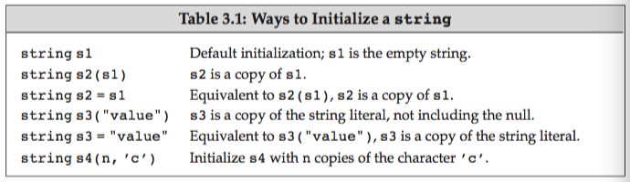
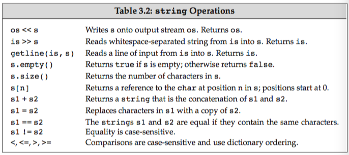
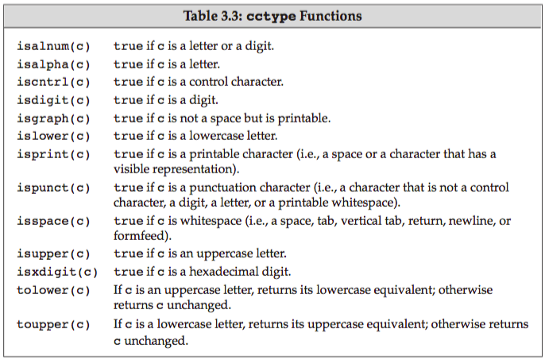
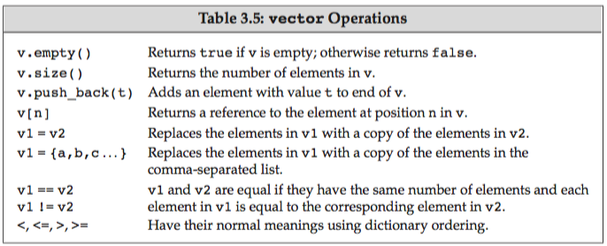
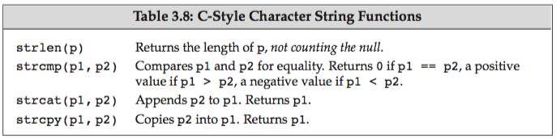
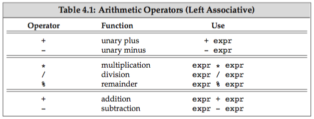
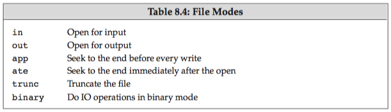
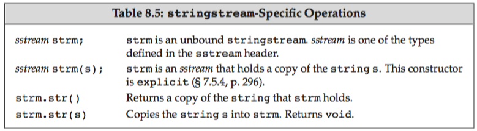

book-cpp-primer
Table of Contents
- Preface
- 1. Getting Started
- Part I: The Basics
- 2. Variables and Basic Types
- 2.1 Primitive Built-in Types
- 2.2 Variables
- 2.3 Compound Types
- 2.4
constQualifier - 2.5 Dealing with Types
- 2.6 Defining Our Own Data Structures basic
- CHAPTER SUMMARY
- DEFINED TERMS ignored
- 3. Strings, Vectors, and Arrays
- 3.1 Namespaces
usingDeclarations basic - 3.2 LIbrary
stringType - 3.3 Library
vectorType basic - 3.4 Introducing Iterators basic
- 3.5 Arrays
- 3.6 Multidimensional Arrays
- Chapter Summary
- Defined Terms ignored
- 3.1 Namespaces
- 4. Expressions
- 4.1 Fundamentals
- 4.2 Arithmetic Operators
- 4.3 Logical and Relational Operators
- 4.4 Assignment Operators
- 4.5 Increment and Decrement Operators
- 4.6 The Member Access Operators
- 4.7 The Conditional Operator
- 4.8 The Bitwise Operators
- 4.9 The
sizeofOperators - 4.10 Comma Operator
- 4.11 Type Conversions basic
- 4.12. Operator Precedence Table
- Chapter Summary
- Defined Terms ignored
- 5. Statements
- 6. Functions
- 6.1 Function Basics basic
- 6.2 Argument Passing basic
- 6.3 Return Types and the
returnStatement - 6.4 Overloaded Functions basic
- 6.5 Features for Specialized Uses
- 6.6 Function Matching
- 6.7 Pointers to Functions
- Chapter Summary
- Defined Terms ignored
- 7. Classes
- 7.1 Defining Abstract Data Types
- 7.2 Access Control and Encapsulation basic
- 7.3 Additional Class Features
- 7.4 Class Scope basic
- 7.5 Constructors Revisited
- 7.6
staticClass Members - Chapter Summary
- Defined Terms ignored
- 2. Variables and Basic Types
- Part II: The C++ Library
- Part III: Tools for Class Authors
- Part IV: Advanced Topics
- Appendix A: The Library
- A.1 Library Names and Headers
- A.2 A Brief Tour of the Algorithms
- A.1.1 Algorithms to Find and Object
- A.1.2 Other Read-Only Algorithms
- A.1.3 Binary Search Algorithms
- A.1.4 Algorithms That Write Container Elements
- A.1.5 Partitioning and Sorting Algorithms
- A.1.6 General Reordering Operations
- A.1.7 Permutation Algorithms
- A.1.8 Set Algorithms for Sorted Sequences
- A.1.9 Minimum and Maximum Values
- A.1.10 Numeric Algorithms
- A.3 Random Numbers
- Index
- New Features in C++11
Preface
In 2011, the C++ standards committee issued a major revision to the ISO C++ standard. This revised standard is latest step in C++’s evolution and continues the emphasis on programmer efficiency. The primary goals of the new standard are to
- Make the language more uniform and easier to teach and to learn
- Make the standard libraries easier, safer, and more efficient to use
- Make it easier to write efficient abstractions and libraries
Refer to the New Features in C++11.
Why read this book?
Modern C++ can be thought of as comprising three parts:
- The low-level language, much of which is inherited from C
- More advanced language features that allow us to define our own types and to organize large-scale programs and systems
- The standard library, which uses these advanced features to provide useful data structures and algorithms
Common approach: first c, then c++. -> two problems:
- Readers can get bogged down in the details inherent in low-level programming and give up in frustration.
- Those who do press on learn bad habits that they must unlearn later.
We take the opposite approach: c++ from the start.
We emphasize good style: We want to help you, the reader, develop good habits immediately and avoid needing to unlearn bad habits as you gain more sophisticated knowledge.
Changes to the fifth edition
Not every pro- grammer needs to know every detail of every feature. We’ve added these marginal icons to help the reader know which parts can be learned later and which topics are more essential.
- an image of a person studying a book: the fundamentals of the language -> the core part of the language. Everyone should read and understand these sections.
- a stack of books: advanced or special-purpose topics which can be skipped or skimmed on a first reading. You can safely put down the book at that point. However, there is no reason to spend time studying these topics until you actually need to use the feature in your own programs.
- a magnifying-glass icon: particularly tricky concepts. Readers will take the time to understand thoroughly the material presented in the sections so marked.
Structure of the book
- Part I & II: basics of the language & the library -> enough to write significant programs. -> By using the abstract facilities defined by the library, you will become more comfortable with using high-level programming techniques.
- Part III & IV: writing abstractions in the form of classes.
- Part III: Fundamentals\\\ also copy control and using classes as built-in types. Classes are the foundation for object-oriented and generic programming.
- Part IV: more specialized facilities
features that are of most use in struc- turing large, complicated systems
- Appendix A: libray algorithms
Aids to the reader
Each chapter concludes with a summary, followed by a glossary of defined terms. Readers should use these sections as a personal checklist: If you do not understand a term, restudy the corresponding part of the chapter.
Source code for the extended examples is available on the Web at the following URL: http://www.informit.com/store/c-plus-plus-primer-9780321714114
A Note about Compilers
The compiler we use most frequently is the GNU compiler, version 4.7.0. There are only a few features used in this book that this compiler does not yet implement:
- inheriting constructors,
- reference qualifiers for member functions, and
- the regular-expression library.
1. Getting Started
This chapter introduces most of the basic elements of C++: types, variables, expressions, statements, and functions. Along the way, we’ll briefly explain how to compile and execute a program.
After having read this chapter and worked through the exercises, you should be able to write, compile, and execute simple programs.
The way to learn a new programming language is to write programs.
We use the sample of a bookstore in this chapter.
1.1 Writing a Simple C++ Program
Every C++ program contains one or more functions, one of which must be named main.
int main() { return 0; }
A function definition has four elements:
- a return type
- a function name
- a (possibly empty) parameter list enclosed in parentheses
- a function body
The main function is required to have a return type of int.
Key concepts: Types: A type defines both the contents of a data element and the operations that are possible on those data.
1.1.1 Compiling and Executing Our Program
Program Source File Naming Convention
Suffix: .cc, .cxx, .cpp, .cp, .C
Running the Compiler from the Command Line
UNIX compilers tend to put their executables in files named a.out.
On UNIX systems, we obtain the status by writing:
$ echo $?
On Windows:
$ echo %ERRORLEVEL%
Note: Depending on the release of the GNU compiler you are using, you may need to specify -std=c++0x to turn on C++ 11 support.
Our preference is to use -Wall with the GNU compiler and to use /W4 with the MS compilers to generate warnings about problematic constructs.
1.2 A First Look at Input/Output
The C++ language does not define any statements to do input or output (IO). Instead, C++ includes an extensive standard library that provides IO.
iostream library:
istreamostream
The term stream is intended to suggest that the characters are generated, on consumed, sequentially over time.
Standard Input and Output Objects
The library defines four IO objects:
cin: standard input, anistreamobjectcout: standard output, anostreamobjectcerr: standard error, anostreamobjectclog: anostreamobject, for general information about the execution of the program
A Program That Uses the IO Library
#include <iostream> int main() { std::cout << "Enter two numbers:" << std::endl; int v1 = 0, v2 = 0; std::cin >> v1 >> v2; std::cout << "The sum of " << v1 << " and " << v2 << " is " << v1 + v2 << std::endl; return 0; }
The name inside angle brackets (iostream in this case) refers to a header. The #include directive must be written on a single line. In general, #include directives must appear outside any function. Typically, we put all the #include directives for a program at the beginning of the source file.
Writing to a Stream
The first statement in the body of main executes an expression. In C++ an expression yields a result and is composed of one or more operands and (usually) an operator.
The expressions in this statement use the output operator (the « opera- tor) to print a message on the standard output:
std::cout << "Enter two numbers:" << std::endl;
The << operator takes two operands: The left-hand operand must be an ostream object; the right-hand operand is a value to print.
The result of the output operator is its left-hand operand.
As a result, we can chain together output requests. Thus, our expression is equivalent to
(std::cout << "Enter two numbers:") << std::endl;
The second operator prints endl, which is a special value called a manipulator. Writing endl has the effect of ending the current line and flushing the buffer associated with that device.
Warning: Programmers often add print statements during debugging. Such statements should always flush the stream. Otherwise, if the program crashes, output may be left in the buffer, leading to incorrect inferences about where the program crashed.
Using Names from the Standard Library
The prefix std:: indicates that the names cout and endl are defined inside the namespace named std.
Namespaces allow us to avoid inadvertent collisions between the names we define and uses of those same names inside a library. All the names defined by the standard library are in the std namespace.
The scope operator: ::
Section 3.1 (p. 82) will show a simpler way to access names from the library.
Reading from a Stream
We start by defining two variables named v1 and v2 to hold the input:
int v1 = 0, v2 = 0;
The next statement
std::cin >> v1 >> v2;
reads the input.
The input operator (the » operator) behaves analogously to the output operator. It takes an istream as its left-hand operand and an object as its right-hand operand. It reads data from the given istream and stores what was read in the given object. This expression is equivalent to
(std::cin >> v1) >> v2;
We can combine a sequence of input requests into a single statement.
Completing the Program
std::cout << "The sum of " << v1 << " and " << v2 << " is " << v1 + v2 << std::endl;
What is interesting in this example is that the operands are not all the same kinds of values. The library defines versions of the input and output operators that handle operands of each of these differing types.
1.3 A Word about Comments
Programmers tend to believe comments even when other parts of the system docu- mentation are out of date. An incorrect comment is worse than no comment at all because it may mislead the reader. When you change your code, be sure to update the comments, too!
[ME: DON'T USE COMMENTS, USE TESTS INSTEAD. Refer to book-modern-cpp-programming-with-tdd.html]
Kinds of Comments in C++
There are two kinds of comments in C++: single-line and paired.
Comment Pairs Do Not Nest
A comment that begins with /* ends with the next */. As a result, one comment pair cannot appear inside another. The compiler error messages that result from this kind of mistake can be mysterious and confusing.
We often need to comment out a block of code during debugging. Because that code might contain nested comment pairs, the best way to comment a block of code is to insert single-line comments at the beginning of each line in the section we want to ignore:
// /* // * everything inside a single-line comment is ignored // * including nested comment pairs // */
1.4 Flow of Control
Statements normally execute sequentially. Programming languages provide various flow-of-control state- ments that allow for more complicated execution paths.
1.4.1 The while Statement
A while statement repeatedly executes a section of code so long as a given con- dition is true.
while (condition)
statement
A while executes by (alternately) testing the condition and executing the associated statement until the condition is false.
[ME: The use of while is preferred. Refer to Cpp Tdd Notes: Transformation Priority Premise]
1.4.2 The for Statement
This pattern—using a variable in a condition and incrementing that variable in the body—happens so often that the language defines a second statement, the for statement.
#include <iostream> int main() { int sum = 0; // for(initialization, condition; increment) for (int val = 1; val <= 10; ++val) sum += val; std::cout << "Sum of 1 to 10 inclusive is " << sum << std::endl; return 0; }
The overall execution flow of this for is:
- Create
valand initialize it to 1. - Test whether val is less than or equal to 10. If the test succeeds, execute the for body. If the test fails, exit the loop and continue execution with the first statement following the
forbody. - Increment
val. - Repeat the test in step 2, continuing with the remaining steps as long as the condition is true.
1.4.3 Reading an Unknown Number of Inputs
A logical extension of this program would be to ask the user to input a set of numbers to sum. In this case, we won’t know how many numbers to add. Instead, we’ll keep reading numbers until there are no more numbers to read:
#include <iostream> int main() { int sum = 0, value = 0; while(std::cin >> value) { sum += value; } std::cout << "Sum is: " << sum << std::endl; return 0; }
while (std::cin >> value)
The input operator returns its left operand, which in this case is std::cin. This condition, therefore, tests std::cin.
When we use an istream as a condition, the effect is to test the state of the stream. If the stream is valid—that is, if the stream hasn’t encountered an error— then the test succeeds. An istream becomes invalid when we hit end-of-file or encounter an invalid input, such as reading a value that is not an integer. An istream that is in an invalid state will cause the condition to yield false.
Tip: ENTERING AN END-OF-FILE FROM THE KEYBOARD
- Windows: C-z
- Unix: C-d
1.4.4 The if Statement
if (condition) { statements } else { statements }
Note: KEY CONCEPT: INDENTATION AND FORMATTING OF C++ PROGRAMS
1.5 Introducing Classes
Next we need to define a data structure to represent our transaction data. -> class: a class defines a type along with a collection of operations that are related to that type.
To use a class we need to know three things:
- What is its name?
- Where is it defined?
- What operations does it support?
We’ll assume that the class is named Sales_item and that it is already defined in a header named Sales_item.h.
Con- ventionally, header file names are derived from the name of a class defined in that header. Suffix: .h, .H, .hpp, .hxx.
The standard library headers typically have no suffix at all.
Compilers usually don’t care about the form of header file names, but IDEs sometimes do.
1.5.1 The Sales_item Class
The purpose of the Sales_item class is to represent the total revenue, number of copies sold, and average sales price for a book.
What we need to know is what operations objects of that type can perform.
We can define a variable of a class type:
Sales_item item;
In addition to being able to define variables of type Sales_item, we can:
- Call a function named
isbnto fetch the ISBN from a Sales_item object. - Use the input (>>) and output (<<) operators to read and write objects of type Sales_item.
- Use the assignment operator (=) to assign one Sales_item object to another.
- Use the addition operator (+) to add two Sales_item objects. The two objects must refer to the same ISBN. The result is a new Sales_item object whose ISBN is that of its operands and whose number sold and revenue are the sum of the corresponding values in its operands.
- Use the compound assignment operator (+=) to add one Sales_item object into another.
In general, the class author determines all the operations that can be used on objects of the class type.
[ME: Use TDD with TPP to drive in code incrementally, refer to 10.4 The Transformation Priority Premise.]
Reading and Writing Sales_items
Now that we know what operations we can use with Sales_item objects, we can write programs that use the class.
#include <iostream> #include "Sales_item.h" int main() { Sales_item book; // read ISBN, number of copies sold, and sales price std::cin >> book; // write ISBN, number of copies sold, total revenue, and average price std::cout << book << std::endl; return 0; }
If the input to this program is
0-201-70353-X 4 24.99
then the output will be
0-201-70353-X 4 99.96 24.99
Note: Headers from the standard library are enclosed in angle brackets (< >). Those that are not part of the library are enclosed in double quotes (=" "=).
Adding Sales_items
A more interesting example adds two Sales_item objects:
#include <iostream> #include "Sales_item.h" int main() { Sales_item item1, item2; std::cin >> item1 >> item2; // read a pair of transactions std::cout << item1 + item2 << std::endl; // print their sum return 0; }
If we give this program the following input
0-201-78345-X 3 20.00 0-201-78345-X 2 25.00
our output is
0-201-78345-X 5 110 22
Tip: USING FILE REDIRECTION
It can be tedious to repeatedly type these transactions as input to the programs you are testing. Most operating systems support file redirection, which lets us associate a named file with the standard input and the standard output:
$ addItems <infile >outfile
1.5.2 A First Look at Member Functions
Our program that adds two Sales_items should check whether the objects have the same ISBN.
#include < iostream > #include "Sales_item.h" int main() { Sales_item item1, item2; std: :cin >> item1 >> item2; // firstcheckthatitem1anditem2representthesamebook if (item1.isbn() == item2.isbn()) { std: :cout << item1 + item2 << std: :endl; return 0; // indicate success } else { std: :cerr << "Data must refer to same ISBN" << std: :endl; return - 1; // indicate failure } }
What Is a Member Function?
A member function is a function that is defined as part of a class. Member functions are sometimes referred to as methods.
The dot operator (.) applies only to objects of class type. The left-hand operand must be an object of class type, and the right-hand operand must name a member of that type. The result of the dot operator is the member named by the right-hand operand.
We call a function using the call operator (the () operator).
The equality operator (==).
1.6 The Bookstore Program
We are now ready to solve our original bookstore problem.
- We need to read a file of sales transactions and produce a report that shows, for each book, the total number of copies sold, the total revenue, and the average sales price.
- We’ll assume that all the transactions for each ISBN are grouped together in the input.
#include <iostream> #include "Sales_item.h" int main() { Sales_item total; // variable to hold data for the next transaction // read the first transaction and ensure that there are data to process if (std::cin >> total) { Sales_item trans; // variable to hold the running sum // read and process the remaining transactions while (std::cin >> trans) { // if we're still processing the same book if (total.isbn() == trans.isbn()) total += trans; // update the running total else { // print results for the previous book std::cout << total << std::endl; total = trans; // total now refers to the next book } } std::cout << total << std::endl; // print the last transaction } else { // no input! warn the user std::cerr << "No data?!" << std::endl; return -1; // indicate failure } return 0; }
CHAPTER SUMMARY
- How to compile and execute simple C++ programs.
mainfunction- How to define variables.
- How to input and output.
- if, for, and while statements.
- How to create and use objects of a class.
Later chapters will show how to define our own classes.
DEFINED TERMS ignored
Part I: The Basics
Tthe most fundamental of these common features are:
- Built-in types such as integers, characters, and so forth
- Variables, which let us give names to the objects we use
- Expressions and statements to manipulate values of these types
- Control structures, such as if or while, that allow us to condi- tionally or repeatedly execute a set of actions
- Functions that let us define callable units of computation
Most programming languages supplement these basic features in two ways:
- They let programmers extend the language by defining their own types.
- They provide library routines that define useful functions and types not otherwise built into the language.
In C++, the type of an object determines what operations can be performed on it. Whether a par- ticular expression is legal depends on the type of the objects in that expression.
C++ is a statically typed language; type checking is done at compile time. As a consequence, the com- piler must know the type of every name used in the program.
C++ provides a set of built-in types, operators to manipulate those types, and a small set of statements for program flow control.
At this basic level, C++ is a simple language. Its expressive power arises from its support for mechanisms that allow the programmer to define new data structures.
The most important feature in C++ is the class: class types <-> built-in types. A major design goal of C++ is to let programmers define their own types that are as easy to use as the built-in types. The Standard C++ library uses these features to implement a rich library of class types and associated functions.
The first step in mastering C++ — learning the basics of the lan- guage and library—is the topic of Part I:
- Chapter 2 covers the built-in types and looks briefly at the mechanisms for defining our own new types.
- Chapter 3 introduces two of the most fundamental library types:
stringandvector. That chapter also covers arrays, which are a lower-level data structure built into C++ and many other languages. - Chapters 4 through 6 cover expressions, statements, and functions.
- This part concludes in Chapter 7, which describes the basics of building our own class types.
2. Variables and Basic Types
Types tell us what our data mean and what operations we can perform on those data.
C++ has extensive support for types.
2.1 Primitive Built-in Types
C++ primative types:
- arithmetic types: characters, integers, boolean values, and floating-point numbers.
voidtype: no associated values, can be used in only a few circumstances, most commonly as the return type for functions.
2.1.1 Arithmetic Types
The arithmetic types are divided into two categories: integral types (which include character and boolean types) and floating-point types.
There are several character types, most of which exist to support internationalization:
- The basic character type is char.
- The wchar_t type is guaranteed to be large enough to hold any character in the machine’s largest extended character set.
- The types char16_t and char32_t are intended for Unicode characters.
The language guarantees that an int will be at least as large as short, a long at least as large as an int, and long long at least as large as long. The type long long was introduced by the new standard.
The floating-point types represent single-, double-, and extended-precision values.
The standard specifies a minimum number of significant digits:
- float: 7 significant digits
- double: 16
- long double: vary from one implementation to another.
Signed and Unsigned Typescript
Except for bool and the extended character types, the integral types may be signed or unsigned.
We obtain the corresponding unsigned type by adding unsigned to the type.
unsigned int = unsigned
There are three distinct basic character types: char,signed char,and unsigned char.
Inparticular,charisnotthesame type as signed char. Although there are three character types, there are only two representations: signed and unsigned. The (plain) char type uses one of these representations. Which of the other two character representations is equivalent to char depends on the compiler.
Advice: DECIDING WHICH TYPE TO USE
C++, like C, is designed to let programs get close to the hardware when necessary. A few rules of thumb can be useful in deciding which type to use:
- Use an unsigned type when you know that the values cannot be negative.
- Use int for integer arithmetic.
shortis ususally too small and, in practice,longoften has the same size as int. If your data values are larger than the minimum guaranteed size of an int, then use long long. - Do not use plain
charorboolin arithmetic expression. Use them only to hold characters or truth values. Computations using char are especially problematic becausecharissignedon some machine andunsignedon others. Ifyou need a tiny integer, explicitly specify eithersigned charorunsigned char. - Use
doublefor floating-point computations; float usually does not have enough precision, and the cost of double-precision calculations versus single- precision is negligible. In fact, on some machines, double-precision operations are faster than single. The precision offered by long double usually is unnec- essary and often entails considerable run-time cost.
2.1.2 Type Conversions
Among the operations that many types support is the ability to convert objects of the given type to other, related types.
Type conversions happen automatically when we use an object of one type where an object of another type is expected (refer to section 4.11).
When we assign one arithmetic type to another:
bool b = 42; // b is true int i = b; // i has value 1 i = 3.14; // i has value 3 double pi = i; // pi has value 3.0 unsigned char c = -1; // assuming 8-bit chars, c has value 255 signed char c2 = 256; // assuming 8-bit chars, the value of c2 is undefined
what happens depends on the range of the values that the types permit:
- When we assign one of the nonbool arithmetic types to a bool object, the result is false if the value is 0 and true otherwise.
- When we assign a bool to one of the other arithmetic types, the resulting value is 1 if the bool is true and 0 if the bool is false.
- When we assign a floating-point value to an object of integral type, the value is truncated. The value that is stored is the part before the decimal point.
- When we assign an integral value to an object of floating-point type, the fractional part is zero. Precision may be lost if the integer has more bits than the floating-point object can accommodate.
- If we assign an out-of-range value to an object of unsigned type, the result is the remainder of the value modulo the number of values the target type can hold. For example, an 8-bit unsigned char can hold values from 0 through 255, inclusive. If we assign a value outside this range, the compiler assigns the remainder of that value modulo 256. Therefore, assigning –1 to an 8-bit unsigned char gives that object the value 255.
- If we assign an out-of-range value to an object of signed type, the result is undefined. The program might appear to work, it might crash, or it might produce garbage values.
Advice: avoid undefined and implementation-defined behavior!
Expressions Involving Unsigned Types
Converting an int to unsigned executes the same way as if we assigned the int to an unsigned:
unsigned u = 10; int i = -42; std::cout << i + i << std::endl; // prints -84 std::cout << u + i << std::endl; // if 32-bit ints, prints 4294967264
If we subtract a value from an unsigned, we must be sure that the result cannot be negative:
unsigned u1 = 42, u2 = 10; std::cout << u1 - u2 << std::endl; // ok: result is 32 std::cout << u2 - u1 << std::endl; // ok: but the result will wrap around
An unsigned cannot be less than zero.
// WRONG: u can never be less than 0; the condition will always succeed for (unsigned u = 10; u >= 0; --u) std::cout << u << std::endl;
One way to write this loop is to use a while instead of a for. Using a while lets us decrement before (rather than after) printing our value:
unsigned u = 11; // start the loop one past the first element we want to print while (u > 0) { --u; // decrement first, so that the last iteration will print 0 std::cout << u << std::endl; }
Warning: Don't mix signed and unsigned types! – Signed values are auto- matically converted to unsigned.
2.1.3 Literals
A value, such as 42, is known as a literal because its value self-evident. Every literal has a type. The form and value of a literal determine its type.
Integer and Floating-Point Literals
Write an integer literal using decimal, octal, or hexadecimal notation:
20 /* decimal */ 024 /* octal */ 0x14 0X14 /* hexadecimal */
The type of an integer literal depends on its value and notation. By default,
- decimal literals are signed type, [int, long, long long] (the first type in this list).
- octal and hexadecimal literals can be either signed or unsigned types. [int, unsigned int, long, unsigned long, long long] (the first type in this list).
- There are no literals of type
short. - It is an error to use a literal that is too large to fit in the largest related type.
Note: The value of a decimal literal is never a negative number. The minus sign is an operator that negates the value of its (literal) operand.
Floating-point literals include either a decimal point or an exponent specified using scientific notation (e or E)
3.14159 3.14159E0 0. 0e0 .001
By default, floating-point literals have type double.
We can override these defaults by using a suffix (refer to Table 2.2).
Character and Character String Literals
- Char literal: A character enclosed within single quotes
- String literal: Zero or more characters enclosed in double quotation marks. The type of a string literal is array of constant chars (refer to section 3.5.4). The compiler appends a null character (’\0’) to every string literal. Thus, the actual size of a string literal is one more than its apparent size.
’a’ // character literal "Hello World!" // string literal
Two string literals that appear adjacent to one another and that are separated only by spaces, tabs, or newlines are concatenated into a single literal. We use this form of literal when we need to write a literal that would otherwise be too large to fit comfortably on a single line:
// multiline string literal std::cout << "a really, really long string literal " "that spans two lines" << std::endl;
[ME: Test]
TEST(TwoStringLiteralsAppearingAdjacentAndSeparatedBySpaces, AreConcatenatedIntoSingleLiteral) { auto concatenated_string = "aaaaaaaaaa " "bbbbbbbbbb"; ASSERT_THAT(strlen(concatenated_string), Eq(21u)); }
Escape Sequences
Our program cannot use some characters directly:
- nonprintalbe characters: backspace, control characters, etc. which have no visible image.
- Characters with special meaning in the language: single & double quoteation marks, question mark, and backslash, etc.)
-> Escape sequence is used to represent such characters, which begins with a backslash.
The language defines several escape sequences:
We use an escape sequence as if it were a single character:
std::cout << ’\n’; // prints a newline std::cout << "\tHi!\n"; // prints a tab followd by "Hi!" and a newline
We can also write a generalized escape sequence, which is
\xfollowed by one or more hexadecimal digits or- a
\followed by one, two, or three octal digits.
\7 (bell) \12 (newline) \40 (blank) \0 (null) \115 (’M’) \x4d (’M’)
We use these escape sequences as we would any other character:
std::cout << "Hi \x4dO\115!\n"; // prints Hi MOM! followed by a newline std::cout << ’\115’ << ’\n’; // prints M followed by a newline
Note that
- if a
\is followed by more than three octal digits, only the first three are associated with the \. For example, "\1234" represents two characters: the character represented by the octal value 123 and the character 4. - In contrast,
\xuses up all the hex digits following it; "\x1234" represents a single, 16-bit character composed from the bits corresponding to these four hexadecimal digits. – Because most machines have 8-bit chars, such values are unlikely to be useful. Ordinarily, hexadecimal characters with more than 8 bits are used with extended characters sets using one of the prefixes from Table 2.2.
Specifying the Type of a Literal
We can override the default type of an integer, floating- point, or character literal by supplying a suffix or prefix as listed in Table 2.2.
Examples:
L’a’ // wide character literal, type is wchar_t u8"hi!" // utf-8 string literal (utf-8 encodes a Unicode character in 8 bits) 42ULL // unsigned integer literal, type is unsigned long long 1E-3F // single-precision floating-point literal, type is float 3.14159L // extended-precision floating-point literal, type is long double
Best Practice: When you write a long literal, use the uppercase L; the lowercase letter l is too easily mistaken for the digit 1.
Boolean and Pointer Literals
Boolean literals: true or false
bool test = false;
Pointer literal: nullptr (refer to section 2.3.2).
2.2 Variables
A variable provides us with named storage that our programs can manipulate.
Each variable in C++ has a type. The type determines
- the size and layout of the variable’s memory,
- the range of values that can be stored within that memory,
- the set of operations that can be applied to the variable.
C++ programmers tend to refer to variables as “variables” or “objects” interchangeably.
2.2.1 Variable Definitions
A simple variable definition consists of a type specifier, followed by a list of one or more variable names separated by commas, and ends with a semicolon.
A definition may (optionally) provide an initial value for one or more of the names it defines:
int sum = 0, value, // sum, value, and units_sold have type int units_sold = 0; // sum and units_sold have initial value 0 Sales_item item; // item has type Sales_item (see § 1.5.1 (p. 20)) // string is a library type, representing a variable-length sequence of characters std::string book("0-201-78345-X"); // book initialized from string literal
Tip: The string library gives us several ways to initialize string objects. One of these ways is as a copy of a string literal (section 2.1.3, p. 39). Thus, book is initialized to hold the characters 0-201-78345-X.
Initializers
An object that is initialized gets the specified value at the moment it is created.
When a definition defines two or more variables, the name of each object becomes visible immediately. Thus, it is possible to initialize a variable to the value of one defined earlier in the same definition.
// ok: price is defined and initialized before it is used to initialize discount double price = 109.99, discount = price * 0.16; // ok: call applyDiscount and use the return value to initialize salePrice double salePrice = applyDiscount(price, discount);
Initialization in C++ is a surprisingly complicated topic. – It is tempting to think of initialization as a form of assignment, but initialization and assignment are different operations in C++.
Note: Initialization is not assignment.
- Initialization happens when a variable is given a value when it is created.
- Assignment obliterates an object’s current value and replaces that value with a new one.
List Initialization
The language defines several different forms of initialization.
For example, we can use any of the following four different ways to define an int variable named units_sold and initialize it to 0:
int units_sold = 0; int units_sold = {0}; // <---- int units_sold{0}; // <---- int units_sold(0); // <----
List initialization: The generalized use of curly braces for initialization was introduced as part of the new standard. Refer to section 3.3.1. [ME: cxx11]
When used with variables of built-in type, this form of initialization has one important property: The compiler will not let us list initialize variables of built-in type if the initializer might lead to the loss of information:
long double ld = 3.1415926536; int a{ld}, b = {ld}; // error: narrowing conversion required int c(ld), d = ld; // ok: but value will be truncated
As we’ll see in Chapter 16, such initializations might happen unintentionally. We’ll say more about these forms of initialization in section 3.2.1 (p. 84) and section 3.3.1 (p. 98).
Default Initialization
When we define a variable without an initializer, the variable is default initialized. Such variables are given the “default” value.
What that default value is depends on the type of the variable and may also depend on where the variable is defined.
The value of an object of built-in type that is not explicitly initialized depends on where it is defined.
- Variables defined outside any function body are initialized to zero.
- With one exception (refer to /section 6.1.1), variables of built-in type defined /inside a function are uninitialized. – The value of an uninitialized variable of built-in type is undefined (2.1.2, p. 36). It is an error to copy or otherwise try to access the value of a variable whose value is undefined.
Tip: we recommend initializing every object of built-in type.
Each class controls how we initialize objects of that class type. In particular, it is up to the class whether we can define objects of that type without an initializer. If we can, the class determines what value the resulting object will have.
For example, the library string class says that if we do not supply an initializer, then the resulting string is the empty string:
std::string empty; // empty implicitly initialized to the empty string Sales_item item; // default-initialized Sales_item object
Some classes require that every object be explicitly initialized. The compiler will complain if we try to create an object of such a class with no initializer.
2.2.2 Variable Declarations and Definitions
Separate compilation allows programs to be written in logical parts. – Splitting programs into several files, each of which can be compiled independently.
To support separate compilation, C++ distinguishes between declarations and definitions.
- A declaration makes a name known to the program.
- A definition creates the associated entity.
Variable declaration/definition:
- A variable declaration specifies the type and name of the variable.
- A variable definition is a declaration: In addition to specifying the name and type, a definition also allocates storage and may provide the variable with an initial value.
- To obtain a declaration that is not also a definition, use
extern:
extern int i; // declares but does not define i int j; // declares and defines j
- Any declaration that includes an explicit initializer is a definition. – We can provide an initializer on a variable defined as extern, but doing so overrides the extern. An extern that has an initializer is a definition:
extern double pi = 3.1416; // definition
- It is an error to provide an initializer on an extern inside a function.
Note: Variables must be defined exactly once but can be declared many times.
About how C++ supports separate compilation, refer to 2.6.3 and 6.1.3.
2.2.3 Identifiers
Identifiers in C++ can be composed of letters, digits, and the underscore character.
- no limit on name length
- must begin with either a letter or an underscore.
- case-sensitive
The language reserves a set of names (Table 2.3 and Table 2.4). These names may not be used as identifiers.
The standard also reserves a set of names for use in the standard library.
- Our identifiers may not contain two consecutive underscores (
__) - Our identifiers can not begin with an underscore followed immediately by an uppercase letter (
_A). - Identifiers defined outside a function may not begin with an underscore.
| alignas | continue | friend | register | true |
| alignof | decltype | goto | reinterpret_cast | try |
| asm | default | if | return | typedef |
| auto | delete | inline | short | typeid |
| bool | do | int | signed | typename |
| break | double | long | sizeof | union |
| case | dynamic_cast | mutable | static | unsigned |
| catch | else | namespace | static_assert | using |
| char | enum | new | static_cast | virtual |
| char16_t | explicit | noexcept | struct | void |
| char32_t | export | nullptr | switch | volatile |
| class | extern | operator | template | wchar_t |
| const | false | private | this | while |
| constexpr | float | protected | thread_local | |
| const_cast | for | public | throw |
Table 2.4: C++ Alternative Operator Names
| and | bitand | compl | not_eq | or_eq | xor_eq |
| and_eq | bitor | not | or | xor |
Conventions for Variable Names
There are a number of generally accepted conventions for naming variables.
- An identifier should give some indication of its meaning.
- Variable names mormally are lowercase —index, not Index or INDEX.
- Like Sales_item, classes we define usually begin with an uppercase letter.
- Identifiers with multiple words should visually distinguish each word, for example, student_loan or studentLoan, not studentloan.
2.2.4 Scope of a Name
Each name that is in use refers to a specific entity—a variable, function, type, and so on.
A given name can be reused to refer to different entities at different points in the program. -> A scope is a part of the program in which a name has a particular meaning.
Most scopes in C++ are delimited by curly braces.
Names are visible from the point where they are declared until the end of the scope in which the declaration appears.
An example from 1.4.2 The for Statement:
#include <iostream> int main() { int sum = 0; // for(initialization, condition; increment) for (int val = 1; val <= 10; ++val) sum += val; std::cout << "Sum of 1 to 10 inclusive is " << sum << std::endl; return 0; }
This program defines three names—main, sum, and val—and uses the namespace name std, along with two names from that namespace—cout and endl.
main: this name is defined outside any curly braces. Like most names defined outside a function,mainhas global scope.sum: this name is defined within the scope of the body ofmainfunction. It has block scope.val: The name val is defined in the scope of the for statement. It can be used in that statement but not elsewhere in main.
Advice: DEFINE VARIABLES WHERE YOU FIRST USE THEM
- Doing so improves readability by making it easy to find the definition of the variable.
- More importantly, it is often easier to give the variable a useful initial value when the variable is defined close to where it is first used.
Nested Scopes
Scopes can contain other scopes. – inner scope vs. outer scope.
Once a name has been declared in a scope, that name can be used by scopes nested inside that scope. Names declared in the outer scope can also be redefined in an inner scope:
#include <iostream> // Program for illustration purposes only: It is bad style for a function // to use a global variable and also define a local variable with the same name int reused = 42; // reused has global scope int main() { int unique = 0; // unique has block scope // output #1: uses global reused; prints 42 0 std::cout << reused << " " << unique << std::endl; int reused = 0; // new, local object named reused hides global reused // output #2: uses local reused; prints 0 0 std::cout << reused << " " << unique << std::endl; // output #3: explicitly requests the global reused; prints 42 0 std::cout << ::reused << " " << unique << std::endl; // <----- return 0; }
- Output #3 uses the scope operator (1.2, p. 8) to override the default scoping rules. The global scope has no name. Hence, when the scope operator has an empty left-hand side, it is a request to fetch the name on the right-hand side from the global scope.
Warning: It is almost always a bad idea to define a local variable with the same name as a global variable that the function uses or might use.
2.3 Compound Types
A compound type is a type that is defined in terms of another type.
We will cover two compound types (references and pointers) in this chapter.
Defining variables of compound type is more complicated than the declarations we’ve seen so far.
A declaration is a base type followed by a list of declarators. Each declarator names a variable and gives the variable a type that is related to the base type.
- Simple declarations consist of a type followed by a list of variable names. The declarations we have seen so far have declarators that are nothing more than variable names. The type of such variables is the base type of the declaration.
- More complicated declarators specify variables with compound types that are built from the base type of the declaration.
2.3.1 References
A reference defines an alternative name for an object.
A reference type “refers to” another type. We define a reference type by writing a declarator of the form &d, where d is the name being declared:
int ival = 1024; int &refVal = ival; // refVal refers to (is another name for) ival int &refVal2; // error: a reference must be initialized
When we define a reference, instead of copying the initializer’s value, we bind the reference to its initializer. Once initialized, a reference remains bound to its initial object. There is no way to rebind a reference to refer to a different object. Because there is no way to rebind a reference, references must be initialized.
Note: The new standard introduced a new kind of reference: an “rvalue reference,” which we’ll cover in 13.6.1 (p. 532). These references are primarily intended for use inside classes. Technically speaking, when we use the term reference, we mean “lvalue reference.”
A Reference Is an Alias
Note: A reference is not an object. Instead, a reference is just another name for an already existing object.
After a reference has been defined, all operations on that reference are actually operations on the object to which the reference is bound.
Because references are not objects, we may not define a reference to a reference.
Reference Definitions
We can define multiple references in a single definition.
With two exceptions that we’ll cover in 2.4.1 (p. 61) and 15.2.3 (p. 601), the type of a reference and the object to which the reference refers must match exactly. Moreover, for reasons we’ll explore in § 2.4.1, a reference may be bound only to an object, not to a literal or to the result of a more general expression:
int &refVal4 = 10; // error: initializer must be an object double dval = 3.14; int&refVal5=dval;// error: initializer must be an int object
2.3.2 Pointers
A pointer is a compound type that “points to” another type.
- Like references, pointers are used for indirect access to other objects.
- Unlike a reference, a pointer is an object in its own right.
- Pointers can be assigned and copied;
- a single pointer can point to several different objects over its lifetime.
- Unlike a reference, a pointer need not be initialized at the time it is defined.
- Like other built-in types, pointers defined at block scope have undefined value if they are not initialized.
We define a pointer type by writing a declarator of the form *d, where d is the name being defined.
Taking the Address of an Object
A pointer holds the address of another object.
We get the address of an object by using the address-of operator (the & operator):
int ival = 42; int *p = &ival; // p holds the address of ival; p is a pointer to ival
Note: Because references are not objects, they don’t have addresses. Hence, we may not define a pointer to a reference.
With two exceptions, which we cover in § 2.4.2 (p. 62) and § 15.2.3 (p. 601), the types of the pointer and the object to which it points must match:
double dval; double *pd = &dval; // ok: initializer is the address of a double double *pd2 = pd; // ok: initializer is a pointer to double int*pi=pd; // error:typesofpiandpddiffer pi = &dval; // error: assigning the address of a double to a pointer to int
The types must match because the type of the pointer is used to infer the type of the object to which the pointer points. If a pointer addressed an object of another type, operations performed on the underlying object would fail.
Pointer Value
The value (i.e., the address) stored in a pointer can be in one of four states:
- It can point to an object.
- It can point to the location just immediately past the end of an object.
- It can be a null pointer, indicating that it is not bound to any object.
- It can be invalid; values other than the preceding three are invalid.
It is an error to copy or otherwise try to access the value of an invalid pointer. As when we use an uninitialized variable, this error is one that the compiler is unlikely to detect. The result of accessing an invalid pointer is undefined. Therefore, we must always know whether a given pointer is valid.
Although pointers in cases 2 and 3 are valid, there are limits on what we can do with such pointers. Because these pointers do not point to any object, we may not use them to access the (supposed) object to which the pointer points. If we do attempt to access an object through such pointers, the behavior is undefined.
Using a Pointer to Access an Object
When a pointer points to an object, we can use the dereference operator (the * operator) to access that object:
int ival = 42; int *p = &ival; // p holds the address of ival; p is a pointer to ival cout << *p; // * yields the object to which p points; prints 42
Dereferencing a pointer yields the object to which the pointer points.
We can assign to that object by assigning to the result of the dereference:
*p = 0; // * yields the object; we assign a new value to ival through p cout<<*p;// prints0
When we assign to *p, we are assigning to the object to which p points. – We may dereference only a valid pointer that points to an object.
KEY CONCEPT: SOME SYMBOLS HAVE MULTIPLE MEANINGS
Some symbols, such as & and *, are used as both an operator in an expression and as part of a declaration. Think of them as if they were different symbols.
- In declarations, & and * are used to form compound types.
- In expressions, these same symbols are used to denote an operator.
int i = 42; int &r2 = *p; // & follows a type and is part of a declaration; r is a reference int *p; // * follows a type and is part of a declaration; p is a pointer p = &i; // & is used in an expression as the address-of operator *p = i; // * is used in an expression as the dereference operator int &r2 = *p; // & is part of the declaration; * is the dereference operator
Null Pointers
A null pointer does not point to any object. Code can check whether a pointer is null before attempting to use it.
There are several ways to obtain a null pointer:
int *p1 = nullptr;// equivalenttoint*p1=0; int *p2 = 0; // directlyinitializesp2fromtheliteralconstant0 // must#includecstdlib int *p3 = NULL; // equivalent to int *p3 = 0;
- The most direct approach is to initialize the pointer using the literal
nullptr, which was introduced by the new standard. nullptr is a literal that has a special type that can be converted (§ 2.1.2, p. 35) to any other pointer type. – Recommended! - Older programs sometimes use a preprocessor variable named
NULL, which the cstdlib header defines as 0. Preprocessor variables are managed by the preprocessor, and are not part of thestdnamespace. – Modern C++ programs generally should avoid using NULL and use nullptr instead.
It is illegal to assign an int variable to a pointer, even if the variable’s value happens to be 0.
int zero = 0; pi = zero; // error: cannot assign an int to a pointer
ADVICE: INITIALIZE ALL POINTERS
Uninitialized pointers are a common source of run-time errors. Using an uninitialized pointer almost always results in a run-time crash. However, debugging the resulting crashes can be surprisingly hard.
- If possible, define a pointer only after the object to which it should point has been defined.
- If there is no object to bind to a pointer, then initialize the pointer to nullptr or zero. That way, the program can detect that the pointer does not point to an object.
Assignment and Pointers
Both pointers and references give indirect access to other objects. However, there are important differences in how they do so. The most important is that
- a reference is not an object. Once we have defined a reference, there is no way to make that reference refer to a different object. When we use a reference, we always get the object to which the reference was initially bound.
- a pointer is an object. As with any other (nonreference) variable, when we assign to a pointer, we give the pointer itself a new value. Assignment makes the pointer point to a different object.
int i = 42; int *pi = 0; // pi is initialized but addresses no object int *pi2 = &i; // pi2 initialized to hold the address of i int *pi3; // if pi3 is defined inside a block, pi3 is uninitialized pi3 = pi2; // pi3 and pi2 address the same object, e.g., i pi2 = 0; // pi2 now addresses no object
The important thing to keep in mind is that assignment changes its left-hand operand.
Other Pointer Operations
So long as the pointer has a valid value, we can use a pointer in a condition. Just as when we use an arithmetic value in a condition (§ 2.1.2, p. 35),
- if the pointer is 0, then the condition is false.
- Any nonzero pointer evaluates as true.
- Given two valid pointers of the same type, we can compare them using the equality (
=) or inequality (!) operators.
Because these operations use the value of the pointer, a pointer used in a con- dition or in a comparsion must be a valid pointer. Using an invalid pointer as a condition or in a comparison is undefined.
§ 3.5.3 (p. 117) will cover additional pointer operations.
void* Pointers
The type void* is a special pointer type that can hold the address of any object. Like any other pointer, a void* pointer holds an address, but the type of the object at that address is unknown:
double obj = 3.14, *pd = &obj; // ok: void* can hold the address value of any data pointer type void *pv = &obj; // obj can be an object of any type pv = pd; // pv can hold a pointer to any type
There are only a limited number of things we can do with a void* pointer:
- We can compare it to another pointer,
- we can pass it to or return it from a function,
- we can assign it to another void* pointer.
- We cannot use a void* to operate on the object it addresses—we don’t know that object’s type, and the type determines what operations we can perform on the object.
Generally, we use a void* pointer to deal with memory as memory, rather than using the pointer to access the object stored in that memory. We’ll cover using void* pointers in this way in § 19.1.1 (p. 821).
§ 4.11.3 (p. 163) will show how we can retrieve the address stored in a void* pointer.
2.3.3 Understanding Compound Type Declarations
A variable definition consists of a base type and a list of declarators.
Each declarator can relate its variable to the base type differently from the other declarators in the same definition. Thus, a single definition might define variables of different types:
// iis anint;pis a pointer toint;ris a reference toint int i = 1024, *p = &i, &r = i;
Defining Multiple Variables
It is a common misconception to think that the type modifier (* or &) applies to all the variables defined in a single statement. Part of the problem arises because we can put whitespace between the type modifier and the name being declared:
int* p; // legal but might be misleading
Despite appearances, the base type of this declaration is int, not int*. The * modifies the type of p. It says nothing about any other objects that might be declared in the same statement:
int* p1, p2; // p1 is a pointer to int; p2 is an int
There are two common styles used to define multiple variables with pointer or reference type.
- The first places the type modifier adjacent to the identifier:
int *p1, *p2; // bothp1andp2arepointerstoint
This style emphasizes that the variable has the indicated compound type. In this book we use this style and place the * (or the &) with the variable name.
- The second places the type modifier with the type but defines only one variable per statement:
int* p1; // p1 is a pointer to int int* p2; // p2 is a pointer to int
This style emphasizes that the declaration defines a compound type.
Pointers to Pointers
In general, there are no limits to how many type modifiers can be applied to a declarator.
We indicate each pointer level by its own . That is, we write * for a pointer to a pointer, * for a pointer to a pointer to a pointer, and so on:
int ival = 1024; int *pi = &ival; // pi points to an int int **ppi = π // ppi points to a pointer to an int
Just as dereferencing a pointer to an int yields an int, dereferencing a pointer to a pointer yields a pointer. To access the underlying object, we must dereference the original pointer twice:
cout << "The value of ival\n" << "direct value: " << ival << "\n" << "indirect value: " << *pi << "\n" << "doubly indirect value: " << **ppi << endl;
References to Pointers
A reference is not an object. Hence, we may not have a pointer to a reference.
However, because a pointer is an object, we can define a reference to a pointer:
int i = 42; int *p; // p is a pointer to int int *&r = p; // r is a reference to the pointer p r = &i; // r refers to a pointer; assigning &i to r makes p point to i *r=0; *r = 0; // dereferencing r yields i, the object to which p points; changes i to 0
Tip: It can be easier to understand complicated pointer or reference declarations if you read them from right to left:
- The symbol closest to the name of the variable (in this case the & in &r) is the one that has the most immediate effect on the variable’s type.
- The rest of the declarator determines the type to which r refers.
- Finally, the base type of the declaration says that r is a reference to a pointer to an int.
2.4 const Qualifier
Sometimes we want to define a variable whose value we know cannot be changed (for example, a buffer size). We want to prevent code from inadvertently giving a new value to the variable. We can make a variable unchangeable by defining the variable’s type as const:
const int bufSize = 512; // input buffer size
defines bufSize as a constant. Any attempt to assign to bufSize is an error:
bufSize = 512; // error: attempt to write to const object
Because we can’t change the value of a const object after we create it, it must be initialized. As usual, the initializer may be an arbitrarily complicated expression:
const int i = get_size(); // ok: initialized at run time const int j = 42; // ok: initialized at compile time const const int k; // error: k is uninitialized const
Initialization and const
The type of an object defines the operations that can be performed by that object. A const type can use most but not all of the same operations as its nonconst version. The one restriction is that we may use only those operations that cannot change an object.
Among the operations that don’t change the value of an object is initialization.
int i = 42; const int ci = i; // ok: the value in i is copied into ci int j = ci; // ok: the value inciis copied intoj
By Default, const Objects Are Local to a File
When a const object is initialized from a compile-time constant, such as in our definition of bufSize:
const int bufSize = 512; // input buffer size
the compiler will usually replace uses of the variable with its corresponding value (512 in this case) during compilation.
Note: To substitute the value for the variable, the compiler has to see the variable’s initializer. When we split a program into multiple files, every file that uses the const must have access to its initializer. In order to see the initializer, the variable must be defined in every file that wants to use the variable’s value (§ 2.2.2, p. 45). To support this usage, yet avoid multiple definitions of the same variable, const variables are defined as local to the file. When we define a const with the same name in multiple files, it is as if we had written definitions for separate variables in each file.
Sometimes we have a const variable that we want to share across multiple files but whose initializer is not a constant expression. In this case, we want the const object to behave like other (nonconst) variables. We want to define the const in one file, and declare it in the other files that use that object.
To define a single instance of a const variable, we use the keyword extern on both its definition and declaration(s):
// file_1.cc defines and initializes a const that is accessible to other files extern const int bufSize = fcn(); // file_1.h externconstintbufSize;// samebufSizeasdefinedinfile_1.cc
2.4.1 References to const
As with any other object, we can bind a reference to an object of a const type. -> reference to const
const int ci = 1024; const int &r1 = ci; // ok: both reference and underlying object are const r1 = 42; // error: r1 is a reference to const int &r2 = ci; // error: nonconst reference to a const object
Note: CONST REFERENCE IS A REFERENCE TO CONST
Technically speaking, there are no const references. A reference is not an object, so we cannot make a reference itself const. Indeed, because there is no way to make a reference refer to a different object, in some sense all references are const.
Initialization and References to const
In § 2.3.1 (p. 51) we noted that there are two exceptions to the rule that the type of a reference must match the type of the object to which it refers.
- The first exception is that we can initialize a reference to const from any expression that can be converted (§ 2.1.2, p. 35) to the type of the reference.
what happens when we bind a reference to an object of a different type:
double dval = 3.14; const int &ri = dval;
the compiler transforms this code into something like
const int temp = dval; // create a temporary const int from the double const int &ri = temp; // bind ri to that temporary
In this case, ri is bound to a temporary object. A temporary object is an unnamed object created by the compiler when it needs a place to store a result from evaluat- ing an expression.
what could happen if this initialization were allowed but ri was not const. If ri weren’t const, we could assign to ri. Doing so would change the object to which ri is bound. That object is a temporary, not dval.
Because binding a reference to a temporary is almost surely not what the programmer intended, the language makes it illegal. - In particular, we can bind a reference to const to a nonconst object, a literal, or a more general expression:
int i = 42; constint &r1 = i; // wecanbindaconstint&toaplainintobject constint &r2 = 42; // ok:r1isareferencetoconst constint &r3 = r1*2;// ok:r3isareferencetoconst int &r4 = r*2; // error:r4isaplain,nonconstreference
A Reference to const May Refer to an Object That Is Not const
It is important to realize that a reference to const restricts only what we can do through that reference. Binding a reference to const to an object says nothing about whether the underlying object itself is const. Because the underlying object might be nonconst, it might be changed by other means:
int i = 42; int &r1 = i; // r1bound toi const int &r2 = i; // r2 also bound to i; but cannot be used to change i r1 = 0; // r1is notconst;iis now0 r2=0; // error:r2isareferencetoconst
2.4.2 Pointers and const
As with references, we can define pointers that point to either const or nonconst types. Like a reference to const, a pointer to const (§ 2.4.1, p. 61) may not be used to change the object to which the pointer points. We may store the address of a const object only in a pointer to const:
const double pi = 3.14; // pi is const; its value may not be changed double *ptr = π // error:ptrisaplainpointer const double *cptr = π// ok:cptrmaypointtoadoublethatis const *cptr = 42; // error: cannot assign to *cptr
In § 2.3.2 (p. 52) we noted that there are two exceptions to the rule that the types of a pointer and the object to which it points must match.
- The first exception is that we can use a pointer to const to point to a nonconst object:
double dval = 3.14; // dval is a double; its value can be changed cptr = &dval; // ok:butcan’tchangedvalthroughcptr
Like a reference to const, a pointer to const says nothing about whether the object to which the pointer points is const.
Tip: It may be helpful to think of pointers and references to const as pointers or references ”that think they point to const".
const Pointers
As with any other object type, we can have a pointer that is itself const. A const pointer must be initialized, and once initialized, its value (i.e., the address that it holds) may not be changed. We indicate that the pointer is const by putting the const after the *.
int errNumb = 0; int *const curErr = &errNumb; // curErr will always point to errNumb const double pi = 3.14159; const double *const pip = π // pip is a const pointer to a const object
Tip: As we saw in § 2.3.3 (p. 58), the easiest way to understand these declarations is to read them from right to left.
The fact that a pointer is itself const says nothing about whether we can use the pointer to change the underlying object. Whether we can change that object depends entirely on the type to which the pointer points.
*pip=2.72; // error:pipisapointertoconst // iftheobjecttowhichcurErrpoints(i.e.,errNumb)isnonzero if (*curErr) { errorHandler(); *curErr = 0; // ok: reset the value of the object to which curErr is bound }
- Neither the value of the object addressed by pip nor the address stored in pip can be changed.
- We can use curErr to change the value of errNumb.
2.4.3 Top-Level const
- Top-level const: an object itself is const -> a top-level const pointer itself is a const.
Top-level const can appear in any object type. - /Low-level const/: a pointer points to a const object, or a reference refers to a const object -> a low-level const pointer points to a const object.
Low-level const appears in the base type of compound types (pointers or references).
Note: pointer types, unlike most other types, can have both top-level and low-level const independently.
int i = 0; int *constp1 = &i; // we can't change the value of p1; const is top-level const int ci = 42; // we cannot change ci; const is top-level const int *p2 = &ci;// we can change p2; const is low-level const int *const p3 = p2; // right-most const is top-level, left-most is not const int &r = ci; // const in reference types is always low-level
The distinction between top-level and low-level matters when we copy an object.
- When we copy an object, top-level consts are ignored:
i = ci; // ok:copyingthevalueofci;top-levelconstinciisignored p2 = p3;// ok:pointed-totypematches;top-levelconstinp3isignored
Copying an object doesn’t change the copied object. As a result, it is immaterial whether the object copied from or copied into is const.
- On the other hand, low-level const is never ignored. When we copy an object, both objects must have the same low-level const qualification or there must be a conversion between the types of the two objects. In general, we can convert a nonconst to const but not the other way round:
int *p = p3; // error: p3 has a low-level const but p doesn't p2 = p3; // ok: p2 has the same low-level const qualification as p3 p2 = &i; // ok: we can convert int* to const int* int &r = ci; // error: can't bind an ordinary int& to a const int object const int &r2 = i; // ok: can bind const int& to plain int
- p3 has both a top-level and low-level const. -> we cannot use p3 to initialize p, which points to a plain (nonconst) int.
- On the other hand, we can assign p3 to p2. Both pointers have the same (low-level const) type.
2.4.4 constexpr and Constant Expression advanced
A constant expression is an expression whose value cannot change and that can be evaluated at compile time.
- A literal is a constant expression.
- A const object that is initialized from a constant expression is also a constant expression.
Whether a given object (or expression) is a constant expression depends on the types and the initializers.
const int max_files = 20; // max_files is a constant expression const int limit = max_files + 1; // limit is a constant expression int staff_size = 27; // staff_size is not a constant expression const int sz = get_size(); // sz is not a constant expression
Note: Even though sz is a const, the value of its initializer is not known until run time. Hence, sz is not a constant expression.
constexpr Variables
In a large system, it can be difficult to determine (for certain) that an initializer is a constant expression.
Under the new standard, we can ask the compiler to verify that a variable is a constant expression by declaring the variable in a constexpr declaration. Variables declared as constexpr are implicitly const and must be initialized by constant expressions:
constexpr int mf = 20; // 20 is a constant expression constexpr int limit = mf + 1; // mf + 1 is a constant expression constexpr int sz = size(); // ok only if size is a constexpr function
Note: Although we cannot use an ordinary function as an initializer for a constexpr variable, we’ll see in § 6.5.2 (p. 239) that the new standard lets us define certain functions as constexpr. Such functions must be simple enough that the com- piler can evaluate them at compile time. We can use constexpr functions in the initializer of a constexpr variable.
Best practices: Generally, it is a good idea to use constexpr for variables that you intend to use as constant expressions.
Literal Types
Because a constant expression is one that can be evaluated at compile time, there are limits on the types that we can use in a constexpr declaration. -> Literal types: the arithmetic, reference, and pointer types. See other literal types in 7.5.6 and 19.3.
Although we can define both pointers and reference as constexprs, the objects we use to initialize them are strictly limited.
- We can initialize a constexpr pointer from the nullptr literal or the literal (i.e., constant expression) 0.
- We can also point to (or bind to) an object that remains at a fixed address.
- For reasons we’ll cover in § 6.1.1 (p. 204), variables defined inside a function ordinarily are not stored at a fixed address. -> we cannot use a constexpr pointer to point to such variables.
- The address of an object defined outside of any function is a constant expression -> so may be used to initialize a constexpr pointer.
We’ll see in § 6.1.1 (p. 205), that functions may define variables that exist across calls to that function. Like an object defined outside any function, these special local objects also have fixed addresses. Therefore, a constexpr reference may be bound to, and a constexpr pointer may address, such variables.
Pointers and constexpr
Important: when we define a pointer in a constexpr dec- laration, the constexpr specifier applies to the pointer, not the type to which the pointer points:
const int *p = nullptr; // p is a pointer to a const int constexpr int *q = nullptr; // q is a const pointer to int
- constexpr imposes a top-level const (§ 2.4.3, p. 63) on the objects it defines.
Like any other constant pointer, a constexpr pointer may point to a const or a nonconst type:
constexpr int *np = nullptr; // np is a constant pointer to int that is null int j = 0; constexprinti=42; // typeofiisconstint // i and j must be defined outside any function constexpr const int *p = &i; // p is a constant pointer to the const int i constexpr int *p1 = &j; // p1 is a constant pointer to the int j
Note: i and j must be defined outside any function.
2.5 Dealing with Types
We’ll see that the types we use also get more complicated. Complications in using types arise in two different ways:
- Some types are hard to “spell.” – the form of a complicated type can obscure its purpose or meaning.
- sometimes it is hard to deter- mine the exact type we need. -> look back into the context of the program.
2.5.1 Type Aliases
A type alias is a name that is a synonym for another type. Type aliases let us
- simplify complicated type definitions, making those types easier to use.
- let us emphasize the purpose for which a type is used.
We can define a type alias in one of two ways.
- Traditionally, we use a
typedef:
typedef double wages; // wages is a synonym for double typedef wages base, *p; // base is a synonym for double, p for double* <-----
The keyword typedef may appear as part of the base type of a declaration (§ 2.3, p. 50).
Declarations that includetypedefdefine type aliases rather than variables.
As in any other declaration, the declarators can include type modifiers that define compound types built from the base type of the definition. - [ME: c++11 ]The new standard introduced a second way to define a type alias, via an alias declaration:
using SI = Sales_item; // SI is a synonym for Sales_item
A type alias is a type name and can appear wherever a type name can appear:
wages hourly, weekly; // same as double hourly, weekly; SI item; // same as Sales_item item
Pointers, const, and Type Aliases tricky
Declarations that use type aliases that represent compound types and const can yield surprising results.
typedef char *pstring; const pstring cstr = 0; // cstr is a constant pointer to char const pstring *ps; // ps is a pointer to a constant pointer to char
The base type in these declarations is const pstring. The type of pstring is “pointer to char.” -> So, const pstring is a constant pointer to char —not a pointer to const char.
It can be tempting, albeit incorrect, to interpret a declaration that uses a type alias by conceptually replacing the alias with its corresponding type:
const char *cstr = 0; // wronginterpretationofconstpstringcstr
When we rewrite the declaration using char*, the base type is char and the * is part of the declarator. In this case, const char is the base type. -> This rewrite declares cstr as a pointer to const char rather than as a const pointer to char.
2.5.2 The auto Type Specifier basic
It is not uncommon to want to store the value of an expression in a variable. To declare the variable, we have to know the type of that expression. -> It can be surprisingly difficult—and sometimes even impossible—to determine the type of an expression.
Under the new standard, we can let the compiler figure out the type for us by using the auto type specifier. – auto tells the compiler to deduce the type from the initializer.
By implication, a variable that uses auto as its type specifier must have an initializer:
// thetypeofitemisdeducedfromthetypeoftheresultofaddingval1andval2 auto item = val1 + val2; // item initialized to the result of val1 + val2
We can define multiple variables using auto. Because a declaration can involve only a single base type, the initializers for all the variables in the declaration must have types that are consistent with each other:
auto i = 0, *p = &i; // ok:iisintandpis a pointer toint auto sz = 0, pi = 3.14; // error:inconsistenttypesforszandpi <<----
Compound Types, const, and auto
The type that the compiler infers for auto is not always exactly the same as the initializer’s type. Instead, the compiler adjusts the type to conform to normal ini- tialization rules.
First, when we use a reference, we are really using the object to which the reference refers. In particular, when we use a reference as an initializer, the initializer is the corresponding object. The compiler uses that object’s type for auto’s type deduction:
int i = 0, &r = i; auto a = r; // ais anint(ris an alias fori, which has typeint)
Second, auto ordinarily ignores top-level consts (§ 2.4.3, p. 63). As usual in initializations, low-level consts, such as when an initializer is a pointer to const, are kept:
const int ci = i, &cr = ci; auto b = ci; // b is an int (top-level const in ci is dropped) auto c = cr; // c is an int (cr is an alias for ci whose const is top-level) auto d = &i; // dis anint*(&of anintobject isint*) auto e = &ci; // e is const int* (& of a const object is low-level const) <----
If we want the deduced type to have a top-level const, we must say so explicitly:
const auto f = ci; // deducedtypeofciisint;fhastypeconstint
We can also specify that we want a reference to the auto-deduced type. Normal initialization rules still apply:
auto &g = ci; // g is a const int& athat is bound to ci auto &h = 42; // error: we can't bnd a plain reference to a literal const auto &j = 42; // ok: we can bind a const reference to a literal
When we ask for a reference to an auto-deduced type, top-level consts in the initializer are not ignored. As usual, consts are not top-level when we bind a reference to an initializer.
When we define several variables in the same statement, it is important to remember that a reference or pointer is part of a particular declarator and not part of the base type for the declaration. As usual, the initializers must provide consistent auto-deduced types:
auto k = ci, &l = i; // k is int; l is int& auto &m = ci, *p = &ci; // m is const int & (top-level const is not ignored); p is a pointer to const int // error: type deduced from i is int; type deduced from &ci is const int auto &n = i, *p2 = &ci;
2.5.3 The decltype Type Specifier basic
Sometimes we want to define a variable with a type that the compiler deduces from an expression but do not want to use that expression to initialize the variable. [ME: only use the type, not the value, of the expression]
The new standard introduced a second type specifier, decltype, which returns the type of its operand.
The compiler analyzes the expression to determine its type but does not evaluate the expression:
decltype(f()) sum = x; // sum has whatever type f returns
The compiler does not call f, but it uses the type that such a call would return as the type for sum.
The way decltype handles top-level const and references differs subtly from the way auto does.
- When the expression to which we apply decltype is a variable,
decltypereturns the type of that variable, including top-level const and references:
const int ci = 0, &cj = ci; decltype(ci) x = 0; // x has type const int decltype(cj) y = x; // y has type const int& and is bound to x <<---- decltype(cj) z; // error: z is a reference and must be initialized
Note: decltype is the only context in which a variable defined as a reference is not treated as a synonym for the object to which it refers.
decltype and References
When we apply decltype to an expression that is not a variable, we get the type that that expression yields. As we’ll see in § 4.1.1 (p. 135), some expressions will cause decltype to yield a reference type. Generally speaking, decltype returns a reference type for expressions that yield objects that can stand on the left-hand side of the assignment:
// decltype of an expression can be a reference type int i = 42, *p = &i, &r = i; decltype(r + 0) b; // ok: addition yields an int; b is an (unintialized) int decltype(*p) c; // error: c is int& and must be initialized
- If we want the type to which r refers, we can use r in an expression, such as
r + 0, which is an expression that yields a value that has a nonreference type. - the dereference operator is an example of an expression for which decltype returns a reference. we can assign to that object. Thus, the type deduced by decltype(*p) is int&, not plain int.
Another important difference between decltype and auto: decltype depends on the form of its given expression. – If we wrap the variable’s name in one or more sets of parentheses, the compiler will evaluate the operand as an expres- sion. A variable is an expression that can be the left-hand side of an assignment. As a result, decltype on such an expression yields a reference:
// decltype of a parenthesized variable is always a reference decltype((i)) d; // error: d is int& and must be initialized decltype(i) e; // ok: e is an (uninitialized) int
Warning: Remember that decltype((variable)) (note, double parentheses) is al- ways a reference type, but decltype(variable) is a reference type only if variable is a reference.
EXERCISES SECTION 2.5.3
2.36: In the following code, determine the type of each variable and the value each variable has when the code finishes:
TEST(UseDecltypeWithVariableInParentheses, ReturnsReferenceToVariable) { int a = 3, b = 4; decltype(a) c = a; decltype((b)) d = a; ++c; ++d; ASSERT_THAT(c, 4); ASSERT_THAT(d, 4); }
2.37: Assignment is an example of an expression that yields a reference type. The type is a reference to the type of the left-hand operand. That is, if i is an int, then the type of the expression i = x is int&. Using that knowledge, determine the type and value of each variable in this code:
TEST(UseDecltypeWithExpression, ReturnsReferenceToLeftHandOperand) { int a = 3, b = 4; decltype(a) c = a; decltype((a = b)) d = a; ASSERT_THAT(c, 3); ASSERT_THAT(d, 3); }
2.38: Describe the differences in type deduction between decltype and auto. Give an example of an expression where auto and decltype will deduce the same type and an example where they will deduce differing types.
2.6 Defining Our Own Data Structures basic
At the most basic level, a data structure is a way to group together related data elements and a strategy for using those data.
In C++ we define our own data types by defining a class.
C++ support for classes is extensive—in fact, Parts III and IV are largely devoted to describing class-related features.
Tip: Refer to chapter 14 for writing our own operators.
2.6.1 Defining the Sales_data Type basic
Because our data structure does not support any operations, we’ll name our version Sales_data to distinguish it from Sales_item.
struct Sales_data { std::string bookNo; unsigned units_sold = 0; double revenue = 0.0; };
The close curly that ends the class body must be followed by a semicolon. The semicolon is needed because we can define variables after the class body:
struct Sales_data { /* ... */ } accum, trans, *salesptr; // equivalent, but better way to define these objects struct Sales_data { /* ... */ }; Sales_data accum, trans, *salesptr;
The semicolon marks the end of the (usually empty) list of declarators.
Ordinarily, it is a bad idea to define an object as part of a class definition. Doing so obscures the code by combining the definitions of two different entities—the class and a variable—in a single statement.
Class Data Members
The class body defines the members of the class. Our class has only data members. The data members of a class define the contents of the objects of that class type. Each object has its own copy of the class data members.
Our class has three data members:
- a member of type string named bookNo,
- an unsigned member named units_sold,
- a member of type double named revenue.
Under the new standard, we can supply an in-class initializer for a data member. When we create objects, the in-class initializers will be used to initialize the data members.
Members without an initializer are default initialized (§ 2.2.1, p. 43):
- units_sold = 0; revenue = 0
- bookNo = ""
In-class initializers are restricted as to the form (§ 2.2.1, p. 43) we can use:
- enclosed inside curly braces, or
- follow an
=sign
Note: We may not specify an in-class initializer inside parentheses.
Until we cover additional class-related features in Chapter 7, you should use struct to define your own data structures.
2.6.2 Using the Sales_data Class basic
Users of Sales_data have to write whatever operations they need.
Adding Two Sales_data Objects
Because Sales_data provides no operations, we will have to write our own code to do the input, output, and addition operations. We’ll assume that our Sales_data class is defined inside Sales_data.h.
Reading Data into a Sales_data Object
The string type holds a sequence of characters. Its operations include the >>, <<, and == operators to read, write, and compare strings, respec- tively. With this knowledge we can write the code to read the first transaction:
double price = 0; // price per book, used to calculate total revenue // read the first transactions: ISBN, number of books sold, price per book std::cin >> data1.bookNo >> data1.units_sold >> price; // calculatetotalrevenuefrompriceandunits_sold data1.revenue = data1.units_sold * price;
Printing the Sum of Two Sales_data Objects
Our other task is to check that the transactions are for the same ISBN. If so, we’ll print their sum, otherwise, we’ll print an error message.
2.6.3 Writing Our Own Header Files basic
Although as we’ll see in § 19.7 (p. 852), we can define a class inside a function, such classes have limited functionality. As a result, classes ordinarily are not defined inside functions.
When we define a class outside of a function, there may be only one definition of that class in any given source file. In addition, if we use a class in several different files, the class’ definition must be the same in each file.
Classes are usually defined in header files. Typically, classes are stored in headers whose name derives from the name of the class. For example, the string library type is defined in the string header.
Headers (usually) contain entities (such as class definitions and const and constexpr variables (§ 2.4, p. 60)) that can be defined only once in any given file. However, headers often need to use facilities from other headers. Because a header might be included more than once, we need to write our headers in a way that is safe even if the header is included multiple times.
Note: Whenever a header is updated, the source files that use that header must be recompiled to get the new or changed declarations.
A Brief Introduction to the Preprocessor
The most common technique for making it safe to include a header multiple times relies on the preprocessor (which runs before the compiler and changes the source text of our pro- grams). For example, #include, when the preprocessor sees a #include, it replaces the #include with the contents of the specified header.
C++ programs also use the preprocessor to define header guards. Header guards rely on preprocessor variables (§ 2.3.2, p. 53). Preprocessor variables have one of two possible states: defined or not defined. The #define directive takes a name and defines that name as a preprocessor variable. There are two other direc- tives that test whether a given preprocessor variable has or has not been defined:
#ifndef SALES_DATA_H #define SALES_DATA_H struct SalesData { std::string bookNo; double units_sold; double revenue; }; #endif
Warning: Preprocessor variable names do not respect C++ scoping rules.
Preprocessor variables, including names of header guards, must be unique throughout the program. Typically we ensure uniqueness by basing the guard’s name on the name of a class in the header. To avoid name clashes with other enti- ties in our programs, preprocessor variables usually are written in all uppercase.
CHAPTER SUMMARY
Types are fundamental to all programming in C++.
Each type defines the storage requirements and the operations that may be performed on objects of that type. The language provides a set of fundamental built-in types such as int and char, which are closely tied to their representation on the machine’s hardware.
Types can be nonconst or const; a const object must be initialized and, once initialized, its value may not be changed.
In addition, we can define compound types, such as pointers or references. A compound type is one that is defined in terms of another type.
The language lets us define our own types by defining classes.
DEFINED TERMS ignored
page 103
3. Strings, Vectors, and Arrays
The built-in types that we covered in Chapter 2 are defined directly by the C++ language. These types represent facilities present in most computer hardware.
The standard library defines a number of additional types of a higher-level nature.
In this chapter, we’ll introduce two of the most important library types: string and vector.
- A string is a variable-length sequence of characters.
- A vector holds a variable-length sequence of objects of a given type.
Associated with string and vector are companion types known as iterators.
We’ll also cover the built-in array type. Like other built-in types, arrays represent facilities of the hardware, but is less conveneint to use.
Before beginning our exploration of the library types, we’ll look at a mechanism for simplifying access to the names defined in the library.
3.1 Namespaces using Declarations basic
Scope operator (::) (§ 1.2, p. 8), which says that the compiler should look in the scope of the left-hand operand for the name of the right-hand operand.
There are easier ways to use namespace members. The safest way is a using declaration. § 18.2.2 (p. 793) covers another way to use names from a namespace.
using namespace::name;
A Separate using Declaration Is Required for Each Name
Each using declaration introduces a single namespace member. This behavior lets us be specific about which names we’re using.
Headers Should Not Include using Declarations important
Code inside headers (§ 2.6.3, p. 76) ordinarily should not use using declarations. <- The reason is that the contents of a header are copied into the including program’s text. If a header has a using declaration, then every program that includes that header gets that same using declaration. As a result, a program that didn’t intend to use the specified library name might encounter unexpected name conflicts.
A Note to the Reader
Our examples will assume that using declarations have been made for the names we use from the standard library.
Tip: Table A.1 (p. 866) in Appendix A lists the names and corresponding headers for standard library names we use in this Primer.
3.2 LIbrary string Type
To use the string type, we must include the string header.
string is defined in the std namespace.
Our examples assume the following code:
#include <string> using std::string;
This section describes the most common string operations; § 9.5 (p. 360) will cover additional operations.
3.2.1 Defining and Initializing strings basic
Each class defines how objects of its type can be initialized.
A class may define many different ways to initialize objects of its type.
Each way must be distinguished from the others either by the number of initializers that we supply, or by the types of those initializers.
Table 3.1 lists the most common ways to initialize strings.

Some examples:
string s1; // default initialization; s1 is the empty string string s2 = s1; // s2is a copy ofs1 string s3 = "hiya"; // s3 is a copy of the string literal (not including the null at the end) string s4(10, ’c’); // s4 is cccccccccc
Direct and Copy Forms of Initialization
In § 2.2.1 (p. 43) we saw that C++ has several different forms of initialization.
For strings,
- When we initialize a variable using =, we are asking the compiler to copy initialize the object by copying the initializer on the right-hand side into the object being created.
- Otherwise, when we omit the =, we use direct initialization.
tring s5 = "hiya"; // copy initialization string s6("hiya"); // direct initialization strings7(10,’c’); // directinitialization;s7iscccccccccc
We can indirectly use the copy form of initialization by explicitly creating a (temporary) object to copy:
strings8=string(10,’c’);// copyinitialization;s8iscccccccccc // equivalent to string temp(10, ’c’); // temp is cccccccccc string s8 = temp; // copy temp into s8
3.2.2 Operations on =string=s basic
Table 3.2 lists the most common string operations.
Table 3.2: string Operations

Reading and Writing strings
We use the iostream library to read and write values of built-in types such as int, double, and so on.
The string input operator reads and discards any leading whitespace (e.g., spaces, newlines, tabs). It then reads characters until the next whitespace character is encountered.
The string oper- ators return their left-hand operand as their result. Thus, we can chain together multiple reads or writes.
Reading an Unknown Number of strings
Refer to 1.4.3 Reading an Unknown Number of Inputs:
int main() { string word; while (cin >> word) // read until end-of-file cout << word << endl; // write each word followed by a new line return 0; }
The condition tests the stream after the read completes. If the stream is valid — it hasn’t hit end-of-file or encountered an invalid input—then the body of the while is executed.
Using getline to Read an Entire Line
Sometimes we do not want to ignore the whitespace in our input. In such cases, we can use the getline function instead of the >> operator.
This function reads the given stream up to and including the first newline and stores what it read — not including the newline—in its string argument.
If the first character in the input is a newline, then the resulting string is the empty string.
Like the input operator, getline returns its istream argument. As a result, we can use getline as a condition:
int main() { string line; // read input a line at a time until end-of-file while (getline(cin, line)) cout << line << endl; return 0; }
As usual, we use endl to end the current line and flush the buffer.
The string empty and size Operations
We can revise the previous program to only print lines that are not empty:
// read input a line at a time and discard blank lines while (getline(cin, line)) if (!line.empty()) cout << line << endl;
We can use size to print only lines longer than 80 characters:
string line; // read input a line at a time and print lines that are longer than 80 characters while (getline(cin, line)) if (line.size() > 80) cout << line << endl;
The string::size_type Type
size returns a string::size_type value.
The string class—and most other library types—defines several companion types. These companion types make it possible to use the library types in a machine-independent manner.
Although we don’t know the precise type of string::size_type, we do know that it is an unsigned type.
Under the new standard, we can ask the compiler to provide the appropriate type by using auto or decltype (§ 2.5.2, p. 68):
auto len = line.size(); // len has type string::size_type
Comparing strings
The string class defines several operators that compare strings.
- equality operators
==and!=: Two strings are equal if they are the same length and contain the same characters. - relational operators
<, <=, >, >=: These operators use the same strategy as a (case-sensitive) dictionary:- If two strings have different lengths and if every character in the shorter string is equal to the corresponding character of the longer string, then the shorter string is less than the longer one.
- If any characters at corresponding positions in the two strings differ, then the result of the string comparison is the result of comparing the first char- acter at which the strings differ.
Example:
string str = "Hello"; string phrase = "Hello World"; string slang = "Hiya";
- Using rule 1, we see that str is less than phrase.
- By applying rule 2, we see that slang is greater than both str and phrase.
Assignment for strings
In general, the library types strive to make it as easy to use a library type as it is to use a built-in type. To this end, most of the library types support assignment. In the case of strings, we can assign one string object to another:
string st1(10, ’c’), st2; // st1 is cccccccccc; st2 is an empty string st1 = st2; // assignment: replace contents of st1 with a copy of st2 // both st1 and st2 are now the empty string
Adding Two strings
Adding two strings yields a new string that is the concatenation of the left- hand followed by the right-hand operand.
string s1 = "hello, ", s2 = "world\n"; string s3 = s1 + s2; // s3 is hello, world\n s1 += s2; // equivalent to s1 = s1 + s2
Adding Literals and strings
The string library lets us convert both character literals and character string literals (§ 2.1.3, p. 39) to strings. Because we can use these literals where a string is expected:
strings1 = "hello", s2="world"; // no punctuation in s1 or s2 string s3 = s1 + ", " + s2 + ’\n’;
When we mix strings and string or character literals, at least one operand to each + operator must be of string type:
string s4 = s1 + ", "; // ok: adding a string and a literal string s5 = "hello" + ","; // error: no string operand string s6 = s1 + "," + "world"; // ok: each + has a string operand string s7 = "hello" + ", " + s2; // error: can’t add string literals
3.2.3 Dealing with the Characters in a string basic
How we gain access to the char- acters themselves? Three cases:
- we want to process every character,
- we want to process only a specific character,
- we want to stop processing once some condition is met.
-> The best way to deal with these cases involves different language and library facilities.
ADVICE: USE THE C++ VERSIONS OF C LIBRARY HEADERS
The C++ library incorporates the C library. Headers in C have names of the form name.h. The C++ versions of these headers are named cname — they remove the .h suffix and precede the name with the letter c. The c indicates that the header is part of the C library.
Hence, cctype has the same contents as ctype.h, but in a form that is appropriate for C++ programs. In particular, the names defined in the cname headers are defined inside the std namespace, whereas those defined in the .h versions are not.
Ordinarily, C++ programs should use the cname versions of headers and not the name.h versions. That way names from the standard library are consistently found in the std namespace. Using the .h headers puts the burden on the programmer to remember which library names are inherited from C and which are unique to C++.
Processing Every Character? Use Range-Based for cxx11
The /range for / statement. This statement iterates through the elements in a given sequence and performs some operation on each value in that sequence.
for (declaration : expression)
statement
- where
expressionis an object of a type that represents a sequence, and declarationdefines the variable that we’ll use to access the underlying elements in the sequence.
-> On each iteration, the variable in declaration is initialized from the value of the next element in expression.
Example: print each character from a string on its own line of output:
string str("some string"); // print the characters in str one character to a line for (auto c : str) // foreverycharinstr cout << c << endl; // print the current character followed by a newline
Example: use a range for and the ispunct function to count the number of punctuation characters in a string:
string s("Hello World!!!"); // punct_cnt has the same type that s.size returns; see § 2.5.3 (p. 70) decltype(s.size()) punct_cnt = 0; // <---- usage of decltype! actually string::size_type // count the number of punctuation characters in s for (auto c : s) // for everycharins if (ispunct(c)) // if the character is punctuation ++punct_cnt;// increment the punctuation counter cout << punct_cnt << " punctuation characters in " << s << endl;
Table 3.3: cctype Functions

Using a Range for to Change the Characters in a string
-> Define the loop variable as a reference type (§ 2.3.1, p. 50). That variable is bound to each element in the sequence in turn.
Example: convert a string to all uppercase letters:
TEST(String, ChangingCharactersInString) { string s = "hello world!"; for (auto &c : s) c = toupper(c); ASSERT_THAT(s, Eq("HELLO WORLD!")); }
Processing Only Some Characters?
Sometimes we need to access only a single character or to access characters until some condition is reached. -> Two ways: use a subscriptor ([] operator) or an iterator (refer to 3.4 Introducing Iterators and 9. Sequential Containers)
The subscript operator (the [] operator) takes a string::size_type (§ 3.2.2, p. 88) value that denotes the position of the character we want to access. The index we supply can be any expression that yields an integral value. However, if our index has a signed type, its value will be converted to the unsigned type that string::size_type represents (§ 2.1.2, p. 36).
Note: The result of using an index outside this range is undefined. -> Any time we use a subscript, we must ensure that there is a value at the given location.
Example: print the first character in a string
if (!s.empty()) // make sure there’s a character to print cout << s[0] << endl; // print the first character in s
Example: capitalize the first letter of a string
string s("some string"); if (!s.empty()) // make sure there’s a character in s[0] s[0] = toupper(s[0]); // assign a new value to the first character in s
Using a Subscript for Iteration
Example: change the first word in a string to all uppercase
// process characters in s until we run out of characters or we hit a whitespace for (decltype(s.size()) index = 0; index != s.size() && !isspace(s[index]); ++index) s[index] = toupper(s[index]); // capitalize the current character >>>> SOME string
Tip: One way to simplify code that uses subscripts is always to use a variable of type string::size_type as the subscript. Because that type is unsigned, we ensure that the subscript cannot be less than zero. When we use a size_type value as the subscript, we need to check only that our subscript is less than value returned by size().
Using a Subscript for Random Access
There is no need to access characters in sequence.
Example: we have a number between 0 and 15 and we want to generate the hexadecimal representation of that number
const string hexdigits = "0123456789ABCDEF"; // possible hex digits cout << "Enter a series of numbers between 0 and 15" << " separated by spaces. Hit ENTER when finished: " << endl; string result; // will hold the resulting hexify’d string string::size_type n; // hold numbers from the input while (cin >> n) if (n < hexdigits.size()) // ignore invalid input result += hexdigits[n]; // fetch the indicated hex digit cout << "Your hex number is: " << result << endl;
Note: Whenever we use a subscript, we should think about how we know that it is in range.
3.3 Library vector Type basic
A vector is a collection of objects, all of which have the same type.
Every object in the collection has an associated index, which gives access to that object.
Vector is a container (refer to Part II).
Include the vector header:
#include <vector> using std::vector;
A vector is a class template (C++ has both class and function templates, refer to chapters after Chapter 16).
Templates are not themselves functions or classes. Instead, they can be thought of as instructions to the compiler for generating classes or functions. The process that the compiler uses to create classes or functions from templates is called instantiation. When we use a template, we specify what kind of class or function we want the compiler to instantiate.
vector<int> ivec; // ivec holds objects of type int vector<Sales_item> Sales_vec; // holds Sales_items vector<vector<string>> file; // vector whose elements are vectors
Note: Because references are not objects (§ 2.3.1, p. 50), we cannot have a vector of references. However, we can have vectors of most other (nonreference) built-in types and most class types.
Tip: In the past, we had to supply a space between the closing angle bracket of the outer vector and its element type— vector<vector<int> > rather than vector<vector<int>>. [ME: cxx11]
3.3.1 Defining and Initializing vectors basic
As with any class type, the vector template controls how we define and initialize vectors. Table 3.4 (p. 99) lists the most common ways to define vectors.
We can (efficiently) add elements to a vector at run time. Indeed, the most common way of using vectors is to define an initially empty vector to which elements are added as their values become known at run time.
We can also supply initial value(s) for the element(s) when we define a vector, for example: copy (the two vectors must be the same type):
ector<int> ivec; // intially empty vector<int>ivec2(ivec); // copy elements of ivec into ivec2 vector<int> ivec3 = ivec; // copy elements of ivec into ivec3 vector<string>svec(ivec2); // error: svec holds strings, not ints
List Initializing a vector cxx11
Under the new standard, we can list initialize (§ 2.2.1, p. 43) a vector from a list of zero or more initial element values enclosed in curly braces:
vector<string> articles = {"a", "an", "the"};
As we’ve seen, C++ provides several forms of initialization (§ 2.2.1, p. 43). In many, but not all, cases we can use these forms of initialization interchangably. So far, we have seen two examples where the form of initialization matters:
- when we use the copy initialization form (i.e., when we use =) (§ 3.2.1, p. 84), we can supply only a single initializer; and
- when we supply an in-class initializer (§ 2.6.1, p. 73), we must either use copy initialization or use curly braces.
A third restriction is that we can supply a list of element values only by using list initialization in which the initializers are enclosed in curly braces. We cannot supply a list of initializers using parentheses:
vector<string> v1{"a", "an", "the"}; // list initialization vector<string> v2("a", "an", "the"); // error
Creating a Specified Number of Elements
We can also initialize a vector from a count and an element value.
vector<int> ivec(10, -1); // 10 x -1 vector<string> svec(10, "hi!");// 10 x "hi!"
Value Initialization
We can usually omit the value and supply only a size. In this case the library creates a value-initialized element initializer for us. The value of the element initializer depends on the type of the elements stored in the vector.
- If the vector holds elements of a built-in type, such as int, then the element initializer has a value of 0.
- If the elements are of a class type, such as string, then the element initializer is itself default initialized.
vector<int> ivec(10); // ten elements, each initialized to 0 vector<string> svec(10); // ten elements, each an empty string
There are two restrictions on this form of initialization:
- some classes require that we always supply an explicit initializer (§ 2.2.1, p. 44).
- when we supply an element count without also supplying an initial value, we must use the direct form of initialization:
vector<int> vi = 10; // error: must use direct initialization to supply a size
List Initializer or Element Count?
vector<int> v1(10); // v1 has ten elements with value 0 vector<int> v2{10}; // v2 has one element with value 10 vector<int> v3(10, 1); // v3 has ten elements with value 1 vector<int> v4{10, 1}; // v4 has two elements with values 10 and 1
- When we use parentheses, we are saying that the values we supply are to be used to construct the object.
- When we use curly braces,
{...}, we’re saying that, if possible, we want tolist initializethe object. -> if we use braces and there is no way to use the initializers to list initialize the object, then those values will be used to construct the object.
vector<string> v5{"h1"}; // list initialization: v5 has one element vector<string> v6("h1"); // error: can't construct a vector from a string literal vector<string> v7{10}; // v7 has ten default-initialized elements vector<string> v8{10, "hi"}; // v8 has ten elements with value "hi"
3.3.2 Adding Elements to a vector
Directly initializing the elements of a vector is feasible only if:
- a small number of known initial values
- copy
- all the elements have the same value
It is better to create an empty vector and use a vector member named push_back to add elements at run time.
Example:
vector<int> v2; // emptyvector for (int i = 0; i != 100; ++i) v2.push_back(i); // append sequential integers to v2 // at end of loopv2has 100 elements, values0. . .99
Example: we might read the input, storing the values we read in the vector:
// read words from the standard input and store them as elements in a vector string word; vector<string> text; // empty vector while (cin >> word) { text.push_back(word); // appendwordtotext }
KEY CONCEPT: VECTORS GROW EFFICIENTLY
The standard requires that vector implementations can efficiently add elements at run time. Because vectors grow efficiently, it is often unnecessary—and can result in poorer performance—to define a vector of a specific size. The exception to this rule is if all the elements actually need the same value. If differing element values are needed, it is usually more efficient to define an empty vector and add elements as the values we need become known at run time. Moreover, as we’ll see in § 9.4 (p. 355), vector offers capabilities to allow us to further enhance run-time performance when we add elements.
Programming Implications of Adding Elements to a vector
Obligation: We must ensure that any loops we write are correct even if the loop changes the size of the vector.
Warning: The body of a range for must not change the size of the sequence over which it is iterating. -> For reasons we’ll explore in § 5.4.3 (p. 188), we cannot use a range for if the body of the loop adds elements to the vector.
3.3.3 Other vector Operations
Operations on vector are similiar to the corresponding ones on string (Table 3.5).
Table 3.5: vector Operations

We can use a range for (§ 3.2.3, p. 91) to process all the elements in a vector:
vector<int> v{1,2,3,4,5,6,7,8,9}; for (auto &i : v) i *= i; for (auto i : v) cout << i << " "; cout << endl;
Note: To use size_type, we must name the type in which it is defined. A vector type always includes its element type (§ 3.3)
vector<int>::size_type // ok vector::size_type // error
The equality and relational operators have the same behavior as the corre- sponding string operations (§ 3.2.2, p. 88)
- Two vectors are equal if they have the same number of elements and if the corresponding elements all have the same value.
- The relational operators apply a dictionary ordering:
- If the vectors have differing sizes, but the elements that are in common are equal, then the vector with fewer elements is less than the one with more elements.
- If the elements have differing values, then the relationship between the vectors is determined by the relationship between the first elements that differ.
Note: We can compare two vectors only if we can compare the elements in those vectors.
Computing a vector Index
We can fetch a given element using the subscript operator (§ 3.2.3, p. 93). The type of a subscript is the corre- sponding size_type.
We can compute an index and directly fetch the element at that position.
Subscripting Does Not Add Elements
Note: The subscript operator on vector (and string) fetches an existing el- ement; it does not add an element.
vector<int> ivec; // empty vector for (decltype(ivec.size()) ix = 0; ix != 10; ++ix) ivec[ix]=ix; // disaster: ivec has no elements
Tip: A good way to ensure that subscripts are in range is to avoid subscripting altogether by using a range for whenever possible.
3.4 Introducing Iterators basic
A more general mechanism to access elements: iterators (refer to Part II: The C++ Library). The library defines several other kinds of containers. All of the library containers have iterators, but only a few of them support the subscript operator.
Technically speaking, a string is not a container type, but string supports many of the con- tainer operations. -> Like vectors, strings also have iterators.
Like pointers (§ 2.3.2, p. 52), iterators give us indirect access to an object. We can use an iterator to fetch an element and iterators have operations to move from one element to another.
As with pointers, an iterator may be valid or invalid. A valid iterator either denotes an element or denotes a position one past the last element in a container. All other iterator values are invalid.
3.4.1 Using Iterators basic
Types that have iterators have members that return iterators. In particular, these types have members named begin and end.
The begin member returns an iterator that denotes the first element (or first character), if there is one:
auto b = v.begin(), e = v.end(); // b and e have the same type
The iterator returned by end is an iterator positioned “one past the end” of the associated container (or string). This iterator denotes a nonexistent element “off the end” of the container. It is used as a marker indicating when we have processed all the elements. The iterator returned by end is often referred to as the off-the-end iterator or abbreviated as “the end iterator.” If the container is empty, begin returns the same iterator as the one returned by end.
In general, we do not know (or care about) the precise type that an iterator has. In this example, we used auto to define b and e.
Iterator Operations
Iterators support only a few operations, which are listed in Table 3.6.
We can compare two valid iterators using == or !=. Iterators are equal if they denote the same element or if they are both off-the-end iterators for the same container. Otherwise, they are unequal.
As with pointers, we can dereference (* operator) an iterator to obtain the element denoted by an iterator. Also, like pointers, we may dereference only a valid iterator that denotes an element (§ 2.3.2, p. 53). Dereferencing an invalid iterator or an off-the- end iterator has undefined behavior.
string s("some string"); if (s.begin() != s.end()){// makesuresisnotempty auto it = s.begin(); // it denotes the first character in s *it = toupper(*it); // make that character uppercase }
Moving Iterators from One Element to Another
Iterators use the increment (++) operator (§ 1.4.1, p. 12) to move from one element to the next.
Note: Because the iterator returned from end does not denote an element, it may not be incremented or dereferenced.
// process characters in s until we run out of characters or we hit a whitespace for (auto it = s.begin(); it != s.end() && !isspace(*it); ++it) *it = toupper(*it); // capitalize the current character
KEY CONCEPT: GENERIC PROGRAMMING
Programmers coming to C++ from C or Java might be surprised that we used != rather than < in our for loops such as the one above and in the one on page 94.
Reason: Only a few library types, vector and string being among them, have the subscript operator. Similarly, all of the library containers have iterators that define the == and != operators. Most of those iterators do not have the < operator. By routinely using iterators and !=, we don’t have to worry about the precise type of container we’re processing.
Iterator Types
We generally do not know—and do not need to know—the precise type of an iterator. Instead, as with size_type, the library types that have iterators define types named iterator and const_iterator that represent actual iterator types:
vector<int>::iterator it; // it can read and write vector<int> elements string::iterator it2; // it2 can read and write characters in a string vector<int>::const_iterator it3; // it3 can read but not write elements string::const_iterator it4; // it4 can read but not write characters
A const_iterator behaves like a const pointer (§ 2.4.2, p. 62). Like a const pointer, a const_iterator may read but not write the element it denotes; an object of type iterator can both read and write.
If a vector or string is const, we may use only its const_iterator type. With a nonconst vector or string, we can use either iterator or const_iterator.
The begin and end Operations
The type returned by begin and end depends on whether the object on which they operator is const. If the object is const, then begin and end return a const_iterator; if the object is not const, they return iterator:
vector<int> v; const vector<int> cv; auto it1 = v.begin(); // it1 has type vector<int>::iterator auto it2 = cv.begin(); // it2 has type vector<int>::const_iterator
Often this default behavior is not what we want. For reasons we’ll explain in § 6.2.3 (p. 213), it is usually best to use a const type (such as const_iterator) when we need to read but do not need to write to an object. To let us ask specifically for the const_iterator type, the new standard introduced two new functions named cbegin and cend [ME: cxx11]:
auto it3 = v.cbegin(); // it3 has type vector<int>::const_iterator
Regardless of whether the vector (or string) is const, they return a const_iterator.
Combining Dereference and Member Access
When we dereference an iterator, we get the object that the iterator denotes. If that object has a class type, we may want to access a member of that object.
(*it).empty()
For reasons we’ll cover in § 4.1.2 (p. 136), the parentheses in (*it).empty() are necessary.
To simplify expressions such as this one, the language defines the arrow operator (the -> operator). The arrow operator combines dereference and member access into a single operation. That is, it->mem is a synonym for (*it).mem.
For example, assume we have a vector<string> named text that holds the data from a text file. Each element in the vector is either a sentence or an empty string representing a paragraph break.
// print each line in text up to the first blank line for (auto it = text.cbegin(); it != text.cend() && !it->empty(); ++it) cout << *it << endl;
Some vector Operations Invalidate Iterators
In § 3.3.2 (p. 101) we noted that there are implications of the fact that vectors can grow dynamically.
- we cannot add elements to a vector inside a range for loop.
- any operation, such as push_back, that changes the size of a vector potentially invalidates all iterators into that vector. We’ll explore how iterators become invalid in more detail in § 9.3.6 (p. 353).
Note: For now, it is important to realize that loops that use iterators should not add elements to the container to which the iterators refer.
3.4.2 Iterator Arithmetic basic
All the library containers have iterators that support increment. Similarly, we can use = and ! to compare two valid iterators (§ 3.4, p. 106) into any of the library container types.
Iterators for string and vector support additional operations that can move an iterator multiple elements at a time. They also support all the relational operators. These operations, which are often referred to as iterator arithmetic, are described in Table 3.7.
Arithmetic Operations on Iterators
We can add (or subtract) an integral value and an iterator. Doing so returns an iterator positioned forward (or backward) that many elements. When we add or subtract an integral value and an iterator, the result must denote an element in the same vector (or string) or denote one past the end of the associated vector (or string).
Example:
// compute an iterator to the element closest to the midpoint of vi auto mid = vi.begin() + vi.size() / 2;
We can compare vector and string iterators using the relational operators (<, <=, >, >=). The iterators must be valid and must denote elements in (or one past the end of) the same vector or string.
Example:
if (it < mid) // process elements in the first half of vi
We can also subtract two iterators so long as they refer to elements in, or one off the end of, the same vector or string. The result is the distance between the iterators. The result type is a signed integral type named difference_type. Both vector and string define difference_type.
Using Iterator Arithmetic
A classic algorithm that uses iterator arithmetic is binary search. A binary search looks for a particular value in a sorted sequence. It operates by looking at the el- ement closest to the middle of the sequence.
// text must be sorted // beg and end will denote the range we’re searching auto beg = text.begin(), end = text.end(); auto mid = text.begin() + (end - beg)/2; // original midpoint // while there are still elements to look at and we haven’t yet found sought while (mid != end && *mid != sought) { if (sought < *mid)// is the element we want in the first half? end = mid; // if so, adjust the range to ignore the second half else // the element we want is in the second half beg = mid + 1;// start looking with the element just after mid mid = beg + (end - beg)/2; // new midpoint }
[ME: Note: In end = mid;, end denotes the position off the end of new range.]
3.5 Arrays
An array is a data structure which is similiar to the library vector type but offers a different trade-off between performance and flexibility.
- Like a vector: an array is a container of unnamed objects of a single type that we access by position.
- Unlike a vector: arrays have fixed size; we cannot add elements to an array. -> they sometimes offer better run-time performance for specialized applications at the cost of lost flexibility.
Tip: If you don’t know exactly how many elements you need, use a vector.
3.5.1 Defining and Initializing Built-in Arrays
Arrays are a compound type (§ 2.3, p. 50). An array declarator has the form a[d].
The number of elements in an array is part of the array’s type. As a result, the dimension must be known at compile time, which means that the dimension must be a constant expression (§ 2.4.4, p. 65):
unsigned cnt = 42; // not a constant expression constexpr unsigned sz = 42; // constant expression // constexpr see § 2.4.4 (p. 66) int arr[10]; // array of ten ints int *parr[sz]; // array of 42 pointers to int string bad[cnt];// error: cnt is not a constant expression string strs[get_size()];// ok if get_size is constexpr, error otherwise
By default, the elements in an array are default initialized (§ 2.2.1, p. 43).
Warning: As with variables of built-in type, a default-initialized array of built-in type that is defined inside a function will have undefined values.
When we define an array, we must specify a type for the array. We cannot use auto to deduce the type from a list of initializers.
As with vector, arrays hold objects. Thus, there are no arrays of references.
Explicitly Initializing Array Elements
We can list initialize (§ 3.3.1, p. 98) the elements in an array. When we do so, we can omit the dimension.
If we omit the dimension, the compiler infers it from the number of initializers.
If we specify a dimension, the number of initializers must not exceed the specified size.
If the dimension is greater than the number of initializers, the initializers are used for the first elements and any remaining elements are value initialized (§ 3.3.1, p. 98):
const unsigned sz = 3; int ia1[sz] = {0, 1, 2}; // array of ints with values 0, 1, 2 int a2[] = {0, 1, 2}; // an array of dimension 3 int a3[5] = {0, 1, 2}; // equivalents to a3[] = {0, 1, 2, 0, 0} stringa4[3]={"hi","bye"};// sameasa4[]={"hi","bye",""} int a5[2] = {0,1,2}; // error: too many initializers
Character Arrays Are Special
Character arrays have an additional form of initialization: We can initialize such arrays from a string literal (§ 2.1.3, p. 39).
When we use this form of initialization, it is important to remember that string literals end with a null character. That null character is copied into the array along with the characters in the literal:
char a1[] = {’C’, ’+’, ’+’}; // list initialization, no null char a2[] = {’C’, ’+’, ’+’, ’\0’}; // list initialization, explicit null char a3[] = "C++"; // null terminator added automatically const char a4[6] = "Daniel"; // error: no space for the null!
The dimension of a1 is 3; the dimensions of a2 and a3 are both 4.
No Copy or Assignment
We cannot initialize an array as a copy of another array, nor is it legal to assign one array to another:
int a[] = {0, 1, 2}; // array of three ints int a2[] = a; // error: cannot initialize one array with another a2 = a; // error: cannot assign one array to another
Warning: Some compilers allow array assignment as a compiler extension. It is usually a good idea to avoid using nonstandard features.
Understanding Complicated Array Declarations
Like vectors, arrays can hold objects of most any type.
Because an array is an object, we can define both pointers and references to arrays.
Defining arrays that hold pointers is fairly straightforward, defining a pointer or reference to an array is a bit more complicated:
int *ptrs[10]; // ptrs is an array of ten pointers to int int &refs[10] = /* ? */; // error: no arrays of references int (*Parray)[10] = &arr; // Parray points to an array of ten ints int (&arrRef)[10] = arr; // arrRef refers to an array of ten ints
By default, type modifiers bind right to left.
Reading the definition of Parray fro right to left isn’t as helpful. Because the array dimension follows the name being declared, it can be easier to read array declarations from the inside out rather than from right to left. -> Reading from the inside out makes it much easier to understand the type of Parray: We start by observing that the parentheses around *Parray mean that Parray is a pointer. Looking right, we see that Parray points to an array of size 10. Looking left, we see that the elements in that array are ints. Thus, Parray is a pointer to an array of ten ints.
Of course, there are no limits on how many type modifiers can be used:
int *(&arry)[10] = ptrs; // arry is a reference to an array of ten pointers
- Reading this declaration from the inside out, we see that arry is a reference.
- Look ing right, we see that the object to which arry refers is an array of size 10.
- Looking left, we see that the element type is pointer to int.
Thus, arry is a reference to an array of ten pointers.
3.5.2 Accessing the Elements of an Array
As with the library vector and string types, we can use a range for or the subscript operator to access elements of an array.
When we use a variable to subscript an array, we normally should define that variable to have type size_t. size_t is a machine-specific unsigned type. The size_t type is defined in the cstddef header, which is the C++ version of the stddef.h header from the C library.
Example: we can reimplement our grading program from § 3.3.3 (p. 104) to use an array to hold the cluster counters
// count the number of grades by clusters of ten: 0--9, 10--19, . . . 90--99, 100 unsigned scores[11] = {}; // 11 buckets, all value initialized to 0 unsigned grade; while (cin >> grade) { if (grade <= 100) ++scores[grade/10]; // increment the counter for the current cluster }
- the subscript operator in this program is the one that is defined as part of the language.
- The subscript operator used in the program on page 104 was defined by the library vector template and applies to operands of type vector.
As in the case of string or vector, it is best to use a range for when we want to traverse the entire array.
for (auto i : scores) // for each counter in scores cout << i << " "; // print the value of that counter cout << endl;
Checking Subscript Values
Nothing stops a program from stepping across an array boundary except careful attention to detail and thorough testing of the code. -> Programmer must ensure that the subscript value is in range.
Warning: The most common source of security problems are buffer overflow bugs. Such bugs occur when a program fails to check a subscript and mistakenly uses memory outside the range of an array or similar data structure.
3.5.3 Pointers and Arrays
When we use an array, the compiler ordinarily converts the array to a pointer.
Generally speaking, the address-of operator may be applied to any object. As with any other object, we can obtain a pointer to an array element by taking the address of that element:
string nums[] = {"one", "two", "three"}; // array of strings string *p = &nums[0]; // p points to the first element in nums
However, arrays have a special property—in most places when we use an array, the compiler automatically substitutes a pointer to the first element:
string *p2 = nums; // equivalent to p2=&nums[0]
Implications:
- operations on arrays are often really operations on pointers.
- when we use an array as an initializer for a variable defined using
auto(§ 2.5.2, p. 68), the deduced type is a pointer, not an array:
int ia[] = {0,1,2,3,4,5,6,7,8,9}; // ia is an array of ten ints auto ia2(ia); // ia2 is an int* that points to the first element in ia ia2 = 42; // error: ia2 is a pointer,and we can’t assign an int to a pointer
When we use ia as an initializer, the compiler treats that initialization as if we had written:
auto ia2(&ia[0]); // now it's clear that ia2 has type of int*
It is worth noting that this conversion does not happen when we use decltype (§ 2.5.3, p. 70). The type returned by decltype(ia) is array of ten ints:
// ia3 is an array of ten ints decltype(ia) ia3 = {0,1,2,3,4,5,6,7,8,9}; ia3 = p; // error: can’t assign an int* to an array ia3[4] = i; // ok: assigns the value of i to an element in ia3
Pointers Are Iterators
Pointers that address elements in an array have additional operations beyond those we described in § 2.3.2 (p. 52).
In particular, pointers to array elements support the same operations as iterators on vectors or strings (§ 3.4, p. 106).
For example, we can use the increment operator to move from one element in an array to the next:
int arr[] = {0,1,2,3,4,5,6,7,8,9}; int *p = arr; // p points to the first element in arr ++p; // p points to arr[1]
-> We can use pointers to traverse the elements in an array.
- we can obtain a pointer to the first element by using the array itself or by taking the address-of the first element.
- We can obtain an off-the-end pointer by using another special property of arrays. We can take the address of the nonexistent element one past the last element of an array:
int *e = &arr[10]; // pointer just past the last element in arr
Here we used the subscript operator to index a nonexisting element. As a result, we may not dereference or increment an off-the-end pointer.
Using these pointers we can write a loop to print the elements in arr as follows:
for (int *b = arr; b != e; ++b) cout << *b << endl; // print the elements in arr
The Library begin and end Functions cxx11
The new library includes two functions, named begin and end. These functions act like the similarly named container members (§ 3.4.1, p. 106).
They take an argument that is an array:
int ia[] = {0,1,2,3,4,5,6,7,8,9}; // ia is an array of ten ints int *beg = begin(ia); // pointer to the first element in ia int *last = end(ia); // pointer one past the last element in ia
Tip: These functions are defined in the iterator header.
Example: find the first negative value in arr as follows:
// pbeg points to the first and pend points just past the last element in arr int *pbeg = begin(arr), *pend = end(arr); // find the first negative element, stopping if we’ve seen all the elements while (pbeg != pend && *pbeg >= 0) ++pbeg;
Pointer Arithmetic
Pointers that address array elements can use all the iterator operations listed in Table 3.6 (p.107) and Table 3.7(p.111).
When we add (or subtract) an integral value to (or from) a pointer, the result is a new pointer.
constexpr size_t sz = 5; int arr[sz] = {1,2,3,4,5}; int *ip = arr; // equivalent to int *ip = &arr[0] int *ip2 = ip + 4; // ip2 points to arr[4], the last element in arr
The result of adding an integral value to a pointer must be a pointer to an element in the same array, or a pointer just past the end of the array:
// ok: arr is converted to a pointer to its first element; p points one past the end of arr int *p = arr + sz; // use caution -- do not dereference! int *p2 = arr + 10;// error: arr has only 5 elements; p2 has undefined value.
Warning: Computing a pointer more than one past the last element is an error, although the compiler is unlikely to detect such errors.
As with iterators, subtracting two pointers gives us the distance between those pointers. The pointers must point to elements in the same array:
auto n = end(arr) - begin(arr); // n is 5, the number of elements in arr
The result of subtracting two pointers is a library type named ptrdiff_t (like size_ti, it is a signed integral type).
We can use the relational operators to compare pointers that point to elements of an array, or one past the last element in that array.
int *b = arr, *e = arr + sz; while (b < e) { // use*b ++b; }
We cannot use the relational operators on pointers to two unrelated objects:
int i = 0, sz = 42; int *p = &i, *e = &sz; // undefined: p and e are unrelated; comparison is meaningless! while (p < e)
Note: pointer arithmetic is also valid for null pointers (§ 2.3.2, p. 53) and for pointers that point to an object that is not an array.
- In the latter case, the pointers must point to the same object, or one past that object.
- If p is a null pointer, we can add or subtract an integral constant expression (§ 2.4.4, p. 65) whose value is 0 to p. We can also subtract two null pointers from one another, in which case the result is 0.
Interaction between Dereference and Pointer Arithmetic
Recall that in § 3.4.1 (p. 109) we noted that parentheses are required in expressions that contain dereference and dot operators.
int ia[] = {0,2,4,6,8}; // array with 5 elements of type int int last = *(ia + 4); // ok:initializeslastto8,thevalueofia[4] // not equivalent to last = *ia + 4; // ok:last= 4, equivalent toia[0]+ 4
Subscripts and Pointers tricky
We can use the subscript operator on any pointer, as long as that pointer points to an element (or one past the last element) in an array:
int ia[] = {0,2,4,6,8}; // array with 5 elements of type int int *p = &ia[2]; // p points to the element indexed by 2 int j = p[1]; // p[1] is equivalent to *(p + 1), // p[1] is the same element as ia[3] int k = p[-2]; // p[-2] is the same element as ia[0]
Note: an important difference between arrays and library types such as vector and string that have subscript operators.
- The library types force the index used with a subscript to be an unsigned value.
- The built-in subscript operator does not. – The index used with the built-in subscript operator can be a negative value.
3.5.4 C-Style Character Strings basic
Character string literals are an instance of a more general construct that C++ in- herits from C: C-style character strings.
C-style strings are not a type. Instead, they are a convention for how to represent and use character strings. Strings that follow this convention are stored in character arrays and are null terminated.
Ordinarily we use pointers to manipulate these strings.
Warning: Although C++ supports C-style strings, they should not be used by C++ programs.
- C-style strins are a surprisingly rich source of bugs and
- are the root cause of many security problems.
- They’re also harder to use!
C Library String Functions
Table 3.8: C-Style Character String Functions

Warning: The functions in Table 3.8 do not verify their string parameters.
Tip: These functions are defined in the cstring header, which is the C++ version of the C header string.h.
The pointer(s) passed to these routines must point to null-terminated array(s):
char ca[] = {’C’, ’+’, ’+’}; // not null terminated cout << strlen(ca) << endl; // disaster: ca isn’t null terminated
The result is undefined. The most likely effect of this call is that strlen will keep looking through the memory that follows ca until it encounters a null character.
Comparing Strings
When we compare two library strings, we use the normal relational or equality operators:
string s1 = "A string example"; string s2 = "A different string"; if (s1 < s2) // false: s2 is less than s1
Using these operators on similarly defined C-style strings compares the pointer values, not the strings themselves:
const char ca1[] = "A string example"; const char ca2[] = "A different string"; if (ca1 < ca2) // undefined: compares two unrelated addresses
-> Use strcmp:
if (strcmp(ca1, ca2) < 0)// smae effect as a string comparison s1 < s2
Caller Is Responsible for Size of a Destination String
To concatenate the two strings s1 and s2 defined above, we can do so directly:
// initializelargeStrasaconcatenationofs1,aspace,ands2 string largeStr = s1 + " " + s2;
Doing the same with our two arrays, ca1 and ca2, would be an error. The expres- sion ca1 + ca2 tries to add two pointers, which is illegal and meaningless.
Instead we can use strcat and strcpy. However, to use these functions, we must pass an array to hold the resulting string. The array we pass must be large enough to hold the generated string, including the null character at the end. The code we show here, although a common usage pattern, is fraught with potential for serious error:
// disastrous if we miscalculated the size of largeStr strcpy(largeStr,ca1); // copies ca1 into largeStr strcat(largeStr, " "); // adds a space at the end of largeStr strcat(largeStr,ca2); // concatenates ca2 onto largeStr
The problem is that we can easily miscalculate the size needed for largeStr. Programs with such code are error-prone and often lead to serious security leaks.
Tip: For most applications, in addition to being safer, it is also more efficient to use library strings rather than C-style strings.
3.5.5 Interfacing to Older Code
Programs written in modern C++ may have to interface to code that uses arrays and/or C-style charac- ter strings. The C++ library offers facilities to make the interface easier to manage.
Mixing Library strings and C-Style Strings basic
In § 3.2.1 (p. 84) we saw that we can initialize a string from a string literal:
string s("Hello World"); // s holds Hello World
More generally, we can use a null-terminated character array anywhere that we can use a string literal:
- We can use a null-terminated character array to initialize or assign a
string. - We can use a null-terminated character array as one operand (but not both operands) to the string addition operator or as the right-hand operand in the string compound assignment (+=) operator.
The reverse functionality is not provided: There is no direct way to use a library string when a C-style string is required. -> a string member function named c_str that we can often use to accomplish what we want:
char *str = s;// error:can’tinitializeachar*fromastring const char *str = s.c_str(); // ok
It returns a pointer to the beginning of a null-terminated character array that holds the same data as the characters in the string. The type of the pointer is const char*, which prevents us from changing the contents of the array.
Note: The array returned by c_str is not guaranteed to be valid indefinitely. Any subsequent use of s that might change the value of s can invalidate this array. -> If a program needs continuing access to the contents of the array returned by str(), the program must copy the array returned by c_str.
Using an Array to Initialize a vector
We cannot initialize
- a built-in array from another array.
- an array from a vector.
However, we can use an array to initialize a vector:
int int_arr[] = {0, 1, 2, 3, 4, 5}; // ivec has six elements; each is a copy of the corresponding element in int_arr vector<int> ivec(begin(int_arr), end(int_arr)); // 6 elements
The specified range can be a subset of the array:
// copiesthreeelements:int_arr[1],int_arr[2],int_arr[3] vector<int> subVec(int_arr + 1, int_arr + 4);
ADVICE: USE LIBRARY TYPES INSTEAD OF ARRAYS
Pointers and arrays are surprisingly error-prone:
- Pointers are used for low-level manipulations and it is easy to make bookkeeping mistakes.
- the syntax, particularly the declaration syntax used with pointers.
Modern C++ programs should use vectors and iterators instead of built-in arrays and pointers, and use strings rather than C-style array-based character strings.
3.6 Multidimensional Arrays
Strictly speaking, there are no multidimensional arrays in C++.
Fact: they are actually arrays of arrays.
We define an array whose elements are arrays by providing two dimensions: the dimension of the array itself and the dimension of its elements:
int ia[3][4]; // array of size 3; each element is an array of ints of size 4 // array of size 10; each element is a 20-element array whose elements are arrays of 30 ints int arr[10][20][30] = {0}; // initialize all elements to 0 <----
We can more easily understand these definitions by reading them from the inside out (3.5.1 Defining and Initializing Built-in Arrays):
- We start with the name we’re defining (ia) and see that ia is an array of size 3.
- Look to the right, the elements in ia are themselves arrays of size 4.
In a two-dimensional array, the first dimension is usually referred to as the row and the second as the column.
Initializing the Elements of a Multidimensional Array
We can initialize the elements of a multidimensional array by providing a bracketed list of initializers [ME: list initialization?].
Multidimensional arrays may be initial- ized by specifying bracketed values for each row:
int ia[3][4] = { // three elements; each element is an array of size 4 {0, 1, 2, 3},// initializers for the row indexed by 0 {4, 5, 6, 7},// initializers for the row indexed by 1 {8, 9, 10, 11} // initializers for the row indexed by 2 };
The nested braces are optional:
// equivalent initialization without the optional nested braces for each row int ia[3][4] = {0,1,2,3,4,5,6,7,8,9,10,11};
As is the case for single-dimension arrays, elements may be left out of the ini- tializer list.
// explicitly initialize only element 0 in each row int ia[3][4] = {{ 0 }, { 4 }, { 8 }};
If the nested braces were omitted, the results would be very different. This code
// explicitly initialize row 0; the remaining elements are value initialized int ix[3][4] = {0, 3, 6, 9};
initializes the elements of the first row. The remaining elements are initialized to 0.
Subscripting a Multidimensional Array
We use a separate subscript for each dimension:
- If an expression provides as many subscripts as there are dimensions, we get an element with the specified type.
- If we supply fewer subscripts than there are dimensions, then the result is the inner-array element at the specified index.
Example:
// assigns the first element of arr to the last element in the last row of ia ia[2][3] = arr[0][0][0]; int (&row)[4] = ia[1];// bindsrowtothesecondfour-elementarrayinia
It is common to use a pair of nested for loops to process the elements in a multidimensional array. In this case, we set the value of each element as its index in the overall array:
constexpr size_t rowCnt = 3, colCnt = 4; // <--- usage of constexpr int ia[rowCnt][colCnt]; // 12 uninitialized elements // for each row for (size_t i = 0; i != rowCnt; ++i) { // for each column within the row for (size_t j = 0; j != colCnt; ++j) { // assign the element’s positional index as its value ia[i][j] = i * colCnt + j; } }
Using a Range for with Multidimensional Arrays tricky
Under the new standard we can simplify the previous loop by using a range for:
size_t cnt = 0; for (auto &row : ia) // for every element in the outer array for (auto &col : row) { // for every element in the inner array col = cnt; // give this element the next value ++cnt; // incrementcnt }
We declare our control variables, row and col, as references (§ 3.2.3, p. 93).
There is a deeper reason for using references. As an example, consider the following loop:
for (const auto &row : ia) // for every element in the outer array for (auto col : row) // for every element in the inner array cout << col << endl;
We still define the control variable of the outer loop as a reference. We do so in order to avoid the normal array to pointer conversion (§ 3.5.3, p. 117). Had we neglected the reference and written these loops as:
for (auto row : ia) for (auto col : row)
When the compiler initializes row it will convert each array element (like any other object of array type) to a pointer to that array’s first element. -> As a result, in this loop the type of row is int*. The inner for loop is illegal. Despite our intentions, that loop attempts to iterate over an int*. -> Our program would not compile.
Note: To use a multidimensional array in a range for, the loop control variable for all but the innermost array must be references.
Pointers and Multidimensional Arrays cxx11
As with any array, when we use the name of a multidimensional array, it is auto- matically converted to a pointer to the first element in the array. (Don't forget a multidimensional array is really an array of arrays)
The pointer type to which the array converts is a pointer to the first inner array:
int ia[3][4]; // array of size 3; each element is an array of ints of size 4 int (*p)[4] = ia; // p points to an array of four ints p = &ia[2]; // p now points to the last element in ia
With the advent of the new standard, we can often avoid having to write the type of a pointer into an array by using auto or decltype (§ 2.5.2, p. 68):
// print the value of each element in ia, with each inner array on its own line // p points to an array of four ints for (auto p = ia; p != ia + 3; ++p) { // q points to the first element of an array of four ints; that is, q points to an int for (auto q = *p; q != *p + 4; ++q) cout << *q << ’ ’; cout << endl; }
We can even more easily write this loop using the library begin and end functions (§ 3.5.3, p. 118):
// p points to the first array in ia for (auto p = begin(ia); p != end(ia); ++p) { // q points to the first element in an inner array for (auto q = begin(*p); q != end(*p); ++q) cout << *q << ’ ’; // prints the int value to which q points cout << endl; }
- Here we let the library determine the end pointer, and we use
autoto avoid having to write the type returned from begin. - In the outer loop, that type is a pointer to an array of four ints.
- In the inner loop, that type is a pointer to int.
Type Aliases Simplify Pointers to Multidimensional Arrays
A type alias (§ 2.5.1, p. 67) can make it easier to read, write, and understand point- ers to multidimensional arrays. For example:
using int_array = int[4]; // new style type alias declaration; see § 2.5.1 (p. 68) typedef int int_array[4]; // equivalenttypedefdeclaration;§2.5.1(p.67) // print the value of each element in ia, with each inner array on its own line for (int_array *p = ia; p != ia + 3; ++p) { for (int *q = *p; q != *p + 4; ++q) cout << *q << ’ ’; cout << endl; }
Chapter Summary
Among the most important library types are vector and string.
- A string is a variable-length sequence of characters,
- a vector is a container of objects of a single type.
Iterators allow indirect access to objects stored in a container. Iterators are used to access and navigate between the elements in strings and vectors.
Arrays and pointers to array elements provide low-level analogs to the vector and string libraries.
In general, the library classes should be used in preference to low-level array and pointer alternatives built into the language.
Defined Terms ignored
p156/131
4. Expressions
C++ provides a rich set of operators and defines what these operators do when applied to operands of built-in type, we will also look at some of the operators defined by the library (this chapter).
It also allows us to de- fine the meaning of most of the operators when applied to operands of class types (chapter 14).
An expression is composed of one or more operands and yields a result when it is evaluated.
The simplest form of an expression is a single literal or variable. The result of such an expression is the value of the variable or literal.
More complicated expressions are formed from an operator and one or more operands.
4.1 Fundamentals
There are a few fundamental concepts that affect how expressions are evaluated.
4.1.1 Basic Concepts basic
- unary operators: & (address-of), * (dereference)
- binary operators: == (equality), * (multiplication)
- tenary operator: ?:
- function call takes an unlimited number of operands
Grouping Operators and Operands
Understanding expressions with multiple operators requires understanding the precedence and associativity of the operators and may depend on the order of evaluation of the operands.
Operand Conversions
As part of evaluating an expression, operands are often converted from one type to another. For example: the binary operators usually expect operands with the same type. Refer to 2.1.2 Type Conversions.
The most part conversions happen in unsurprising ways.
- However, we cannot convert a pointer type to floating-point.
- small integral type operands (e.g., bool, char, short, etc.) are generally promoted to a larger integral type, typically int.
-> We’ll look in detail at conversions in 4.11. Type Conversions.
Overloaded Operators
The language defines what the operators mean when applied to built-in and compound types.
We can also define what most operators mean when applied to class types. -> overloaded operators, for example: The IO library >> and << operators and the operators we used with strings, vectors, and iterators are all overloaded operators.
Note: the number of operands and the precedence and the associativity of the operator cannot be changed.
Lvalues and Rvalues tricky
Every expression in C++ is either an rvalue or an lvalue.
lvalues could stand on the left-hand side of an assignment whereas rvalues could not. In C++:
- an lvalue expression yields an object or a function (note: some lvalues, such as
constobjects, may not be the left-hand operand of an assignment). - some expressions yield objects but return them as rvalues, not lvalues.
-> Roughly speaking,
- when we use an object as an rvalue, we use the object’s value (its contents).
- When we use an object as an lvalue, we use the object’s identity (its location in memory).
Operators differ
- as to whether they require lvalue or rvalue operands and
- as to whether they return lvalues or rvalues.
The important point is that (with one exception that we’ll cover in § 13.6 (p. 531))
- we can use an lvalue when an rvalue is required, but
- we cannot use an rvalue when an lvalue (i.e., a location) is required.
We have already used several operators that involve lvalues:
- Assignment requires a (nonconst) lvalue as its left-hand operand and yields its left-hand operand as an lvalue.
- The address-of operator (§ 2.3.2, p. 52) requires an lvalue operand and returns a pointer to its operand as an rvalue.
- The built-in dereference and subscript operators (§ 2.3.2, p. 53, and § 3.5.2, p. 116) and the iterator dereference and string and vector subscript operators (§ 3.4.1, p. 106, § 3.2.3, p. 93, and § 3.3.3, p. 102) all yield lvalues.
- The built-in and iterator increment and decrement operators (§ 1.4.1, p. 12, and § 3.4.1, p. 107) require lvalue operands and the prefix versions (which are the ones we have used so far) also yield lvalues.
As we present the operators, we will note whether an operand must be an lvalue and whether the operator returns an lvalue.
Lvalues and rvalues also differ when used with decltype (§ 2.5.3, p. 70). When we apply decltype to an expression (other than a variable), the result is a reference type if the expression yields an lvalue.
- assume
pis anint*. Because dereference yields an lvalue,decltype(*p)isint&. - On the other hand, because the address-of operator yields an rvalue,
decltype(&p)isint**, that is, a pointer to a pointer to typeint.
4.1.2 Precedence and Associativity basic
An expression with two or more operators is a compound expression. Evaluating a compound expression involves grouping the operands to the operators. Precedence and associativity determine how the operands are grouped.
- Operands of operators with higher precedence group more tightly than operands of operators at lower precedence.
- Associativity determines how to group operands with the same precedence.
Programmers can override these rules by parenthesizing compound expressions to force a particular grouping.
Parentheses Override Precedence and Associativity
We can override the normal grouping with parentheses. Parenthesized expressions are evaluated by treating each parenthesized subexpression as a unit and otherwise applying the normal precedence rules.
When Precedence and Associativity Matter
The most common case that we’ve seen in which associativity matters is in input and output expressions. As we’ll see in § 4.8 (p. 155), the operators used for IO are left associative. This associativity means we can combine several IO operations in a single expression:
cin >> v1 >> v2; // read into v1 and then into v2
Table 4.12 (p. 166) lists all the operators organized into segments separated by double lines. Operators in each segment have the same precedence, and have higher precedence than operators in subsequent segments. The table includes a page reference to each operator’s description.
4.1.3 Order of Evaluation basic
Precedence specifies how the operands are grouped. It says nothing about the order in which the operands are evaluated. In most cases, the order is largely unspecified.
For operators that do not specify evaluation order, it is an error for an expression to refer to and change the same object. Expressions that do so have undefined behavior (§ 2.1.2, p. 36). As a simple example, the << operator makes no guarantees about when or how its operands are evaluated. As a result, the following output expression is undefined:
int i = 0; cout << i << " " << ++i << endl; // undefined
The compiler might evaluate ++i before evaluating i. Or the compiler might evaluate i first. Or the compiler might do something else entirely.
There are four operators that do guarantee the order in which operands are evaluated:
- logical AND (
&&): its left-hand operand is evaluated first -> the right-hand operand is evaluated only if the left-hand operand is true. Refer to 3.2.3 Dealing with the Characters in a string. - logical OR (
||): refer to 4.3 Logical and Relational Operators. - conditional (
?:): refer to 4.7 The Conditional Operator. - comma (,): refer to 4.10. Comma Operator.
Order of Evaluation, Precedence, and Associativity
Order of operand evaluation is independent of precedence and associativity. In an expression such as f() + g() * h() + j():
- Precedence guarantees that the results of g() and h() are multiplied.
- Associativity guarantees that the result of f() is added to the product of g() and h() and that the result of that addition is added to the value of j().
- There are no guarantees as to the order in which these functions are called.
If f, g, h, and j are independent functions that do not affect the state of the same objects or perform IO, then the order in which the functions are called is irrelevant. If any of these functions do affect the same object, then the expression is in error and has undefined behavior.
ADVICE: MANAGING COMPOUND EXPRESSIONS
Two rules of thumb can be helpful:
- When in doubt, parenthesize expressions to force the grouping that the logic of your program requires.
- If you change the value of an operand, don’t use that operand elsewhere in the same expression.
- Exception: when the subexpression that changes the operand is itself the operand of another subexpression.
For example:*++iter– The increment (i.e., the subexpression that changes the operand) must be evaluated before the dereference can be evaluated. Such usage poses no problems and is quite common.
- Exception: when the subexpression that changes the operand is itself the operand of another subexpression.
4.2 Arithmetic Operators
Table 4.1: Arithmetic Operators (Left Associative)

These operators are all left associative, meaning that they group left to right when the precedence levels are the same.
Unless noted otherwise, the arithmetic operators may be applied to any of the arithmetic types (§ 2.1.1, p. 32) or to any type that can be converted to an arithmetic type. The operands and results of these operators are rvalues.
The unary plus operator and the addition and subtraction operators may also be applied to pointers. When applied to a pointer or arithmetic value, unary plus re- turns a (possibly promoted) copy of the value of its operand.
The unary minus operator returns the result of negating a (possibly promoted) copy of the value of its operand:
int i = 1024; int k = -i; // iis-1024 bool b = true; bool b2 = -b; // b2 is true! conversion: true -> 1, -1 -> true
Tip: In § 2.1.1 (p. 34) we noted that bool values should not be used for computation.
CAUTION: OVERFLOW AND OTHER ARITHMETIC EXCEPTIONS
Some arithmetic expressions yield undefined results. Some of these undefined expres- sions are due to the nature of mathematics—for example, division by zero. Others are undefined due to the nature of computers—for example, due to overflow.
On many systems, there is no compile-time or run-time warning when an overflow occurs. As with any undefined behavior, what happens is unpredictable.
Division between integers returns an integer. If the quotient contains a fractional part, it is truncated toward zero:
int ival1 = 21/6; // ival1 is 3; result is truncated; remainder is discarded int ival2 = 21/7; // ival2 is 3; no remainder; result is an integral value
The % operator, known as the “remainder” or the “modulus” operator, com- putes the remainder that results from dividing the left-hand operand by the right- hand operand. The operands to % must have integral type:
int ival = 42; double dval = 3.14; ival % 12; // ok: result is 6 ival % dval; // error: floating-point operand
The modulus operator is defined so that if m and n are integers and n is nonzero, then (m/n)*n + m%n is equal to m. Moreover, except for the obscure case where -m overflows, (-m)/n and m/(-n) are always equal to -(m/n), m%(-n) is equal to m%n, and (-m)%n is equal to -(m%n). More concretely:
21%6; /* resultis3 */ 21/6; /* resultis3 */ 21%7; /* resultis0 */ 21/7; /* resultis3 */ -21%-8; /* resultis-5 */ -21/-8; /* resultis2 */ 21%-5; /* resultis1 */ 21/-5; /* resultis-4 */
4.3 Logical and Relational Operators
The relational operators take operands of arithmetic or pointer type; the logical operators take operands of any type that can be converted to bool. These operators all return values of type bool. Arithmetic and pointer operand(s) with a value of zero are false; all other values are true. The operands to these operators are rvalues and the result is an rvalue.
Logical AND and OR Operators
- The overall result of the logical AND operator istrueif and only if both its operands evaluate to true.
- The logical OR (||) operator evaluates as true if either of its operands evaluates as true.
The logical AND and OR operators always evaluate their left operand before the right. Moreover, the right operand is evaluated if and only if the left operand does not determine the result. -> Short-circuit evaluation.
- The right side of an && is evaluated if and only if the left side is true.
- The right side of an || is evaluated if and only if the left side is false.
Example:
index != s.size() && !isspace(s[index])
Logical NOT Operator
The logical NOT operator (!) returns the inverse of the truth value of its operand.
Example:
// print the first element in vec if there is one if (!vec.empty()) cout << vec[0];
The Relational Operators
Because the relational operators return bools, the result of chaining these op- erators together is likely to be surprising:
// oops!thisconditioncomparesktotheboolresultofi<j if (i < j < k) // trueifkis greater than 1!
To accomplish the test we intended, we can rewrite the expression as follows:
// ok:conditionistrueifiissmallerthanjandjissmallerthank if ( i < j && j < k) {/* ... */}
Equality Tests and the bool Literals
If we want to test the truth value of an arithmetic or pointer object, the most direct way is to use the value as a condition:
if (val) { /* . . . */ } // trueifvalis any nonzero value if (!val) { /* . . . */ } // trueifvalis zero
In both conditions, the compiler converts val to bool.
We might think we could rewrite a test of this kind as
if (val == true) { /* . . . */ } // trueonly ifvalis equal to1!
Two problems:
- First, it is longer and less direct than the previous code
- Much more importantly, when val is not a bool, this comparison does not work as expected.
If val is not a bool, then true is converted to the type of val before the == operator is applied. That is, when val is not a bool, it is as if we had written
if(val==1){/* ... */}
As we’ve seen, when a bool is converted to another arithmetic type, false con- verts to 0 and true converts to 1 (§ 2.1.2, p. 35).
Warning: It is usually a bad idea to use the boolean literals true and false as operands in a comparison. These literals should be used only to compare to an object of type bool.
4.4 Assignment Operators
The left-hand operand of an assignment operator must be a modifiable lvalue.
Example:
int i = 0, j = 0, k = 0; // initializations, not assignment const int ci = i; // initialization, not assignment
Illegal:
1024 = k; // error: literals are rvalues i + j = k; // error: arithmetic expressions are rvalues ci=k; // error:ciisaconst(nonmodifiable)lvalue
The result of an assignment is its left-hand operand, which is an lvalue.
The type of the result is the type of the left-hand operand. If the types of the left and right operands differ, the right-hand operand is converted to the type of the left:
k=0; // result:typeint,value0 k=3.14159; // result:typeint,value3
Under the new standard, we can use a braced initializer list (§ 2.2.1, p. 43) on the right-hand side: [ME: cxx11]
k = {3.14}; // error: narrowing conversion
vector<int> vi; // initially empty
vi = {0,1,2,3,4,5,6,7,8,9}; // vi now has ten elements, values 0 through 9
If the left-hand operand is of a built-in type, the initializer list may contain at most one value, and that value must not require a narrowing conversion (§ 2.2.1, p. 43).
For class types, what happens depends on the details of the class. [ME: overriding operator]
Regardless of the type of the left-hand operand, the initializer list may be empty. In this case, the compiler generates a value-initialized (§ 3.3.1, p. 98) temporary and assigns that value to the left-hand operand.
Assignment Is Right Associative
Unlike the other binary operators, assignment is right associative:
int ival, jval; ival = jval = 0; // ok: each assigned 0
Assignment returns its left-hand operand.
Each object in a multiple assignment must have the same type as its right-hand neighbor or a type to which that neighbor can be converted (§ 4.11, p. 159):
int ival, *pval; // ival is an int; pval is a pointer to int ival = pval = 0; // error: cannot assign the value of a pointer to an int string s1, s2; s1=s2="OK"; // stringliteral"OK"convertedtostring
Note: There is no conversion from (int*) to (int). It is illegal even though zero is a value that can be assigned to either object.
Assignment Has Low Precedence
Assignments often occur in conditions. Because assignment has relatively low precedence, we usually must parenthesize the assignment for the condition to work properly.
Example: We want to continue until get_value returns 42.
int i; // a better way to write our loop---what the condition does is now clearer while ((i = get_value()) != 42) { // do something . . . }
Beware of Confusing Equality and Assignment Operators
Example:
if (i = j)
The author of this code almost surely intended to test whether i and j have the same value:
if (i == j)
Bugs of this sort are notoriously difficult to find. Some, but not all, compilers are kind enough to warn about code such as this example.
Compound Assignment Operators
There are compound assignments for each of these operators:
+= -= *= /= %= // arithmetic operators <<= >>= &= ^= |= // bitwise operators; see § 4.8 (p. 152)
Each compound operator is essentially equivalent to
a = a op b;
Exception:
- when we use the compound assignment, the left-hand operand is evaluated only once.
- If we use an ordinary assignment, that operand is evaluated twice: once in the expression on the right-hand side and again as the operand on the left hand.
In many, perhaps most, contexts this difference is immaterial aside from possible performance consequences.
4.5 Increment and Decrement Operators
The increment (++) and decrement (–) operators.
This notation rises above mere convenience when we use these operators with iterators, because many iterators do not support arithmetic.
Two forms of these operators:
- prefix: This form increments (or decrements) its operand and yields the changed object as its result.
- postfix: The postfix operators increment (or decrement) the operand but yield a copy of the original, unchanged value as its result.
int i = 0, j; j = ++i; // j = 1, i = 1: prefix yields the incremented value j = i++; // j = 1, i = 2: postfix yields the unincremented value
These operators require lvalue operands. The prefix operators return the object itself as an lvalue. The postfix operators return a copy of the object’s original value as an rvalue.
ADVICE: USE POSTFIX OPERATORS ONLY WHEN NECESSARY
The prefix version avoids unnecessary work: It increments the value and returns the incremented version.
The postfix operator must store the original value so that it can return the unincremented value as its result.
If we don’t need the unincremented value, there’s no need for the extra work done by the postfix operator.
For ints and pointers, the compiler can optimize away this extra work. For more complicated iterator types, this extra work potentially might be more costly. Moreover—and perhaps more importantly — we can express the intent of our programs more directly.
Combining Dereference and Increment in a Single Expression tricky
The postfix versions of ++ and – are used when we want to use the current value of a variable and increment it in a single compound expression.
Example: print the values in a vector up to but not including the first negative value:
auto pbeg = v.begin(); // print elements up to the first negative value while (pbeg != v.end() && *beg >= 0) cout << *pbeg++ << endl; // print the current value and advance pbeg
The expression *pbeg++ is usually confusing to programmers new to both C++ and C. However, because this usage pattern is so common, C++ programmers must understand such expressions.
Explanation: *pbeg++ is equivalent to *(pbeg++) – The subexpression pbeg++ incre- ments pbeg and yields a copy of the previous value of pbeg as its result. The operand of * is the unincremented value of pbeg. Thus, the statement prints the element to which pbeg originally pointed and increments pbeg. If it returned the incremented value, we’d dereference the incremented value, with disastrous results. We’d skip the first element. Worse, if the sequence had no negative values, we would attempt to dereference one too many elements.
ADVICE: BREVITY CAN BE A VIRTUE
Expressions such as *pbeg++ can be bewildering—at first. However, it is a useful and widely used idiom. Once the notation is familiar, writing
cout << *iter++ << endl;
is easier and less error-prone than the more verbose equivalent
cout << *iter << endl; ++iter;
It is worthwhile to study examples of such code until their meanings are immediately clear. Most C++ programs use succinct expressions rather than more verbose equiva- lents. Therefore, C++ programmers must be comfortable with such usages. Moreover, once these expressions are familiar, you will find them less error-prone.
Remember That Operands Can Be Evaluated in Any Order
Most operators give no guarantee as to the order in which operands will be evalu- ated (§ 4.1.3, p. 137). This lack of guaranteed order often doesn’t matter. The cases where it does matter are when one subexpression changes the value of an operand that is used in another subexpression. Because the increment and decrement op- erators change their operands, it is easy to misuse these operators in compound expressions.
To illustrate the problem, we’ll rewrite the loop from § 3.4.1 (p. 108) that capitalizes the first word in the input:
for (auto it = s.begin(); it != s.end() && !isspace(*it); ++it) *it = toupper(*it); // capitalize the current character
Replacing the for with a seemingly equivalent while:
// the behavior of the following loop is undefined! while (beg != s.end() && !isspace(*beg)) *beg = toupper(*beg++); // error: this assignment is undefined
The assignment is therefore undefined. The compiler might evaluate this expression as either:
*beg = toupper(*beg); // execution if left-hand side is evaluated first *(beg + 1) = toupper(*beg); // execution if right-hand side is evaluated first
or it might evaluate it in yet some other way.
4.6 The Member Access Operators
The dot (§ 1.5.2, p. 23) and arrow (§ 3.4.1, p. 110) operators provide for member access.
- The dot operator fetches a member from an object of class type;
- arrow is defined so that
ptr->memis a synonym for(*ptr).mem.
Note: dereference has a lower precedence than dot.
Required operand & returned value:
- The arrow operator requires a pointer operand and yields an lvalue.
- The dot operator yields an lvalue if the object from which the member is fetched is an lvalue; otherwise the result is an rvalue.
4.7 The Conditional Operator
The conditional operator (the ?: operator) lets us embed simple if-else logic inside an expression.
cond ? expr1 : expr2;
where cond is an expression that is used as a condition and expr1 and expr2 are expressions of the same type (or types that can be converted to a common type).
This operator executes by evaluating cond. If the condition is true, then expr1 is evaluated; otherwise, expr2 is evaluated.
Like the logical AND and logical OR (&& and ||) operators, the conditional operator guarantees that only one of expr1 or expr2 is evaluated.
That result of the conditional operator is an lvalue if both expressions are lvalues or if they convert to a common lvalue type. Otherwise the result is an rvalue.
Nesting Conditional Operations
We can nest one conditional operator inside another. That is, the conditional op- erator can be used as the cond or as one or both of the exprs of another conditional expression.
Example: perform a three-way test to indicate whether a grade is a high pass, an ordinary pass, or fail
finalgrade = (grade > 90) ? "high pass" : (grade < 60) ? "fail" : "pass";
The conditional operator is right associative, meaning (as usual) that the oper- ands group right to left.
Warning: Nested conditionals quickly become unreadable. It’s a good idea to nest no more than two or three.
Using a Conditional Operator in an Output Expression
The conditional operator has fairly low precedence. When we embed a conditional expression in a larger expression, we usually must parenthesize the conditional subexpression.
4.8 The Bitwise Operators
The bitwise operators take operands of integral type that they use as a collection of bits. These operators let us test and set individual bits. As we’ll see in § 17.2 (p. 723), we can also use these operators on a library type named bitset that represents a flexibly sized collection of bits.
As usual, if an operand is a “small integer,” its value is first promoted (§ 4.11.1, p. 160) to a larger integral type. The operand(s) can be either signed or unsigned.
If the operand is signed and its value is negative, then the way that the “sign bit” is handled in a number of the bitwise operations is machine dependent. Moreover, doing a left shift that changes the value of the sign bit is undefined.
Warning: Because there are no guarantees for how the sign bit is handled, we strongly recommend using unsigned types with the bitwise operators.
Bitwise Shift Operators
They yield a value that is a copy of the (possibly promoted) left-hand operand with the bits shifted as directed by the right-hand operand. The right-hand operand must not be negative and must be a value that is strictly less than the number of bits in the result. Otherwise, the operation is undefined. The bits are shifted left (< <) or right (> >). Bits that are shifted off the end are discarded.
The left-shift operator (the < < operator) inserts 0-valued bits on the right. The behavior of the right-shift operator (the > > operator) depends on the type of the left-hand operand: If that operand is unsigned, then the operator inserts 0-valued bits on the left; if it is a signed type, the result is implementation defined — either copies of the sign bit or 0-valued bits are inserted on the left.
Bitwise AND, OR, and XOR Operators
The AND (&), OR (|), and XOR (^) operators generate new values with the bit pat- tern composed from its two operands.
Using Bitwise Operators ignored
Shift Operators (aka IO Operators) Are Left Associative basic
An overloaded operator (IO operators) has the same precedence and associativity as the built-in version of that operator (shift operators).
Because the shift operators are left associative, the expression
cout << "hi" << " there" << endl;
executes as
( (cout << "hi") << " there" ) << endl;
The shift operators have midlevel precedence: lower than the arithmetic operators but higher than the relational, assignment, and conditional operators. These relative precedence levels mean we usually have to use parentheses to force the correct grouping of operators with lower precedence.
4.9 The sizeof Operators
The sizeof operator returns the size, in bytes, of an expression or a type name.
The operator is right associative.
The result of sizeof is a constant expression (§ 2.4.4, p. 65) of type size_t (§ 3.5.2, p. 116).
The operator takes one of two forms:
sizeof (type) sizeof expr
- In the second form, sizeof returns the size of the type returned by the given expression.
The sizeof operator is unusual in that it does not evaluate its operand:
Sales_data data, *p; sizeof(Sales_data); // size required to hold an object of type Sales_data sizeof data;// sizeofdata’stype,i.e.,sizeof(Sales_data) sizeof p; // size of a pointer sizeof *p; // size of the type to which p points, i.e., sizeof(Sales_data) sizeof data.revenue;// sizeofthetypeofSales_data’srevenuemember sizeof Sales_data::revenue; // alternative way to get the size of revenue <--- use scope operator
The most interesting of these examples is sizeof *p.
- First, because sizeof is right associative and has the same precedence as *, this expression groups right to left. That is, it is equivalent to
sizeof (*p). - Second, because sizeof does not evaluate its operand, it doesn’t matter that p is an invalid (i.e., uninitialized) pointer (§ 2.3.2, p. 52).
Under the new standard, we can use the scope operator [ME: cxx11] to ask for the size of a member of a class type. Ordinarily we can only access the members of a class through an object of that type. We don’t need to supply an object, because sizeof does not need to fetch the member to know its size.
The result of applying sizeof depends in part on the type involved:
sizeofchar or an expression of type char is guaranteed to be 1.sizeofa reference type returns the size of an object of the referenced type.sizeofa pointer returns the size needed hold a pointer.sizeofa dereferenced pointer returns the size of an object of the type to which the pointer points; the pointer need not be valid.sizeofan array is the size of the entire array. It is equivalent to taking the sizeof the element type times the number of elements in the array. Note that sizeof does not convert the array to a pointer.sizeofa string or a vector returns only the size of the fixed part of these types; it does not return the size used by the object’s elements.
Because sizeof returns the size of the entire array, we can determine the num- ber of elements in an array by dividing the array size by the element size:
// sizeof(ia)/sizeof(*ia) returns the number of elements in ia constexpr size_t sz = sizeof(ia)/sizeof(*ia); int arr2[sz]; // ok sizeof returns a constant expression § 2.4.4 (p. 65)
- Because sizeof returns a constant expression, we can use the result of a sizeof expression to specify the dimension of an array.
4.10 Comma Operator
The comma operator takes two operands, which it evaluates from left to right.
Like the logical AND and logical OR and the conditional operator, the comma operator guarantees the order in which its operands are evaluated.
- The left-hand expression is evaluated and its result is discarded.
- The result of a comma expression is the value of its right-hand expression.
The result is an lvalue if the right-hand operand is an lvalue.
One common use for the comma operator is in a for loop:
vector<int>::size_type cnt = ivec.size(); // assignvaluesfromsize...1totheelementsinivec for (vector<int>::size_type ix = 0; ix != ivec.size(); ++ix, --cnt) ivec[ix] = cnt;
4.11 Type Conversions basic
In C++ some types are related to each other. Two types are related if there is a conversion between them.
When two types are related, we can use an object or value of one type where an operand of the related type is expected.
As an example, consider the following expression, which initializes ival to 6:
int ival = 3.541 + 3; // the compiler might warn about loss of precision
C++ defines a set of conversions to transform the operands to a com- mon type. These conversions are carried out automatically without programmer intervention—and sometimes without programmer knowledge. For that reason, they are referred to as implicit conversions.
The implicit conversions among the arithmetic types are defined to preserve precision, if possible.
In an initialization, the type of the object we are initializing dominates. The initializer is converted to the object’s type.
When Implicit Conversions Occur
The compiler automatically converts operands in the following circumstances:
- In most expressions, values of integral types smaller than int are first pro- moted to an appropriate larger integral type.
- In conditions, nonbool expressions are converted to bool.
- In initializations, the initializer is converted to the type of the variable; in assignments, the right-hand operand is converted to the type of the left-hand.
- In arithmetic and relational expressions with operands of mixed types, the types are converted to a common type.
- As we’ll see in Chapter 6, conversions also happen during function calls.
4.11.1 The Arithmetic Conversions
4.11.2 Other Implicit Conversions
Several additional kinds of im- plicit conversions in addition to the arithmetic conversions
Array to Pointer Conversions
In most expressions, when we use an array, the array is automatically converted to a pointer to the first element in that array.
This conversion is not performed when an array is used with decltype or as the operand of the address-of (&), sizeof, or typeid (which we’ll cover in § 19.2.2 (p. 826)) operators. The conversion is also omitted when we initialize a reference to an array (§ 3.5.1, p. 114). As we’ll see in § 6.7 (p. 247), a similar pointer conversion happens when we use a function type in an expression.
Pointer Conversions
- A constant integral value of 0 and the literal
nullptrcan be converted to any pointer type. - a pointer to any nonconst type can be converted to
void* - a pointer to any type can be converted to a
const void* - We’ll see in § 15.2.2 (p. 597) that there is an additional pointer conversion that applies to types related by inheritance.
Conversions to bool
There is an automatic conversion from arithmetic or pointer types to bool.
- If the pointer or arithmetic value is zero, the conversion yields
false; - any other value yields
true
Conversion to const
We can convert a pointer to a nonconst type to a pointer to the corresponding const type, and similarly for references. – if T is a type, we can convert a pointer or a reference to T into a pointer or reference to const T, respectively (§ 2.4.1, p. 61, and § 2.4.2, p. 62):
int i; constint&j=i; // convertanonconsttoareferencetoconstint const int *p = &i; // convert address of a nonconst to the address of a const int &r = j, *q = p; // error: conversion from const to nonconst not allowed
The reverse conversion—removing a low-level const — does not exist.
Conversions Defined by Class Types
Class types can define conversions that the compiler will apply automatically. The compiler will apply only one class-type conversion at a time.
In § 7.5.4 (p. 295) we’ll see an example of when multiple conversions might be required, and will be rejected.
Our programs have already used class-type conversions: We use a class-type conversion when we use a C-style character string where a library string is expected (§ 3.5.5, p. 124) and when we read from an istream in a condition:
string s, t = "a value"; // character string literal converted to type string while (cin >> s) // while condition converts cin to bool
The IO library defines a conversion from istream to bool. That conversion is used (automatically) to convert cin to bool. The resulting bool value depends on the state of the stream.
- If the last read succeeded, then the conversion yields true.
- If the last attempt failed, then the conversion to bool yields false.
4.11.3 Explicit Conversions
Sometimes we want to explicitly force an object to be converted to a different type. We use a cast to request an explicit conversion.
Warning: Although necessary at times, casts are inherently dangerous constructs.
Named Casts
Form:
cast-name<type>(expression);
- type: the target type of the conversion
- expression: the value to be cast
- If type is a reference, then the result is an lvalue
- cast-name:
static_cast,dynamic_cast,const_cast,reinterpret_cast. The cast-name determines what kind of conversion is performed.
We’ll cover dynamic_cast, which supports the run-time type identification, in § 19.2 (p. 825).
static_cast
Any well-defined type conversion, other than those involving low-level const, can be requested using a static_cast.
// cast used to force floating-point division double slope = static_cast<double>(j) / i;
Use case: A static_cast is often useful when a larger arithmetic type is assigned to a smaller type. The cast informs both the reader of the program and the compiler that we are aware of and are not concerned about the potential loss of precision. Compilers often generate a warning for assignments of a larger arithmetic type to a smaller type. When we do an explicit cast, the warning message is turned off.
Use case: A static_cast is also useful to perform a conversion that the compiler will not generate automatically. For example, we can use a static_cast to retrieve a pointer value that was stored in a void* pointer (§ 2.3.2, p. 56):
void* p = &d; // ok: address of any nonconst object can be stored in a void* // ok:convertsvoid*backtotheoriginalpointertype double *dp = static_cast<double*>(p);
When we store a pointer in a void* and then use a static_cast to cast the pointer back to its original type, we are guaranteed that the pointer value is preserved. That is, the result of the cast will be equal to the original address value. However, we must be certain that the type to which we cast the pointer is the actual type of that pointer; if the types do not match, the result is undefined.
const_cast
A const_cast changes only a low-level (§ 2.4.3, p. 63) const in its operand:
const char *pc; char*p=const_cast<char*>(pc);// ok:butwritingthroughpisundefined
Conventionally we say that a cast that converts a const object to a nonconst type “casts away the const.” Once we have cast away the const of an object, the compiler will no longer prevent us from writing to that object. If the object was originally not a const, using a cast to obtain write access is legal. However, using a const_cast in order to write to a const object is undefined.
Only a const_cast may be used to change the constness of an expression. Trying to change whether an expression is const with any of the other forms of named cast is a compile-time error. Similarly, we cannot use a const_cast to change the type of an expression:
const char *cp; // error:static_castcan’tcastawayconst char *q = static_cast<char*>(cp); static_cast<string>(cp); // ok: converts string literal to string const_cast<string>(cp); // error:const_castonlychangesconstness
A const_cast is most useful in the context of overloaded functions, which we’ll describe in § 6.4 (p. 232).
reinterpret_cast
A reinterpret_cast generally performs a low-level reinterpretation of the bit pattern of its operands.
int *ip; char *pc = reinterpret_cast<char*>(ip);
The problem is that types are changed, yet there are no warnings or errors from the compiler.
Any use of pc that assumes it’s an ordinary character pointer is likely to fail at run time. For example:
string str(pc);
Tracking down the cause of this sort of problem can prove extremely difficult, especially if the cast of ip to pc occurs in a file separate from the one in which pc is used to initialize a string.
Warning: A reinterpret_cast is inherently machine dependent. Safely using reinterpret_cast requires completely understanding the types involved as well as the details of how the compiler implements the cast.
Old-Style Casts
In early versions of C++, an explicit cast took one of the following two forms:
type (expr); // function-style cast notation (type) expr; // C-language-style cast notation
Depending on the types involved, an old-style cast has the same behavior as a const_cast, a static_cast, or a reinterpret_cast.
- When we use an oldstyle cast where a static_cast or a const_cast would be legal, the old-style cast does the same conversion as the respective named cast.
- If neither cast is legal, then an old-style cast performs a reinterpret_cast. For example:
char *pc = (char*) ip; // ip is a pointer to int
has the same effect as using a reinterpret_cast.
ADVICE: AVOID CASTS
Casts interfere with normal type checking (§ 2.2.2, p. 46). As a result, we strongly recommend that programmers avoid casts.
- This advice is particularly applicable to
reinterpret_casts. Such casts are always hazardous. - A
const_castcan be useful in the context of overloaded functions, which we’ll cover in § 6.4 (p. 232). Other uses ofconst_castoften indicate a design flaw. - The other casts,
static_castanddynamic_cast, should be needed infrequently.
Every time you write a cast, you should think hard about whether you can achieve the same result in a different way. If the cast is unavoidable, errors can be mitigated by limiting the scope in which the cast value is used and by documenting all assumptions about the types involved.
4.12. Operator Precedence Table
Chapter Summary
Operators:
- C++ provides a rich set of operators and defines their meaning when applied to values of the built-in types.
- Additionally, the language supports operator overloading, which allows us to define the meaning of the operators for class types. We’ll see in Chapter 14 how to define operators for our own types.
Operator precedence, associativity, and order of operand evaluation:
- Each operator has a precedence level and associativity.
- Precedence determines how operators are grouped in a compound expression.
- Associativity determines how operators at the same precedence level are grouped.
- Most operators do not specify the order in which operands are evaluated: The compiler is free to evaluate either the left- or right-hand operand first. -> If both operands refer to the same object and one of the operands changes that object, then the program has a serious bug—and a bug that may be hard to find.
Type conversion:
- operands are often converted automatically from their initial type to another related type.
- Conversions exist for both built-in and class types.
- Conversions can also be done explicitly through a cast.
Defined Terms ignored
5. Statements
Statements are executed sequentially which is inadequate.
-> C++ also defines a set of flow-of-control statements that allow more complicated execution paths. C++ provides statements for
- conditional execution
- loops that repeatedly execute the same body of code
- jump statements that interrupt the flow of control
5.1 Simple Statements basic
Most statements in C++ end with a semicolon.
An expression, such as ival + 5, becomes an expression statement when it is followed by a semicolon.
Expression statements cause the expression to be evaluated and its result discarded:
ival + 5; // rather useless expression statement cout << ival; // useful express
More commonly, an expression statement contains an expression that has a side effect —such as assigning a new value to a variable, or printing a result—when it is evaluated.
Null Statements
A null statement is a single semicolon:
; // null statement
Use case: A null statement is useful where the language requires a statement but the program’s logic does not. Such usage is most common when a loop’s work can be done within its condition.
// read until we hit end-of-file or find an input equal to sought while (cin >> s && s != sought) ; // null statement
This condition reads a value from the standard input and implicitly tests cin to see whether the read was successful. Assuming the read succeeded, the second part of the condition tests whether the value we read is equal to the value in sought. If we found the value we want, the while loop is exited. Otherwise, the condition is evaluated again, which reads another value from cin.
Best practice: Null statements should be commented. That way anyone reading the code can see that the statement was omitted intentionally.
Beware of Missing or Extraneous Semicolons
Because a null statement is a statement, it is legal anywhere a statement is ex- pected. For this reason, semicolons that might appear illegal are often nothing more than null statements.
Although an unnecessary null statement is often harmless, an extra semicolon fol- lowing the condition in a while or if can drastically alter the programmer’s in- tent.
// disaster: extra semicolon: loop body is this null statement while (iter != svec.end()) ; // the while body is the empty statement ++iter; // increment is not part of the loop
Warning: Extraneous null statements are not always harmless.
Compound Statements (Blocks)
A compound statement, usually referred to as a block, is a (possibly empty) sequence of statements and declarations surrounded by a pair of curly braces.
A block is a scope (§ 2.2.4, p. 48). Names introduced inside a block are accessible only in that block and in blocks nested inside that block. Names are visible from where they are defined until the end of the (immediately) enclosing block.
Compound statements are used when the language requires a single statement but the logic of our program needs more than one. For example, the body of a while or for loop must be a single statement.
Note: A block is not terminated by a semicolon.
We also can define an empty block by writing a pair of curlies with no statements. An empty block is equivalent to a null statement:
while (cin >> s && s != sought) { } // empty block
5.2 Statement Scope
We can define variables inside the control structure of the if, switch, while, and for statements. Variables defined in the control structure are visible only within that statement and are out of scope after the statement ends.
If we need access to the control variable, then that variable must be defined outside the statement.
The value of an object defined in a control structure is used by that structure. Therefore, such variables must be initialized.
5.3 Conditional Statements
Two conditional statements:
if: determines the flow of control based on a condition.switch: evaluates an integral expression and chooses one of several execution paths based on the expression’s value.
5.3.1 The if Statement basic
Two forms:
if (condition) statement if (condition) statement else statement2
condition can be an expression or an initialized variable declaration (§ 5.2, p. 174). The expression or variable must have a type that is convertible (§ 4.11, p. 159) to bool.
Using an if else Statement ignored
Nested if Statements ignored
Watch Your Braces
It is a common mistake to forget the curly braces when multiple statements must be executed as a block.
To avoid such problems, some coding styles recommend always using braces after an if or an else (and also around the bodies of while and for statements). Doing so avoids any possible confusion. It also means that the braces are already in place if later modifications of the code require adding statements.
Dangling else
When we nest an if inside another if, it is possible that there will be more if branches than else branches. The question arises: How do we know to which if a given else belongs?
This problem, usually referred to as a dangling else, is common to many programming languages that have both if and if else statements. Different languages solve this problem in different ways. In C++ the ambiguity is resolved by specifying that each else is matched with the closest preceding unmatched if.
Programmers sometimes get into trouble when they write code that contains more if than else branches.
Controlling the Execution Path with Braces
We can make the else part of the outer if by enclosing the inner if in a block.
5.3.2 The switch Statement
A switch statement provides a convenient way of selecting among a (possibly large) number of fixed alternatives.
Example:
// initialize counters for each vowel unsigned aCnt = 0, eCnt = 0, iCnt = 0, oCnt = 0, uCnt = 0; char ch; while (cin >> ch) { // if ch is a vowel,increment the appropriate counter switch (ch) { case’ a’: ++aCnt; break; case’ e’: ++eCnt; break; case’ i’: ++iCnt; break; case’ o’: ++oCnt; break; case’ u’: ++uCnt; break; } }
- A switch statement executes by evaluating the parenthesized expression that follows the keyword switch.
- That expression may be an initialized variable declaration (§ 5.2, p. 174).
- The expression is converted to integral type.
- The result of the expression is compared with the value associated with each case.
- A
breakinterrupts the current control flow. In this case, the break transfers control out of the switch. - The
casekeyword and its associated value together are known as the case label. case labels must be /integral constant expressions (§ 2.4.4, p. 65):
char ch = getVal(); int ival = 42; switch (ch) { case 3.14: // error: noninteger as case label casei val: // error: nonconstant as case label // ...}
It is an error for any two case labels to have the same value. There is also a special-case label,
default, which we cover on page 181.
Control Flow within a switch
After a case label is matched, execution starts at that label and continues across all the remaining cases or until the program explicitly interrupts it. To avoid executing code for subsequent cases, we must explicitly tell the compiler to stop execution. Under most conditions, the last statement before the next case label is break.
However, there are situations where the default switch behavior is exactly what is needed. Each case label can have only a single value, but sometimes we have two or more values that share a common set of actions. In such instances, we omit a break statement, allowing the program to fall through multiple case labels.
unsigned vowelCnt = 0; // . . . switch (ch) { // anyoccurrenceofa,e,i,o,oruincrementsvowelCnt case ’a’: case’ e’: case’ i’: case’ o’: case’ u’: ++vowelCnt; break; }
Because C++ programs are free-form, case labels need not appear on a new line. We can emphasize that the cases represent a range of values by listing them all on a single line:
switch (ch) { // alternative legal syntax case ’a’: case ’e’: case ’i’: case ’o’: case ’u’: ++vowelCnt; break; }
Best practice: Omitting a break at the end of a case happens rarely. If you do omit a break, include a comment explaining the logic.
Forgetting a break Is a Common Source of Bugs
It is a common misconception to think that only the statements associated with the matched case label are executed.
Best practice: Although it is not necessary to include a break after the last label of a switch, the safest course is to provide one. That way, if an additional case is added later, the break is already in place.
The default Label
The statements following the default label are executed when no case label matches the value of the switch expression.
switch (ch) { case ’a’: case ’e’: case ’i’: case ’o’: case ’u’: ++vowelCnt; break; default: ++otherCnt; break; }
Best practice: It can be useful to define a default label even if there is no work for the default case. Defining an empty default section indicates to subsequent readers that the case was considered.
Variable Definitions inside the Body of a switch
Execution in a switch can jump across case labels. When execu- tion jumps to a particular case, any code that occurred inside the switch before that label is ignored. -> Question: What happens if the code that is skipped includes a variable definition?
Answer: it is illegal to jump from a place where a variable with an initializer is out of scope to a place where that variable is in scope:
case true: // thisswitchstatementisillegalbecausetheseinitializationsmightbebypassed string file_name; // error: control bypasses an implicitly initialized variable int ival = 0; // error: control bypasses an explicitly initialized variable int jval; // ok:becausejvalisnotinitialized break; case false: // ok:jvalisinscopebutisuninitialized jval = next_num(); // ok: assign a value to jval if (file_name.empty()) // file_name is in scope but wasn’t initialized
The language does not allow us to jump over an initialization if the initialized variable is in scope at the point to which control transfers.
If we need to define and initialize a variable for a particular case, we can do so by defining the variable inside a block, thereby ensuring that the variable is out of scope at the point of any subsequent label.
case true: { // ok: declaration statement within a statement block string file_name = get_file_name(); // . . . } break; case false: if (file_name.empty()) // error:file_nameisnotinscope
5.4 Iterative Statements
The while and for statements test the condition before executing the body. The do while executes the body and then tests its condition.
5.4.1 The while Statement basic
while (condition)
statement
conditionmay not be empty.
Note: Variables defined in a while condition or while body are created and destroyed on each iteration.
Using a while Loop
Use cases:
- when we want to iterate indefinitely, such as when we read input.
- when we want access to the value of the loop control variable after the loop finishes.
Example for both of the use cases above:
vector < int > v; int i; // read until end-of-file or other input failure while (cin >> i) v.push_back(i); // find the first negative element auto beg = v.begin(); while (beg != v.end() && * beg >= 0) ++beg; if (beg == v.end()) // we know that all elements in v are greater than or equal to zero
- The first loop: The condition fails when cin reads invalid data, encounters some other input failure, or hits end-of-file.
- The second loop continues until we find a negative value.
5.4.2 Traditional for Statement
for (init-statement; condition; expression)
statement
The for and the part inside the parentheses is often referred to as the for header.
- init-statement must be a declaration statement, an expression statement, or a null statement. so the syntactic form can also be thought of as
for (initializer; condition; expression) statement - In general,
- init-statement is used to initialize or assign a starting value that is modified over the course of the loop.
- condition serves as the loop control. As long as condition evaluates as true, statement is executed.
- If the first evaluation of condition yields false, statement is not executed.
- expression usually modifies the variable(s) initialized in init-statement and tested in condition.
- expression is evaluated after each iteration of the loop.
Execution Flow in a Traditional for Loop
Note: the visibility of any object defined within the for header is limited to the body of the for loop.
Multiple Definitions in the for Header
As in any other declaration, init-statement can define several objects. However, init-statement may be only a single declaration statement. Therefore, all the variables must have the same base type (§ 2.3, p. 50).
Example:
// rememberthesizeofvandstopwhenwegettotheoriginallastelement for (decltype(v.size()) i = 0, sz = v.size(); i != sz; ++i) v.push_back(v[i]);
Omitting Parts of the for Header
A for header can omit any (or all) of init-statement, condition, or expression.
- We can use a null statement for init-statement when an initialization is unnec- essary.
- Omitting condition is equivalent to writing true as the condition.
- We can also omit expression from the for header. In such loops, either the condition or the body must do something to advance the iteration.
5.4.3 Range for Statement basic cxx11
Range for is used to iterate through the elements of a container or other sequence.
for (declaration : expression)
statement
- expression must represent a sequence, such as a braced initializer list (§ 3.3.1, p. 98), an array (§ 3.5, p. 113), or an object of a type such as vector or string that has
beginandendmembers that return iterators (§ 3.4, p. 106). - declaration defines a variable. It must be possible to convert each element of the sequence to the variable’s type (§ 4.11, p. 159). The easiest way to ensure that the types match is to use the
autotype specifier (§ 2.5.2, p. 68). That way the compiler will deduce the type for us. If we want to write to the elements in the sequence, the loop variable must be a reference type.
Flow: On each iteration, the control variable is defined and initialized by the next value in the sequence, after which statement is executed. As usual, statement can be a single statement or a block. Execution ends once all the elements have been processed.
Example:
vector<int> v = {0, 1, 2, 3, 4, 5, 6, 7, 8, 9}; // range variable must be a reference so we can write to the elements for (auto & r: v) // for each element in v r *= 2; // double the value of each element in v
A range for is defined in terms of the equivalent traditional for:
for (auto beg = v.begin(), end = v.end(); beg != end; ++beg) { auto & r = * beg; // r must be a reference so we can change the element r *= 2; // double the value of each element in v }
Now we can understand why we said in § 3.3.2 (p. 101) that we cannot use a range for to add elements to a vector (or other container). In a range for, the value of end() is cached. If we add elements to (or remove them from) the sequence, the value of end might be invalidated (§ 3.4.1, p. 110). We’ll have more to say about these matters in § 9.3.6 (p. 353).
5.4.4 The do while Statement
A do while statement is like a while but the condition is tested after the statement body completes. Regardless of the value of the condition, we execute the loop at least once.
do statement while (condition);
Note: A do while ends with a semicolon after the parenthesized condition.
- condition cannot be empty. If condition evaluates as
false, then the loop terminates; otherwise, the loop is repeated. - Variables used in condition must be defined outside the body of the do while statement.
Because the condition is not evaluated until after the statement or block is executed, the do while loop does not allow variable definitions inside the condition:
do { // ... mumble(foo); } while (int foo = get_foo());
If we could define variables in the condition, then any use of the variable would happen before the variable was defined!
5.5 Jump Statements
Jump statements interrupt the flow of execution.
C++ offers four jumps: break, continue, and goto, which we cover in this chapter, and the return statement, which we’ll describe in § 6.3 (p. 222).
5.5.1 The break Statement
A break statement terminates the nearest enclosing while, do while, for, or switch statement.
Execution resumes at the statement immediately following the terminated statement.
A break can appear only within an iteration statement or switch statement (including inside statements or blocks nested inside such loops). A break affects only the nearest enclosing loop or switch.
5.5.2 The continue Statement
A continue statement terminates the current iteration of the nearest enclosing loop and immediately begins the next iteration.
A continue can appear only inside a for, while, or do while loop, including inside statements or blocks nested inside such loops.
Like the break statement, a continue inside a nested loop affects only the nearest enclosing loop. Unlike a break, a continue may appear inside a switch only if that switch is embedded inside an iterative statement.
A continue interrupts the current iteration; execution stays inside the loop.
- In the case of a
whileor ado while, execution continues by evaluating the condition. - In a traditional
forloop, execution continues at the expression inside theforheader. - In a range
for, execution continues by initializing the control variable from the next element in the sequence.
5.5.3 The goto Statement advanced
A goto statement provides an unconditional jump from the goto to a another statement in the same function.
Best practice: programs should not use gotos. gotos make programs hard to understand and hard to modify.
goto label;
where label is an identifier that identifies a statement.
A labeled statement is any statement that is preceded by an identifier followed by a colon:
end: return; // labeled statement; may be the target of a goto
Label identifiers are independent of names used for variables and other identifiers.
The goto and the labeled statement to which it transfers control must be in the same function.
As with a switch statement, a goto cannot transfer control from a point where an initialized variable is out of scope to a point where that variable is in scope:
// ... goto end; int ix = 10; // error: goto bypasses an initialized variable definition end: // error:codeherecoulduseixbutthegotobypasseditsdeclaration ix = 42;
A jump backward over an already executed definition is okay. Jumping back to a point before a variable is defined destroys the variable and constructs it again:
// backward jump over an initialized variable definition is okay begin: int sz = get_size(); if (sz <= 0) { goto begin; }
Here sz is destroyed when the goto executes. It is defined and initialized anew when control passes back through its definition after the jump back to begin.
5.6 try Blocks and Exception Handling advanced
Exceptions are run-time anomalies that exist outside the normal functioning of a program. Dealing with anomalous behavior can be one of the most difficult parts of designing any system.
Exception handling is generally used when one part of a program detects a problem that it cannot resolve and the problem is such that the detecting part of the program cannot continue. In such cases, the detecting part needs a way to signal that something happened and that it cannot continue. Moreover, the detecting part needs a way to signal the problem without knowing what part of the program will deal with the exceptional condition. Having signaled what happened, the detecting part stops processing.
A program that contains code that might raise an exception (usually) has another part to handle whatever happened. -> Exception handlers
Exception handling supports this cooperation between the detecting and handling parts of a program. In C++, exception handling involves
- throw expressions, which the detecting part uses to indicate that it encountered something it can’t handle. We say that a throw raises an exception.
- try blocks, which the handling part uses to deal with an exception. A try block starts with the keyword try and ends with one or more catch clauses. Exceptions thrown from code executed inside a try block are usually handled by one of the catch clauses. Because they “handle” the exception, catch clauses are also known as exception handlers.
- A set of exception classes that are used to pass information about what happened between a throw and an associated catch.
We’ll also have more to say about exceptions in § 18.1 (p. 772).
5.6.1 A throw Expression
The detecting part of a program uses a throw expression to raise an exception.
A throw consists of the keyword throw followed by an expression. The type of the expression determines what kind of exception is thrown. A throw expression is usually followed by a semicolon, making it into an expression statement.
As a simple example, recall the program in § 1.5.2 (p. 23), we might rewrite the test to throw an exception rather than returning an error indicator:
// first check that the data are for the same item if (item1.isbn() != item2.isbn()) throw runtime_error("Data must refer to same ISBN"); // if we’re still here, the ISBNs are the same cout << item1 + item2 << endl;
Throwing an exception terminates the current function and transfers control to a handler that will know how to handle this error.
The type runtime_error is one of the standard library exception types and is defined in the stdexcept header. We’ll have more to say about these types in § 5.6.3 (p. 197). We must initialize a runtime_error by giving it a string or a C-style character string (§ 3.5.4, p. 122). That string provides additional information about the problem.
5.6.2 The try Block
try { program-statements } catch (exception-declaration) { handler-statements } catch (exception-declaration) { handler-statements } // . . .
A catch consists of three parts:
- the keyword
catch, - the declaration of a (possibly unnamed) object within parentheses (referred to as an exception declaration),
- a block. When a catch is selected to handle an exception, the associated block is executed.
Once the catch finishes, execution continues with the statement immediately following the last catch clause of the try block.
The program-statements inside the try constitute the normal logic of the program.
As with any block, variables declared inside a try block are inaccessible outside the block – in particular, they are not accessible to the catch clauses.
Writing a Handler
Example:
while (cin >> item1 >> item2) { try { // execute code that will add the two Sales_items // if the addition fails, the code throws a runtime_error exception } catch (runtime_error err) { // remind the user that the ISBNs must match and prompt for another pair cout << err.what() << "\nTry Again? Enter y or n" << endl; char c; cin >> c; if (!cin || c == ’n’) break; // breakoutofthewhileloop } }
Each of the library exception classes defines a member function named what. These functions take no arguments and return a C-style character string (i.e., a const char*).
Functions Are Exited during the Search for a Handler
The search for a handler reverses the call chain.
If no appropriate catch is found, execution is transferred to a library function named terminate. The behavior of that function is system dependent but is guaranteed to stop further execution of the program.
Exceptions that occur in programs that do not define any try blocks are handled in the same manner: After all, if there are no try blocks, there can be no handlers. If a program has no try blocks and an exception occurs, then terminate is called and the program is exited.
CAUTION: WRITING EXCEPTION SAFE CODE IS Hard
It is important to realize that exceptions interrupt the normal flow of a program. At the point where the exception occurs, some of the computations that the caller requested may have been done, while others remain undone. In general, bypassing part of the program might mean that an object is left in an invalid or incomplete state, or that a resource is not freed, and so on. Programs that properly “clean up” during exception handling are said to be exception safe. Writing exception safe code is surprisingly hard, and (largely) beyond the scope of this language Primer.
The techniques we cover are insufficient by themselves to achieve exception safety.
5.6.3 Standard Exceptions
The C++ library defines several classes that it uses to report problems encountered in the functions in the standard library. These classes are defined in four headers:
- The
exceptionheader defines the most general kind of exception class namedexception. It communicates only that an exception occurred but provides no additional information. - The
stdexceptheader defines several general-purpose exception classes, which are listed in Table 5.1. - The
newheader defines thebad_allocexception type, which we cover in § 12.1.2 (p. 458). - The
type_infoheader defines thebad_castexception type, which we cover in § 19.2 (p. 825).
The library exception classes have only a few operations. We can create, copy, and assign objects of any of the exception types.
- We can only default initialize (§ 2.2.1, p. 43)
exception,bad_alloc, andbad_castobjects; it is not possible to provide an initializer for objects of these exception types. - The other exception types have the opposite behavior: we cannot default initialize them, we must supply an initializer. – We can initialize those objects from either a string or a C-style string. That initializer is used to provide additional information about the error that occurred.
The exception types define only a single operation named what, which takes no arguments and returns a const char* that points to a C-style character string (§ 3.5.4, p. 122), that provides some sort of textual description of the exception thrown.
- For the types that take a string initializer, the what function returns that string.
- For the other types, the value of the string that what returns varies by compiler.
Chapter Summary
C++ provides a limited number of statements. Most of these affect the flow of control within a program:
- while, for, and do while statements, which provide iterative execution.
- if and switch, which provide conditional execution.
- continue, which stops the current iteration of a loop.
- break, which exits a loop or switch statement.
- goto, which transfers control to a labeled statement.
- try and catch, which define a try block enclosing a sequence of statements that might throw an exception. The catch clause(s) are intended to handle the exception(s) that the enclosed code might throw.
- throw expression statements, which exit a block of code, transferring control to an associated catch clause.
- return, which stops execution of a function. (We’ll cover return state- ments in Chapter 6.)
In addition, there are expression statements and declaration statements.
- An expression statement causes the subject expression to be evaluated.
- Declarations and definitions of variables were described in Chapter 2.
Defined Terms ignored
6. Functions
A function is a block of code with a name. We execute the code by calling the function. A function may take zero or more arguments and (usually) yields a result. Functions can be overloaded, meaning that the same name may refer to several different functions.
6.1 Function Basics basic
A function definition typically consists of a return type, a name, a list of zero or more parameters, and a body.
- The parameters are specified in a comma-separated list enclosed in parentheses.
- The actions that the function performs are specified in a statement block (§ 5.1, p. 173), referred to as the function body.
We execute a function through the call operator, which is a pair of parentheses.
- The call operator takes an expression that is a function or points to a function.
- Inside the parentheses is a comma-separated list of arguments. The arguments are used to initialize the function’s parameters.
- The type of a call expression is the return type of the function.
Writing a Function ignored
Calling a Function
A function call does two things:
- It initializes the function’s parameters from the corresponding arguments,
- it transfers control to that function.
Execution of a function begins with the (implicit) definition and initialization of its parameters.
Execution of a function ends when a return statement is encountered. Like a function call, the return statement does two things:
- It returns the value (if any) in the return,
- it transfers control out of the called function back to the calling function.
The value returned by the function is used to initialize the result of the call expression.
Execution continues with whatever remains of the expression in which the call appeared.
Parameters and Arguments
Arguments are the initializers for a function’s parameters.
Although we know which argument initializes which parameter, we have no guarantees about the order in which arguments are evaluated (§ 4.1.3, p. 137). The compiler is free to evaluate the arguments in whatever order it prefers.
The type of each argument must match the corresponding parameter in the same way that the type of any initializer must match the type of the object it initializes.
We must pass exactly the same number of arguments as the function has parameters.
Function Parameter List
A function’s parameter list can be empty but cannot be omitted.
For compatibility with C, we also can use the keyword void to indicate that there are no parameters:
void f1(){ /* . . . */ } // implicit void parameter list void f2(void){ /* . . . */ } // explicit void parameter list
A parameter list typically consists of a comma-separated list of parameters, each of which looks like a declaration with a single declarator.
No two parameters can have the same name. Moreover, local variables at the outermost scope of the function may not use the same name as any parameter.
Parameter names are optional. However, there is no way to use an unnamed parameter. Therefore, parameters ordinarily have names. Occasionally a function has a parameter that is not used. Such parameters are often left unnamed, to indicate that they aren’t used. Leaving a parameter unnamed doesn’t change the number of arguments that a call must supply. A call must supply an argument for every parameter, even if that parameter isn’t used.
Function Return Type
Most types can be used as the return type of a function.
- In particular, the return type can be
void, which means that the function does not return a value. - However, the return type may not be an array type (§ 3.5, p. 113) or a function type.
However, a function may return a pointer to an array or a function.- We’ll see how to define functions that return pointers (or references) to arrays in § 6.3.3 (p. 228) and how to return pointers to functions in § 6.7 (p. 247).
6.1.1 Local Objects basic
In C++, names have scope (§ 2.2.4, p. 48), and objects have lifetimes.
- The scope of a name is the part of the program’s text in which that name is visible.
- The lifetime of an object is the time during the program's execution that the object exists.
The body of a function is a statement block. As usual, the block forms a new scope in which we can define variables. Parameters and variables defined inside a function body are referred to as local variables. They are “local” to that function and hide declarations of the same name made in an outer scope.
Objects defined outside any function exist throughout the program’s execution. Such objects are created when the program starts and are not destroyed until the program ends.
The lifetime of a local variable depends on how it is defined.
Automatic Objects
The objects that correspond to ordinary local variables are created when the function’s control path passes through the variable’s definition. They are destroyed when control passes through the end of the block in which the variable is defined. Objects that exist only while a block is executing are known as automatic objects. After execution exits a block, the values of the automatic objects created in that block are undefined.
Parameters are automatic objects.
- Storage for the parameters is allocated when the function begins.
- Parameters are defined in the scope of the function body. Hence they are destroyed when the function terminates.
Automatic objects corresponding to the function’s parameters are initialized by the arguments passed to the function.
Automatic objects corresponding to local variables are initialized if their definition contains an initializer. Otherwise, they are default initialized (§ 2.2.1, p. 43), which means that uninitialized local variables of built-in type have undefined values.
Local static Objects
It can be useful to have a local variable whose lifetime continues across calls to the function. -> Define a local variable as static.
- Each local static object is initialized before the first time execution passes through the object’s definition.
- Local statics are not destroyed when a function ends; they are destroyed when the program terminates.
Example:
size_t count_calls() { static size_t ctr = 0; // value will persist across calls return ++ctr; } int main() { for (size_t i = 0; i != 10; ++i) cout << count_calls() << endl; return 0; }
If a local static has no explicit initializer, it is value initialized (§ 3.3.1, p. 98), meaning that local statics of built-in type are initialized to zero.
6.1.2 Function Declarations basic
Like any other name, the name of a function must be declared before we can use it. As with variables (§ 2.2.2, p. 45), a function may be defined only once but may be declared multiple times. -> Exception: that we’ll cover in § 15.3 (p. 603), we can declare a function that is not defined so long as we never use that function.
A function declaration is just like a function definition except that a declaration has no function body. In a declaration, a semicolon replaces the function body.
Because a function declaration has no body, there is no need for parameter names ( -> often omitted). Although parameter names are not required, they can be used to help users of the function understand what the function does:
// parameter names chosen to indicate that the iterators denote a range of values to print void print(vector<int>::const_iterator beg, vector<int>::const_iterator end);
These three elements — the return type, function name, and parameter types — describe the function’s interface. Function declarations are also known as the function prototype.
Function Declarations Go in Header Files
Variables are declared in header files (§ 2.6.3, p. 76) and defined in source files. For the same reasons, functions should be declared in header files and defined in source files.
- When we use header files for our function declarations, we can ensure that all the declarations for a given function agree.
- Moreover, if the interface to the function changes, only one declaration has to be changed.
The source file that defines a function should include the header that contains that function’s declaration. That way the compiler will verify that the definition and declaration are consistent.
6.1.3 Separate Compilation basic
As our programs get more complicated, we’ll want to store the various parts of the program in separate files. To allow programs to be written in logical parts, C++ supports what is commonly known as separate compilation. Separate compilation lets us split our programs into several files, each of which can be compiled independently.
Compiling and Linking Multiple Source Files
If we have changed only one of our source files, we’d like to recompile only the file that actually changed. Most compilers provide a way to separately compile each file. This process usually yields a file with the .obj (Windows) or .o (UNIX) file extension, indicating that the file contains object code.
The compiler lets us link object files together to form an executable.
6.2 Argument Passing basic
Each time we call a function, its parameters are created and initial- ized by the arguments passed in the call.
Note: Parameter initialization works the same way as variable initialization.
The type of a parameter determines the interaction between the parameter and its argument.
- If the parameter is a reference (§ 2.3.1, p. 50), then the parameter is bound to its argument. -> We say that arguments are passed by reference or the function is called by reference.
- Otherwise, the argument’s value is copied. The parameter and argument are independent objects. -> We say such arguments are passed by value or alternatively that the function is called by value.
6.2.1 Passing Arguments by Value basic
When we initialize a nonreference type variable, the value of the initializer is copied. -> Nothing the function does to the parameter can affect the argument.
Pointer Parameters
When we copy a pointer, the value of the pointer is copied. After the copy, the two pointers are distinct. However, a pointer also gives us indirect access to the object to which that pointer points. We can change the value of that object by assigning through the pointer (§ 2.3.2, p. 55).
Best practice: Programmers accustomed to programming in C often use pointer pa- rameters to access objects outside a function. In C++, programmers generally use reference parameters instead.
6.2.2 Passing Arguments by Reference basic
They are often used to allow a function to change the value of one or more of its arguments.
As with any other reference, a reference parameter is bound directly to the object from which it is initialized.
Using References to Avoid Copies
Why:
- It can be inefficient to copy objects of large class types or large containers.
- Some class types (including the IO types) cannot be copied. Functions must use reference parameters to operate on objects of a type that cannot be copied.
As we’ll see in § 6.2.3 (p. 213), functions should use references to const for reference parameters they do not need to change.
Using Reference Parameters to Return Additional Information
A function can return only a single value. However, sometimes a function has more than one value to return. Reference parameters let us effectively return multiple results.
We could define a new type that contains multiple data. An easier solution is to pass additional reference arguments to hold the data.
[ME: use decltype to define the object holding the data returned from a function???]
For example:
class MyClass { private: int id_; public: MyClass(int id):id_(id) {}; int id() { return id_; }; }; class DecltypeTest: public testing::Test { public: MyClass getMyObject(int id) {return MyClass(id); } }; TEST_F(DecltypeTest, AnObjectCanBeDefinedUsingDecltypeToHoldDataReturnedFromFunction) { decltype(DecltypeTest::getMyObject(111)) result = getMyObject(999); // <--- not decltype(f(int))! ASSERT_THAT(result.id(), Eq(999)); }
Question: here occured a copy? How to use reference instead?
6.2.3 const Parameters and Arguments basic
When we use parameters that are const, it is important to remember the discussion of top-level const from § 2.4.3 (p. 63). – A top-level const is one that applies to the object itself:
const int ci = 42; // we cannot change ci; const is top-level int i = ci; // ok:whenwecopyci,itstop-levelconstisignored int * const p = &i; // const is top-level; we can’t assign to p *p = 0; // ok:changesthroughpareallowed;iisnow0
Just as in any other initialization, when we copy an argument to initialize a parameter, top-level consts are ignored. -> top-level const on parameters are ignored. -> We can pass either a const or a nonconst object to a parameter that has a top-level const:
void fcn(const int i) { /* fcn can read but not write to i */ }
We can call fcn passing it either a const int or a plain int.
The fact that top- level consts are ignored on a parameter has one possibly surprising implication:
void fcn(const int i) { /* fcn can read but not write to i */ } void fcn(int i) { /* . . . */ } // error: redefines fcn(int)
In C++, we can define several different functions that have the same name. However, we can do so only if their parameter lists are sufficiently different. Because top-level consts are ignored, we can pass exactly the same types to either version of fcn. The second version of fcn is an error.
Pointer or Reference Parameters and const
Remember the general initialization rules:
We can initialize an object with a low-level const (refer to low-level const) from a nonconst object but not vice versa, and a plain reference must be initialized from an object of the same type.
int i = 42; const int *cp = &i;// ok:but cp can’t change i(§2.4.2(p.62)) const int &r = i; // ok: but r can’t change i (§ 2.4.1 (p. 61)) const int &r2 = 42; // ok: (§ 2.4.1 (p. 61)) int *p = cp; // error:types of p and cp don’t match(§2.4.2(p.62)) int &r3 = r; // error:types of r3i and r don’t match(§2.4.1(p.61)) int &r4 = 42; // error: can’t initialize a plain reference from a literal (§ 2.3.1 (p. 50))
Exactly the same initialization rules apply to parameter passing:
int i = 0; const int ci = i; string::size_type ctr = 0; reset(&i); // calls the version of reset that has an int* parameter reset(&ci);// error: can’t initialize an int* from a pointer to a const int object reset(i); // calls the version of reset that has an int& parameter reset(ci); // error: can’t bind a plain reference to the const object ci reset(42); // error: can’t bind a plain reference to a literal reset(ctr);// error:types don’t match; ctr has an unsigned type // ok:find_char’s first parameter is a reference to const find_char("Hello World!", ’o’, ctr);
Use Reference to const When Possible tricky
A somewhat common mistake to define parameters that a function does not change as (plain) references.
- Doing so gives the function’s caller the misleading impression that the function might change its argument’s value.
- Moreover, using a reference instead of a reference to const unduly limits the type of arguments that can be used with the function. – we cannot pass a const object, or a literal, or an object that requires conversion to a plain reference parameter.
Example:
// baddesign: thefirstparametershouldbeaconststring& string::size_type find_char(string &s, char c, string::size_type &occurs);
we could call find_char only on a string object. A call such as
find_char("Hello World", ’o’, ctr);would fail at compile time.
- More subtly, we could not use this version of find_char from other functions that (correctly) define their parameters as references to const.
Example:
bool is_sentence(const string &s) { // ifthere’sasingleperiodattheendofs,thensisasentence string::size_type ctr = 0; return find_char(s, ’.’, ctr) == s.size() - 1 && ctr == 1; }
this call to find_char would be a compile-time error.
It might be tempting to try to fix this problem by changing the type of the parameter in is_sentence. But that fix only propagates the error —callers of is_sentence could pass only nonconst strings.
The right way to fix this problem is to fix the parameter in find_char. If it’s not possible to change find_char, then define a local string copy of s inside is_sentence and pass that string to find_char.
6.2.4 Array Parameters
Arrays have two special properties that affect how we define and use functions that operate on arrays:
- We cannot copy an array (§ 3.5.1, p. 114), -> we cannot pass an array by value
- when we use an array it is (usually) converted to a pointer (§ 3.5.3, p. 117). -> when we pass an array to a function, we are actually passing a pointer to the array's first element.
Even though we cannot pass an array by value, we can write a parameter that looks like an array:
// despite appearances, these three declarations of print are equivalent // eachfunctionhasasingleparameteroftypeconstint* void print(const int*); void print(const int[]); // shows the intent that the function takes an array void print(const int[10]); // dimension for documentation purposes (at best) <---
When the compiler checks a call to print, it checks only that the argument has type const int*:
int i = 0, j[2] = {0, 1}; print(&i);// ok:&iisint* print(j); // ok:jisconvertedtoanint*thatpointstoj[0]
Because arrays are passed as pointers, functions ordinarily don’t know the size of the array they are given. They must rely on additional information provided by the caller. There are three common techniques used to manage pointer parameters.
Using a Marker to Specify the Extent of an Array
The first approach: the array itself contains an end marker. C-style character strings (§ 3.5.4, p. 122) are an example of this approach.
void print(const char * cp) { if (cp) // ifcpisnotanullpointer while ( * cp) // so long as the character it points to is not a null character cout << * cp++; // print the character and advance the pointer }
- This convention works well for data where there is an obvious end-marker value (like the null character) that does not appear in ordinary data.
- It works less well with data, such as ints, where every value in the range is a legitimate value.
Using the Standard Library Conventions
A second technique used to manage array arguments is to pass pointers to the first and one past the last element in the array. This approach is inspired by techniques used in the standard library.
void print(const int * beg, const int * end) { // printeveryelementstartingatbeguptobutnotincludingend while (beg != end) cout << * beg++ << endl; // print the current element // and advance the pointer }
This function is safe. Here we let the library begin and end functions (§ 3.5.3, p. 118) provide those pointers.
Explicitly Passing a Size Parameter
A third approach for array arguments, which is common in C programs and older C++ programs, is to define a second parameter that indicates the size of the array.
// const int ia[] is equivalent to const int* ia // size is passed explicitly and used to control access to elements of ia void print(const int ia[], size_t size) { for (size_t i = 0; i != size; ++i) { cout << ia[i] << endl; } }
The function executes safely as long as the size passed is no greater than the actual size of the array.
Array Parameters and const
Note that all three versions of our print function defined their array parameters as pointers to const. The discussion in § 6.2.3 (p. 213) applies equally to pointers as to references:
- When a function does not need write access to the array elements, the array parameter should be a pointer to const (§ 2.4.2, p. 62).
- A parameter should be a plain pointer to a nonconst type only if the function needs to change element values.
Array Reference Parameters
We can define a parameter that is a reference to an array.
// ok: parameter is a reference to an array; the dimension is part of the type void print(int( & arr)[10]) { for (auto elem: arr) cout << elem << endl; }
Note: The parentheses around &arr are necessary (§ 3.5.1, p. 114):
f(int &arr[10]) // error: declares arr as an array of references f(int (&arr)[10]) // ok: arr is a reference to an array of ten ints
Because the size of an array is part of its type, it is safe to rely on the dimension in the body of the function.
We’ll see in § 16.1.1 (p. 654) how we might write function in a way that would allow us to pass a reference parameter to an array of any size.
Passing a Multidimensional Array
What appears to be a multidimensional array is an array of arrays (refer to 3.6 Multidimensional Arrays).
As with any array, a multidimensional array is passed as a pointer to its first element (§ 3.6, p. 128). -> the pointer is a pointer to an array.
The size of the second (and any subsequent) dimension is part of the element type and must be specified:
// matrix points to the first element in an array whose elements are arrays of ten ints void print(int (*matrix)[10], int rowSize) { /* . . . */ }
declares matrix as a pointer to an array of ten ints.
Note: Again, the parentheses around *matrix are necessary:
int *matrix[10]; // array of ten pointers int (*matrix)[10]; // pointer to an array of ten ints
We can also define our function using array syntax. As usual, the compiler ignores the first dimension, so it is best not to include it:
// equivalent definition void print(int matrix[][10], int rowSize) { /* . . . */ }
The parameter is a pointer to an array of ten ints.
6.2.5 main: Handling Command-Line Options
It turns out that main is a good example of how C++ programs pass arrays to functions.
The most common use of arguments to main is to let the user specify a set of options to guide the operation of the program.
prog -d -o ofile data0
Such command-line options are passed to main in two (optional) parameters:
int main(int argc, char *argv[]) { ... }
- The second parameter,
argv, is an array of pointers to C-style character strings. - The first parameter,
argc, passes the number of strings in that array. Because the second parameter is an array, we might alternatively define main as
int main(int argc, char **argv) { ... }
indicating that argv points to a char*.
When arguments are passed to main,
- the first element in argv points either to the name of the program or to the empty string.
- Subsequent elements pass the arguments provided on the command line.
- The element just past the last pointer is guaranteed to be 0.
Example: Given the previous command line, argc would be 5, and argv would hold the following C-style character strings:
argv[0] = "prog"; // or argv[0] might point to an empty string argv[1] = "-d"; argv[2] = "-o"; argv[3] = "ofile"; argv[4] = "data0"; argv[5] = 0;
6.2.6 Functions with Varying Parameters
Sometimes we do not know in advance how many arguments we need to pass to a function.
The new standard provides two primary ways to write a function that takes a varying number of arguments [ME: cxx11]:
- If all the arguments have the same type, we can pass a library type named
initializer_list. - If the argument types vary, we can write a special kind of function, known as a variadic template, which we’ll cover in § 16.4 (p. 699).
The old-fashioned C-style: C++ also has a special parameter type, ellipsis, that can be used to pass a varying number of arguments. – Note: This facility ordinarily should be used only in programs that need to interface to C functions.
initializer_list Parameters cxx11
We can write a function that takes an unknown number of arguments of a single type by using an initializer_list parameter.
An initializer_list is a library type that represents an array (§ 3.5, p. 113) of values of the specified type.
This type is defined in the initializer_list header.
The operations that initializer_list provides are listed in Table 6.1.
initializer_list is a template type (§ 3.3, p. 96, like vector). When we define an initializer_list, we must specify the type of the elements that the list will contain:
initializer_list<string> ls; // initializer_list of strings initializer_list<int> li; // initializer_list of ints
Unlike vector, the elements in an initializer_list are always const values; there is no way to change the value of an element in an initializer_list.
Example:
void error_msg(initializer_list<string> il) { for (auto beg = il.begin(); beg != il.end(); ++beg) cout << * beg << " "; cout << endl; }
When we pass a sequence of values to an initializer_list parameter, we must enclose the sequence in curly braces (refer to List Initialization):
// expected,actualarestrings if (expected != actual) error_msg({"functionX", expected, actual}); else error_msg({"functionX", "okay"});
A function with an initializer_list parameter can have other parameters.
Ellipsis Parameters advanced
Ellipsis parameters are in C++ to allow programs to interface to C code that uses a C library facility named varargs. Generally an ellipsis parameter should not be used for other purposes.
Your C compiler documentation will describe how to use varargs.
Warning: Ellipsis parameters should be used only for types that are common to both C and C++. In particular, objects of most class types are not copied properly when passed to an ellipsis parameter.
An ellipsis parameter may appear only as the last element in a parameter list and may take either of two forms:
void foo(parm_list, ...); void foo(...);
- The first form specifies the type(s) for some of foo’s parameters. Arguments that correspond to the specified parameters are type checked as usual.
- No type checking is done for the arguments that correspond to the ellipsis parameter.
- In this first form, the comma following the parameter declarations is optional.
6.3 Return Types and the return Statement
A return statement terminates the function that is currently executing and returns control to the point from which the function was called. There are two forms of return statements:
return; return expression;
6.3.1 Functions with No Return Value
A return with no value may be used only in a function that has a return type of void.
Functions that return void are not required to contain a return. In a void function, an implicit return takes place after the function’s last statement.
Typically, void functions use a return to exit the function at an intermediate point.
A function with a void return type may use the second form of the return statement only to return the result of calling another function that returns void (e.g. return f(); where function f has the return type of void). Returning any other expression from a void function is a compile-time error.
6.3.2 Functions That Return a Value
Every return in a function with a return type other than void must return a value. The value returned must have the same type as the function return type, or it must have a type that can be implicitly converted (§ 4.11, p. 159) to that type.
Although C++ cannot guarantee the correctness of a result, it can guarantee that every return includes a result of the appropriate type. Although it cannot do so in all cases, the compiler attempts to ensure that functions that return a value are exited only through a valid return statement.
Warning: Failing to provide a return after a loop that contains a return is an error. However, many compilers will not detect such errors. If it does not detect the error, what happens at run time is undefined.
How Values Are Returned
Values are returned in exactly the same way as variables and parameters are initialized:
- The return value is used to initialize a temporary at the call site, and
- that temporary is the result of the function call.
Important: keep in mind he initialization rules in functions that return local variables. Example:
// returnthepluralversionofwordifctrisgreaterthan1 string make_plural(size_t ctr, const string & word, const string & ending) { return (ctr > 1) ? word + ending : word; }
- This function returns a copy of word, or it returns an unnamed temporary string that results from adding word and ending.
As with any other reference, when a function returns a reference, that reference is just another name for the object to which it refers. Example:
// return a reference to the shorter of two strings const string & shorterString(const string & s1, const string & s2) { return s1.size() <= s2.size() ? s1 : s2; }
- The parameters and return type are references to const string. The strings are not copied when the function is called or when the result is returned.
Never Return a Reference or Pointer to a Local Object important
When a function completes, its storage is freed (§ 6.1.1, p. 204). After a function terminates, references to local objects refer to memory that is no longer valid:
// disaster: this function returns a reference to a local object const string & manip() { string ret; // transformretinsomeway if (!ret.empty()) return ret; // WRONG: returning a reference to a local object! else return "Empty"; // WRONG:"Empty"isalocaltemporarystring }
- Both of these return statements return an undefined value—what happens if we try to use the value returned from manip is undefined.
- In the second case, the string literal is converted to a local temporary string object.
Tip: One good way to ensure that the return is safe is to ask: To what preexisting object is the reference referring?
For the same reasons that it is wrong to return a reference to a local object, it is also wrong to return a pointer to a local object.
Functions That Return Class Types and the Call Operator
Like any operator the call operator has associativity and precedence (§ 4.1.2, p. 136). The call operator has the same precedence as the dot and arrow operators (§ 4.6, p. 150).
Like those operators, the call operator is left associative. As a result, if a function returns a pointer, reference or object of class type, we can use the result of a call to call a member of the resulting object.
// callthesizememberofthestringreturnedbyshorterString auto sz = shorterString(s1, s2).size();
Reference Returns Are Lvalues
Whether a function call is an lvalue (§ 4.1.1, p. 135) depends on the return type of the function.
- Calls to functions that return references are lvalues;
- other return types yield rvalues.
A call to a function that returns a reference can be used in the same ways as any other lvalue. In particular, we can assign to the result of a function that returns a reference to nonconst:
char &get_val(string &str, string::size_type ix) { return str[ix]; // get_val assumes the given index is valid } int main() { string s("a value"); cout << s << endl; // prints a value get_val(s, 0) = ’A’; // changess[0]toA cout << s << endl; // prints A value return 0; }
If the return type is a reference to const, then (as usual) we may not assign to the result of the call.
List Initializing the Return Value cxx11
Under the new standard, functions can return a braced list of values.
As in any other return, the list is used to initialize the temporary that represents the function’s return.
- If the list is empty, that temporary is value initialized (§ 3.3.1, p. 98).
- Otherwise, the value of the return depends on the function’s return type.
Example: recall the error_msg function from § 6.2.6 (p. 220)
vector < string > process() { // ... // expectedandactualarestrings if (expected.empty()) return {}; // returnanemptyvector else if (expected == actual) return {"functionX", "okay"}; // returnlist-initializedvector else return { "functionX", expected, actual}; }
In a function that returns a built-in type,
- a braced list may contain at most one value, and
- that value must not require a narrowing conversion (§ 2.2.1, p. 43).
If the function returns a class type, then the class itself defines how the intiailizers are used (§ 3.3.1, p. 99).
Return from main
One exception to the rule that a function with a return type other than void must return a value: The main function is allowed to terminate without a return. – If control reaches the end of main and there is no return, then the compiler implicitly inserts a return of 0.
As we saw in § 1.1 (p. 2), the value returned from main is treated as a status indicator.
- A zero return indicates success;
- most other values indicate failure.
A nonzero value has a machine-dependent meaning. To make return values machine independent, the cstdlib header defines two preprocessor variables (§ 2.3.2, p. 54) that we can use to indicate success or failure:
int main() { if (some_failure) returnEXIT_FAILURE; // definedincstdlib else returnEXIT_SUCCESS; // definedincstdlib }
Tip: Because these are preprocessor variables, we must not precede them with std::,
nor may we mention them in using declarations.
Recursion
A function that calls itself, either directly or indirectly, is a recursive function.
Example:
// calculateval!, which is1*2*3. . .*val int factorial(int val) { if (val > 1) return factorial(val - 1) * val; return 1; }
There must always be a path through a recursive function that does not involve a recursive call (stopping condition); otherwise, the function will recurse “forever,” meaning that the function will continue to call itself until the program stack is exhausted (recursion loop).
Note: the main function may not call itself.
6.3.3 Returning a Pointer to an Array best_practice
Because we cannot copy an array, a function cannot return an array. However, a function can return a pointer or a reference to an array (§ 3.5.1, p. 114). Unfortunately, the syntax used to define functions that return pointers or references to arrays can be intimidating. Fortunately, there are ways to simplify such declarations. The most straightforward way is to use a type alias (§ 2.5.1, p. 67):
typedef int arrT[10];// arrT is a synonym for the type array of ten ints using arrT = int[10];// equivalent declaration of arrT; see § 2.5.1 (p. 68) arrT* func(int i); // func returns a pointer to an array of ten ints
funcis a function that takes a single int argument and returns a pointer to an array of ten ints.
Declaring a Function That Returns a Pointer to an Array
To declare func without using a type alias, we must remember that the dimension of an array follows the name being defined:
int arr[10]; // arr is an array of ten ints int *p1[10]; // p1 is an array of ten pointers int (*p2)[10] = &arr; // p2 points to an array of ten ints
Hence, the form of a function that returns a pointer to an array is:
Type (*function(parameter_list))[dimension]
- Type is the type of the elements and dimension is the size of the array.
- The parentheses around
(*function(parameter_list))are necessary for the same reason that they were required when we defined p2.
As a concrete example, the following declares func without using a type alias:
int (*func(int i))[10];
To understand this declaration, it can be helpful to think about it as follows:
func(int)says that we can call func with an int argument.(*func(int))says we can dereference the result of that call.(*func(int))[10]says that dereferencing the result of a call to func yields an array of size ten.int (*func(int))[10]says the element type in that array is int.
Using a Trailing Return Type cxx11
Another way to simplify the declaration of func is by using a trailing return type.
Trailing returns can be defined for any function, but are most useful for functions with complicated return types, such as pointers (or references) to arrays.
A trailing return type follows the parameter list and is preceded by ->. To signal that the return follows the parameter list, we use auto where the return type ordinarily appears:
// fcn takes an int argument and returns a pointer to an array of ten ints auto func(int i) -> int(*)[10];
funcreturns a pointer and that that pointer points to an array of ten ints.
Using decltype
If we know the array(s) to which our function can return a pointer, we can use decltype to declare the return type.
For example, the following function returns a pointer to one of two arrays, depending on the value of its parameter:
int odd[] = {1,3,5,7,9}; int even[] = {0,2,4,6,8}; // returns a pointer to an array of five int elements decltype(odd) *arrPtr(int i) { return (i % 2) ? &odd : &even; // returns a pointer to the array }
arrPtrreturns a pointer to an array of five ints.
The only tricky part is that we must remember that decltype does not automatically convert an array to its corresponding pointer type. – The type returned by decltype is an array type, to which we must add a * to indicate that arrPtr returns a pointer.
6.4 Overloaded Functions basic
Functions that have the same name but different parameter lists and that appear in the same scope are overloaded.
When we call these functions, the compiler can deduce which function we want based on the argument type we pass.
Note: The main function may not be overloaded.
Defining Overloaded Functions
Example:
Record lookup(constAccount&); // findbyAccount Record lookup(const Phone&); // find by Phone Recordlookup(constName&); // findbyName Account acct; Phone phone; Record r1 = lookup(acct); // call version that takes an Account Record r2 = lookup(phone); // call version that takes a Phone
Overloaded functions must differ in the number or the type(s) of their parameters.
It is an error for two functions to differ only in terms of their return types.
Determining Whether Two Parameter Types Differ
Two parameter lists can be identical, even if they don’t look the same:
// each pair declares the same function Record lookup(const Account &acct); Record lookup(const Account&); // parameter names are ignored typedef Phone Telno; Record lookup(const Phone&); Record lookup(const Telno&); // Telno and Phone are the same type
Overloading and const Parameters
As we saw in § 6.2.3 (p. 212), top-level const (§ 2.4.3, p. 63) has no effect on the objects that can be passed to the function. -> A parameter that has a top-level const is indistinguishable from one without a top-level const:
Record lookup(Phone); Record lookup(const Phone); // redeclaresRecordlookup(Phone) Record lookup(Phone*); Record lookup(Phone* const);// redeclaresRecordlookup(Phone*)
On the other hand, we can overload based on whether the parameter is a reference (or pointer) to the const or nonconst version of a given type; such consts are low-level:
// functionstakingconstandnonconstreferencesorpointershavedifferentparameters // declarations for four independent, overloaded functions Record lookup(Account&); // function that takes a reference to Account Recordlookup(const Account&);// newfunctionthattakesaconstreference Record lookup(Account*); // new function, takes a pointer to Account Record lookup(const Account*); // new function, takes a pointer to const
In these cases, the compiler can use the constness of the argument to distinguish which function to call.
- Because there is no conversion (§ 4.11.2, p. 162) from const, we can pass a const object (or a pointer to const) only to the version with a const parameter.
- Because there is a conversion to const, we can call either function on a nonconst object or a pointer to nonconst. However, as we’ll see in § 6.6.1 (p. 246), the compiler will prefer the nonconst versions when we pass a nonconst object or pointer to nonconst.
const_cast and Overloading
In § 4.11.3 (p. 163) we noted that const_casts are most useful in the context of overloaded functions. As one example, recall our shorterString function from § 6.3.2 (p. 224):
// return a reference to the shorter of two strings const string &shorterString(const string &s1, const string &s2) { return s1.size() <= s2.size() ? s1 : s2; }
This function takes and returns references to const string. We can call the func- tion on a pair of nonconst string arguments, but we’ll get a reference to a const string as the result. We might want to have a version of shorterString that, when given nonconst arguments, would yield a plain reference. We can write this version of our function using a const_cast:
string &shorterString(string &s1, string &s2) { auto &r = shorterString(const_cast<const string&>(s1), const_cast<const string&>(s2)); return const_cast<string&>(r); }
ADVICE: WHEN NOT TO OVERLOAD A FUNCTION NAME
We should only overload operations that actually do similar things. There are some cases where providing different function names adds information that makes the program easier to understand. Consider a set of functions that move the cursor on a Screen.
Screen& moveHome(); Screen& moveAbs(int, int); Screen& moveRel(int, int, string direction);
Calling an Overloaded Function
Function matching (also known as overload resolution) is the process by which a particular function call is associated with a specific function from a set of overloaded functions. The compiler determines which function to call by comparing the arguments in the call with the parameters offered by each function in the overload set.
Determining which function is called when the overloaded functions have the same number of parameters and those parameters are related by conversions (§ 4.11, p. 159) can be less obvious. We’ll look at how the compiler resolves calls involving conversions in § 6.6 (p. 242).
Important: hree possible outcomes
- The compiler finds exactly one function that is a best match for the actual arguments and generates code to call that function.
- There is no function with parameters that match the arguments in the call, in which case the compiler issues an error message that there was no match.
- There is more than one function that matches and none of the matches is clearly best. This case is also an error; it is an ambiguous call.
6.4.1 Overloading and Scope basic
Programmers new to C++ are often confused about the interaction between scope and overloading. However, overloading has no special properties with respect to scope. -> Names do not overload across scopes.
string read(); void print(const string & ); void print(double); // overloads the print function void fooBar(int ival) { bool read = false; // new scope: hides the outer declaration of read strings = read(); // error:readisaboolvariable,notafunction <---- // bad practice: usually it’s a bad idea to declare functions at local scope void print(int); // new scope:hides previous instances of print <---- print("Value:"); // error: print(const string&) is hidden print(ival); // ok:print(int)isvisible print(3.14); // ok:callsprint(int);print(double)ishidden }
- The declaration of print(int) in fooBar hides the earlier declarations of print. It is as if there is only one print function available: the one that takes a single int parameter.
When we call print, the compiler first looks for a declaration of that name. It finds the local declaration for print that takes an int. Once a name is found, the compiler ignores uses of that name in any outer scope. Instead, the compiler assumes that the declaration it found is the one for the name we are using. What remains is to see if the use of the name is valid. -> Note: In C++, name lookup happens before type checking.
6.5 Features for Specialized Uses
Three functin-related features are useful:
- default arguments,
- inline,
constexprfunction.
Along with some facilities that often used during debugging.
6.5.1 Default Arguments
Use case: Some functions have parameters that are given a particular value in most, but not all, calls. In such cases, we can declare that common value as a default argument for the function.
Functions with default arguments can be called with or without that argument.
Example:
typedef string::size_type sz; // typedef see § 2.5.1 (p. 67) string screen(sz ht = 24, sz wid = 80, char backgrnd = ’ ’);
A default argument is specified as an initializer for a parameter in the parameter list. We may define defaults for one or more parameters. However, if a parameter has a default argument, all the parameters that follow it must also have default arguments.
Calling Functions with Default Arguments
If we want to use the default argument, we omit that argument when we call the function.
Example:
string window; window = screen(); // equivalent to screen(24,80,’ ’) window = screen(66);// equivalent to screen(66,80,’ ’) window = screen(66, 256); // screen(66,256,’ ’) window = screen(66, 256, ’#’); // screen(66,256,’#’)
Arguments in the call are resolved by position. The default arguments are used for the trailing (right-most) arguments of a call.
Part of the work of designing a function with default arguments is ordering the parameters so that those least likely to use a default value appear first and those most likely to use a default appear last.
Default Argument Declarations
Although it is normal practice to declare a function once inside a header, it is legal to redeclare a function multiple times. However, each parameter can have its default specified only once in a given scope. Thus, any subsequent declaration can add a default only for a parameter that has not previously had a default specified. -> As usual, defaults can be specified only if all parameters to the right already have defaults. For example, given
// no default for the height or width parameters string screen(sz, sz, char = ’ ’);
we cannot change an already declared default value:
string screen(sz, sz, char = ’*’); // error: redeclaration
but we can add a default argument as follows:
string screen(sz = 24, sz = 80, char); // ok: adds default arguments
Best practice: Default arguments ordinarily should be specified with the function declaration in an appropriate header.
Default Argument Initializers
Local variables may not be used as a default argument. Excepting that restriction, a default argument can be any expression that has a type that is convertible to the type of the parameter:
// thedeclarationsofwd,def,andhtmustappearoutsideafunction sz wd = 80; char def = ’ ’; sz ht(); string screen(sz = ht(), sz = wd, char = def); string window = screen();// calls screen(ht(),80,’’)
Important:
- Names used as default arguments are resolved in the scope of the function declaration.
- The value that those names represent is evaluated at the time of the call:
void f2() { def = ’ * ’; // changes the value of a default argument <--- sz wd = 100; // hides the outer definition of wd but does not change the default window = screen(); // calls screen(ht(),80,’*’) }
6.5.2 Inline and constexpr Functions
In § 6.3.2 (p. 224) we wrote a small function (instead of an expression) that returned a reference to the shorter of its two string parameters.
There is, however, one potential drawback to making shorterString a function: Calling a function is apt to be slower than evaluating the equivalent expression. <– On most machines, a function call does a lot of work: Registers are saved before the call and restored after the return; arguments may be copied; and the program branches to a new location.
inline Functions Avoid Function Call Overhead
A function specified as inline (usually) is expanded “in line” at each call.
The run-time overhead of making a function is thus removed.
Definition:
inline const string &shorterString(...) { /* ... */}
Note: The inline specification is only a request to the compiler. The compiler may choose to ignore this request.
[ME: According to cpptdd & poodr, functions are preferrably used to improve expressivenss.]
In general, the inline mechanism is meant to optimize small, straight-line functions that are called frequently. Many compilers will not inline a recursive function. A 75-line function will almost surely not be expanded inline.
constexpr Functions
A constexpr function is a function that can be used in a constant expression (§ 2.4.4, p. 65).
Restrictions: The return type and the type of each parameter in a must be a literal type (§ 2.4.4, p. 66), and the function body must contain exactly one return statement:
constexpr int new_sz() { return 42; } constexpr int foo = new_sz(); // ok: foo is a constant expression
When it can do so, the compiler will replace a call to a constexpr function with its resulting value. In order to be able to expand the function immediately, constexpr functions are implicitly inline.
A constexpr function body may contain other statements so long as those statements generate no actions at run time.
A constexpr function is permitted to return a value that is not a constant
// scale(arg) is a constant expression if arg is a constant expression constexpr size_t scale(size_t cnt) { return new_sz() * cnt; }
The scale function will return a constant expression if its argument is a constant expression but not otherwise:
intarr[scale(2)];// ok:scale(2)isaconstantexpression int i = 2; // i is not a constant expression int a2[scale(i)]; // error:scale(i)isnotaconstantexpression
Note: A constexpr function is not required to return a constant expression.
Put inline and constexpr Functions in Header Files
Unlike other functions, inline and constexpr functions may be defined multiple times in the program. After all, the compiler needs the definition, not just the declaration, in order to expand the code. However, all of the definitions of a given inline or constexpr must match exactly. -> As a result, inline and constexpr functions normally are defined in headers.
6.5.3 Aids for Debugging
C++ programmers sometimes use a technique similar to header guards (§ 2.6.3, p. 77) to conditionally execute debugging code.
The idea is that the program will contain debugging code that is executed only while the program is being developed. When the application is completed and ready to ship, the debugging code is turned off.
This approach uses two preprocessor facilities: assert and NDEBUG.
The assert Preprocessor Macro
assert is a preprocessor macro. A preprocessor macro is a preprocessor variable that acts somewhat like an inline function.
The assert macro takes a single expression, which it uses as a condition:
assert(expr);
- if the expression is false (i.e., zero), then assert writes a message and terminates the program.
- If the expression is true (i.e., is nonzero), then assert does nothing.
The assert macro is defined in the cassert header.
Preprocessor names are managed by the preprocessor not the compiler (§ 2.3.2, p. 54). As a result, we use preprocessor names directly and do not provide a using declaration for them. -> As with preprocessor variables, macro names must be unique within the program. It's a good idea to avoid using the name assert for our own purposes even if we don’t include cassert.
The assert macro is often used to check for conditions that “cannot happen.”
assert(word.size() > threshold);
The NDEBUG Preprocessor Variable
The behavior of assert depends on the status of a preprocessor variable named NDEBUG.
- If NDEBUG is defined, assert does nothing.
- By default, NDEBUG is not defined, so, by default, assert performs a run-time check.
We can “turn off” debugging by providing a #define to define NDEBUG. Alternatively, most compilers provide a command-line option that lets us define pre- processor variables:
$ CC -D NDEBUG main.C # use /D with the Microsoft compiler
Note: assert should be used only to verify things that truly should not be possible. It can be useful as an aid in getting a program debugged but should not be used to substitute for run-time logic checks or error checking that the program should do.
The preprocessor defines five names that can be useful in debugging:
- func string literal containing the function's name
- __FILE__string literal containing the name of the file
- __LINE__integer literal containing the current line number
- __TIME__string literal containing the time the file was compiled
- __DATE__string literal containing the date the file was compiled
Example:
if (word.size() < threshold) cerr << "Error: " << __FILE__ << ": in function " << __func__ << " at line " << __LINE__ << endl << " compiled on " << __DATE__ << " at " << __TIME__ << endl << " word read was \"" << word << "\": Length too short" << endl;
Output:
Error: wdebug.cc : in function main at line 27
Compiled on Jul 11 2012 at 20:50:03
Word read was "foo": Length too short
6.6 Function Matching
It is not so simple when the overloaded functions have the same number of parameters and when one or more of the parameters have types that are related by conversions.
void f(); void f(int); void f(int, int); void f(double, double = 3.14); f(5.6); // callsvoidf(double,double)
Determining the Candidate and Viable Functions
- Identifying the set of overloaded functions con- sidered for the call. -> candidate functions (a function with the same name as the called function and for which a declaration is visible at the point of the call). In this example, there are four candidate functions named f.
- Selecting from the set of candidate functions those functions that can be called with the arguments in the given call. -> viable functions. To be viable, a function must have the same number of parameters as there are arguments in the call, and the type of each argument must match — or be convertible to — the type of its corresponding parameter.
Note: If there are no viable functions, the compiler will complain that there is no matching function.
Finding the Best Match, If Any
- Determining which viable function provides the best match for the call (the closer the types of the argument and parameter are to each other, the better the match). -> An exact match is better than a match that requires a conversion.
Function Matching with Multiple Parameters
Example:
f(42, 2.56);
The compiler determines, argument by argument, which function is (or functions are) the best match.
Rules: There is an overall best match if there is one and only one function for which
- The match for each argument is no worse than the match required by any other viable function
- There is at least one argument for which the match is better than the match provided by any other viable function
If after looking at each argument there is no single function that is preferable, then the call is in error. The compiler will complain that the call is ambiguous.
The compiler will reject this call because it is ambiguous: Each viable function is a better match than the other on one of the arguments to the call. It might be tempting to force a match by explicitly casting (§ 4.11.3, p. 162) one of our arguments. However, in well-designed systems, argument casts should not be necessary.
Best practice: Casts should not be needed to call an overloaded function. The need for a cast suggests that the parameter sets are designed poorly.
6.6.1 Argument Type Conversions advanced ignored
In order to determine the best match, the compiler ranks the conversions that could be used to convert each argument to the type of its corresponding parameter. Conversions are ranked as follows:
- An exact match. An exact match happens when:
- The argument and parameter types are identical.
- The argument is converted from an array or function type to the corre- sponding pointer type. (§ 6.7 (p. 247) covers function pointers.)
- A top-level const is added to or discarded from the argument.
- Matchthroughaconstconversion(§4.11.2,p.162).
- Match through a promotion (§ 4.11.1, p. 160).
- Match through an arithmetic (§ 4.11.1, p. 159) or pointer conversion (§ 4.11.2, p. 161).
- Match through a class-type conversion. (§ 14.9 (p. 579) covers these conver- sions.)
Matches Requiring Promotion or Arithmetic Conversion tricky
Function Matching and const Arguments
6.7 Pointers to Functions
A function pointer is just that — a pointer that denotes a function rather than an object.
Like any other pointer, a function pointer points to a particular type. A function’s type is determined by
- its return type
- the types of its parameters.
- The function’s name is not part of its type.
For example:
// compares lengths of two strings bool lengthCompare(const string &, const string &);
has type bool(const string&, const string&).
To declare a pointer that can point at this function, we declare a pointer in place of the function name:
// pf points to a function returning bool that takes two const string references bool (*pf)(const string &, const string &); // uninitialized <---
Note: The parentheses around *pf are necessary. If we omit the parentheses, then we declare pf as a function that returns a pointer to bool:
// declaresafunctionnamedpfthatreturnsabool* bool *pf(const string &, const string &);
Using Function Pointers
When we use the name of a function as a value, the function is automatically converted to a pointer.
pf = lengthCompare; // pf now points to the function named lengthCompare pf = &lengthCompare; // equivalent assignment: address-of operator is optional <---
Moreover, we can use a pointer to a function to call the function to which the pointer points. We can do so directly — there is no need to dereference the pointer:
bool b1 = pf("hello", "goodbye"); // calls lengthCompare bool b2 = (*pf)("hello", "goodbye"); // equivalent call <---- bool b3 = lengthCompare("hello", "goodbye"); // equivalent call
There is no conversion between pointers to one function type and pointers to another function type.
However, as usual, we can assign nullptr (§ 2.3.2, p. 53) or a zero-valued integer constant expression to a function pointer to indicate that the pointer does not point to any function:
string::size_type sumLength(const string&, const string&); bool cstringCompare(const char*, const char*); pf = 0; // ok:pfpointstonofunction pf = sumLength; // error: return type differs pf = cstringCompare; // error: parameter types differ pf = lengthCompare; // ok: function and pointer types match exactly
Pointers to Overloaded Functions
When we use an overloaded function, the context must make it clear which version is being used.
When we declare a pointer to an overloaded function
void ff(int*); void ff(unsigned int); void (*pf1)(unsigned int) = ff; // pf1 points to ff(unsigned) <---
the compiler uses the type of the pointer to determine which overloaded function to use. The type of the pointer must match one of the overloaded functions exactly:
void (*pf2)(int) = ff; // error: no ff with a matching parameter list double (*pf3)(int*) = ff;// error: return type of ff and pf3 don’t match
Function Pointer Parameters important best_practice
Just as with arrays (§ 6.2.4, p. 214), we cannot define parameters of function type but can have a parameter that is a pointer to function.
As with arrays, we can write a parameter that looks like a function type, but it will be treated as a pointer:
// third parameter is a function type and is automatically treated as a pointer to function void useBigger(const string &s1, const string &s2, bool pf(const string &, const string &)); // equivalent declaration: explicitly define the parameter as a pointer to function void useBigger(const string &s1, const string &s2, <---- bool (*pf)(const string &, const string &));
When we pass a function as an argument, we can do so directly. It will be automatically converted to a pointer:
// automaticallyconvertsthefunctionlengthComparetoapointertofunction useBigger(s1, s2, lengthCompare);
Writing function pointer types quickly gets tedious. -> Type aliases (§ 2.5.1, p. 67), along with decltype (§ 2.5.3, p. 70),
// Func and Func2 have function type typedef bool Func(const string&, const string&); typedef decltype(lengthCompare) Func2; // equivalent type // FuncP and FuncP2 have pointer to function type typedef bool(*FuncP)(const string&, const string&); typedef decltype(lengthCompare) *FuncP2; // equivalent type
Important: decltype returns the function type; the automatic conversion to pointer is not done. Because decltype returns a function type, if we want a pointer we must add the * ourselves.
We can redeclare useBigger using any of these types:
// equivalentdeclarationsofuseBiggerusingtypealiases <--- void useBigger(const string&, const string&, Func); void useBigger(const string&, const string&, FuncP2);
- In the first case, the compiler will automatically convert the function type represented by Func to a pointer.
Returning a Pointer to Function
As with arrays (§ 6.3.3, p. 228), we can’t return a function type but can return a pointer to a function type.
- Similarly, we must write the return type as a pointer type; the compiler will not automatically treat a function return type as the corresponding pointer type.
- Also as with array returns, by far the easiest way to declare a function that returns a pointer to function is by using a type alias:
using F = int(int*, int); // F is a function type, not a pointer using PF = int(*)(int*, int); // PF is a pointer type
Here we used type alias declarations (§ 2.5.1, p. 68).
Note: unlike what happens to parameters that have function type, the return type is not automatically converted to a pointer type. We must explicitly specify that the return type is a pointer type:
PFf1(int); // ok:PFisapointertofunction;f1returnsapointertofunction F f1(int); // error: F is a function type; f1 can’t return a function <---- F *f1(int); // ok: explicitly specify that the return type is a pointer to function
Of course, we can also declare f1 directly, which we’d do as
int (*f1(int))(int*, int);
Reading this declaration from the inside out,
- we see that f1 has a parameter list, so f1 is a function.
- f1 is preceded by a * so f1 returns a pointer.
- The type of that pointer itself has a parameter list, so the pointer points to a function.
- That function returns an int.
For completeness, it’s worth noting that we can simplify declarations of func- tions that return pointers to function by using a trailing return (§ 6.3.3, p. 229):
auto f1(int) -> int (*)(int*, int);
Using auto or decltype for Function Pointer Types
If we know which function(s) we want to return, we can use decltype to simplify writing a function pointer return type.
string::size_type sumLength(const string&, const string&); string::size_type largerLength(const string&, const string&); // dependingonthevalueofitsstringparameter, // getFcn returns a pointer to sumLength or to largerLength decltype(sumLength) *getFcn(const string &);
Note: We must add a * to indicate that we are returning a pointer, not a function.
Chapter Summary
Functions are named units of computation and are essential to structuring even modest programs.
Every function has
- a return type,
- a name,
- a (possibly empty) list of parameters,
- a function body. The function body is a block that is executed when the function is called.
When a function is called, the arguments passed to the function must be compatible with the types of the corresponding parameters.
In C++, functions may be overloaded: The same name may be used to define different functions as long as the number or types of the parameters in the func- tions differ. The compiler automatically figures out which function to call based on the arguments in a call. The process of selecting the right function from a set of overloaded functions is referred to as function matching.
Defined Terms ignored
7. Classes
In C++ we use classes to define our own data types.
- Here we will focus on the importance of data abstraction, which lets us separate the implementation of an object from the operations that that object can perform.
- In Chapter 13 we’ll learn how to control what happens when objects are copied, moved, assigned, or destroyed.
- In Chapter 14 we’ll learn how to define our own operators.
The fundamental ideas behind classes are data abstraction and encapsulation.
- Data abstraction: a programming (and design) technique that relies on the separation of interface and implementation.
- The interface of a class consists of the operations that users of the class can execute.
- The implementation includes the class’ data members, the bodies of the functions that constitute the interface, and any functions needed to define the class that are not intended for general use.
- Encapsulation: enforces the separation of a class’ interface and implementation.
- A class that is encapsulated hides its implementation.
- Users of the class can use the interface but have no access to the implementation.
A class that uses data abstraction and encapsulation defines an abstract data type. In an abstract data type,
- the class designer worries about how the class is implemented.
- Programmers who use the class need not know how the type works. They can instead think abstractly about what the type does.
7.1 Defining Abstract Data Types
The Sales_item (1.5.1 The Sales_item Class) class that we used in Chapter 1 is an abstract data type. We use a Sales_item object by using its interface. We have no access to the data members stored in a Sales_item object.
Our Sales_data class (§ 2.6.1, p. 72) is not an abstract data type. It lets users of the class access its data members and forces users to write their own operations.
7.1.1 Designing the Sales_data Class basic
The Sales_item class had one member function (§ 1.5.2, p. 23), named isbn, and supported the +, =, +=, < <, and > > operators.
We’ll define those functions as ordinary functions. The function that handles compound assignment will be a member, and for reasons we’ll explain in § 7.1.5 (p. 267), our class doesn’t need to define assignment.
Thus, the interface to Sales_data consists of the following operations:
- isbn
- combines: "+="
- add: "+"
- read: read data from an
istreaminto a Sales_data object - print: print the value of a Sales_data object on an
ostream
KEY CONCEPT: DIFFERENT KINDS OF PROGRAMMING ROLES
Roles:
- class designer
- users:
- class user (programmer): user code or the user of a class
- application user
It is useful to keep the roles distinct. A well-designed class has an interface that is intuitive and easy to use and has an implementation that is efficient enough for its intended use.
Using the Revised Sales_data Class
First we look at how we can use our interface functions.
Sales_data total; // variable to hold the running sum if (read(cin, total)) { // read the first transaction Sales_data trans; // variable to hold data for the next transaction while (read(cin, trans)) { // read the remaining transactions if (total.isbn() == trans.isbn()) // check the isbns total.combine(trans); // updatetherunningtotal else { print(cout, total) << endl; total = trans; } } print(cout, total) << endl; } else { cerr << "No data?!" << endl; }
7.1.2 Defining the Revised Sales_data Class basic
Member functions must be declared inside the class. Member functions may be defined inside the class itself or outside the class body.
Nonmember functions that are part of the interface, such as add, read, and print, are declared and defined outside the class.
struct Sales_data { // newmembers:operationsonSales_dataobjects std::string isbn() const { return bookNo; } Sales_data & combine(const Sales_data & ); double avg_price() const; // data members are unchanged from § 2.6.1 (p. 72) std::string bookNo; unsigned units_sold = 0; double revenue = 0.0; }; // nonmemberSales_datainterfacefunctions Sales_data add(const Sales_data & , const Sales_data & ); std::ostream & print(std::ostream & , const Sales_data & ); std::istream & read(std::istream & , Sales_data & );
Note: Functions defined in the class are implicitly inline (§ 6.5.2, p. 238).
Defining Member Functions
Although every member must be declared inside its class, we can define a member function’s body either inside or outside of the class body.
Introducing this
Member functions access the object on which they were called through an ex- tra, implicit parameter named this. When we call a member function, this is initialized with the address of the object on which the function was invoked.
Inside a member function, we can refer directly to the members of the object on which the function was called. We do not have to use a member access operator to use the members of the object to which this points. Any direct use of a member of the class is assumed to be an implicit reference through this.
The this parameter is defined for us implicitly. Indeed, it is illegal for us to define a parameter or variable named this. Inside the body of a member function, we can use this.
Because this is intended to always refer to “this” object, this is a const pointer (§ 2.4.2, p. 62). We cannot change the address that this holds.
Introducing const Member Functions tricky
By default, the type of this is a const pointer to the nonconst version of the class type (e.g. Sales_data *const). Although this is implicit, it follows the normal initialization rules, which means that (by default) we cannot bind this to a const object (§ 2.4.2, p. 62). This fact, in turn, means that we cannot call an ordinary member function on a const object.
Our function would be more flexible if this were a pointer to const (§ 6.2.3, p. 213).
However, this is implicit and does not appear in the parameter list. There is no place to indicate that this should be a pointer to const. -> The language resolves this problem by letting us put const after the parameter list of a member function. – A const following the parameter list indicates that this is a pointer to const. Member functions that use const in this way are const member functions.
We can think of the body of isbn as if it were written as
// pseudo-code illustration of how the implicit this pointer is used // this code is illegal: we may not explicitly define the this pointer ourselves // note that this is a pointer to const because isbn is a const member std::string Sales_data::isbn(const Sales_data *const this) { return this->isbn; }
The fact that this is a pointer to const means that const member functions cannot change the object on which they are called.
Note: Objects that are const, and references or pointers to const objects, may call only const member functions.
Class Scope and Member Functions
A class is itself a scope (§ 2.6.1, p. 72). The definitions of the member functions of a class are nested inside the scope of the class itself.
As we’ll see in § 7.4.1 (p. 283), the compiler processes classes in two steps:
- the member declarations are compiled first, after which
- the member function bodies, if any, are processed.
-> Thus, member function bodies may use other members of their class regardless of where in the class those members appear.
Defining a Member Function outside the Class
As with any other function, when we define a member function outside the class body, the member’s definition must match its declaration. – That is, the return type, parameter list, and name must match the declaration in the class body.
The name of a member defined outside the class must include the name of the class of which it is a member:
double Sales_data::avg_price() const { if (units_sold) return revenue/units_sold; else return 0; }
Once the compiler sees the function name, the rest of the code is interpreted as being inside the scope of the class.
Defining a Function to Return “This” Object
The combine function is intended to act like the compound assignment operator, +=. The object on which this function is called represents the left-hand operand of the assignment. The right-hand operand is passed as an explicit argument:
Sales_data& Sales_data::combine(const Sales_data &rhs) { units_sold += rhs.units_sold;// addthemembersofrhsinto revenue += rhs.revenue; // the members of ‘‘this’’ object return *this; // return the object on which the function was called }
The interesting part about this function is its return type and the return statement. Ordinarily, when we define a function that operates like a built-in operator, our function should mimic the behavior of that operator. The built-in assignment operators return their left-hand operand as an lvalue (§ 4.4, p. 144). To return an lvalue, our combine function must return a reference (§ 6.3.2, p. 226).
7.1.3 Defining Nonmember Class-Related Functions
Functions that are conceptually part of a class, but not defined inside the class, – such as add, read, and print, which are called auxiliray functions – are typically declared (but not defined) in the same header as the class itself. That way users need to include only one file to use any part of the interface.
Defining the read and print Functions
// input transactions contain ISBN, number of copies sold, and sales price istream &read(istream & is, Sales_data & item) { double price = 0; is >> item.bookNo >> item.units_sold >> price; item.revenue = price * item.units_sold; return is; } ostream &print(ostream & os, const Sales_data & item) { os << item.isbn() << " " << item.units_sold << " " << item.revenue << " " << item.avg_price(); return os; }
There are two points worth noting about these functions:
- both read and print take a reference to their respective IO class types.
- The IO classes are types that cannot be copied, so we may only pass them by reference (§ 6.2.2, p. 210).
- reading or writing to a stream changes that stream, so both functions take ordinary references, not references to
const.
- print does not print a newline. Ordinarily <- functions that do output should do minimal formatting. That way user code can decide whether the newline is needed.
Defining the add Function
Sales_data add(const Sales_data & lhs, const Sales_data & rhs) { Sales_datasum = lhs; // copydatamembersfromlhsintosum sum.combine(rhs); // adddatamembersfromrhsintosum return sum; }
7.1.4 Constructors basic
Each class defines how objects of its type can be initialized. Classes control object initialization by defining one or more special member functions known as constructors.
- The job of a constructor is to initialize the data members of a class object.
- A constructor is run whenever an object of a class type is created.
- Constructors have the same name as the class.
- Unlike other functions, constructors have no return type.
- Like other functions, constructors have a (possibly empty) parameter list and a (possibly empty) function body.
- A class can have multiple constructors. -> Like any other overloaded function (§ 6.4, p. 230), the constructors must differ from each other in the number or types of their parameters.
- Unlike other member functions, constructors may not be declared as
const(§ 7.1.2, p. 258). <– When we create a const object of a class type, the object does not assume its “constness” until after the constructor completes the object’s initialization. Thus, constructors can write to const objects during their construction.
The Synthesized Default Constructor tricky
Classes control default initialization by defining a special constructor, known as the default constructor. The default constructor is one that takes no arguments.
If our class does not explicitly define any constructors, the compiler will implicitly define the default constructor for us. The compiler-generated constructor is known as the synthesized default constructor.
For most classes, this synthesized constructor initializes each data member of the class as follows:
- If there is an in-class initializer (§ 2.6.1, p. 73) [ME: use
{}or=], use it to initialize the member. - Otherwise, default-initialize (§ 2.2.1, p. 43) the member.
Some Classes Cannot Rely on the Synthesized Default Constructor
A class must define its own default constructor:
- The compiler generates a default constructor automatically only if a class declares no constructors. -> The basis for this rule is that if a class requires control to initialize an object in one case, then the class is likely to require control in all cases.
- For some classes, the synthesized default constructor does the wrong thing. -> Classes that have members of built-in or compound type should ordinarily either initialize those members inside the class or define their own version of the default constructor. Otherwise, users could create objects with members that have undefined value. – Note: Classes that have members of built-in or compound type usually should rely on the synthesized default constructor only if all such members have in-class initializers.
- Sometimes the compiler is unable to synthesize one. For example, if a class has a member that has a class type, and that class doesn’t have a default constructor, then the compiler can’t initialize that member.
We’ll see in § 13.1.6 (p. 508) additional circumstances that prevent the compiler from generating an appropriate default constructor.
Defining the Sales_data Constructors
For our Sales_data class we’ll define four constructors with the following parameters:
- An istream& from which to read a transaction.
- A const string& representing an ISBN, an unsigned representing the count of how many books were sold, and a double representing the price at which the books sold.
- A const string& representing an ISBN. This constructor will use default values for the other members.
- An empty parameter list (i.e., the default constructor) which as we’ve just seen we must define because we have defined other constructors.
struct Sales_data { // constructors added Sales_data() = default; Sales_data(const std::string & s): bookNo(s) {} Sales_data(const std::string & s, unsigned n, double p): bookNo(s), units_sold(n), revenue(p * n) {} Sales_data(std::istream & ); // other members as before std::string isbn() const { return bookNo; } Sales_data & combine(const Sales_data & ); double avg_price() const; std::string bookNo; unsigned units_sold = 0; double revenue = 0.0; };
What = default Means cxx11
Sales_data() = default;
We want this constructor to do exactly the same work as the synthesized version we had been using.
The = default can appear with the declaration inside the class body or on the definition outside the class body:
- if the = default appears inside the class body, the default constructor will be inlined;
- if it appears on the definition outside the class, the member will not be inlined by default.
Warning: The default constructor works for Sales_data only because we pro- vide initializers for the data members with built-in type. If your com- piler does not support in-class initializers, your default constructor should use the constructor initializer list (described immediately follow- ing) to initialize every member of the class.
Constructor Initializer List
Sales_data(const std::string &s): bookNo(s) { } Sales_data(const std::string &s, unsigned n, double p): bookNo(s), units_sold(n), revenue(p*n) { }
This new part is a constructor initializer list, which specifies initial values for one or more data members of the object being created.
- The constructor initializer is a list of member names, each of which is followed by that member’s initial value in parentheses (or inside curly braces [ME:
bookNo{s}]). - Multiple member initializations are separated by commas.
When a member is omitted from the constructor initializer list, it is implicitly initialized using the same process as is used by the synthesized default constructor. In this case, those members are initialized by the in-class initializers. Thus, the constructor that takes a string is equivalent to
// has the same behavior as the original constructor defined above Sales_data(const std::string &s): bookNo(s), units_sold(0), revenue(0){ }
Best practice: use an in-class initializer if one exists and gives the member the correct value. On the other hand, if your compiler does not yet support in-class initializers, then every constructor should explicitly initialize every member of built-in type.
Best practice: Constructors should not override in-class initializers except to use a different initial value. If you can’t use in-class initializers, each constructor should explicitly initialize every member of built-in type.
Defining a Constructor outside the Class Body
This constructor calls read to give the data members new values:
Sales_data::Sales_data(std::istream &is) { read(is, *this); // read will read a transaction from is into this object }
Even though the constructor initializer list is empty, the members of this object are still initialized before the constructor body is executed.
Members that do not appear in the constructor initializer list are initialized by the corresponding in-class initializer (if there is one) or are default initialized.
7.1.5 Copy, Assignment, and Destruction basic
Classes also control what happens when we copy, assign, or destroy objects of the class type.
- Objects are copied in several contexts, such as
- when we initialize a variable or
- when we pass or return an object by value (§ 6.2.1, p. 209, and § 6.3.2, p. 224).
- Objects are assigned when we use the assignment operator (§ 4.4, p. 144).
- Objects are destroyed when they cease to exist, such as
- when a local object is destroyed on exit from the block in which it was created (§ 6.1.1, p. 204).
- Objects stored in a vector (or an array) are destroyed when that vector (or array) is destroyed.
If we do not define these operations, the compiler will synthesize them for us. Ordinarily, the versions that the compiler generates for us execute by copying, assigning, or destroying each member of the object.
Some Classes Cannot Rely on the Synthesized Versions tricky
Important: for some classes the default ver- sions do not behave appropriately. In particular, the synthesized versions are unlikely to work correctly for classes that allocate resources that reside outside the class objects themselves.
Examples:
- in Chapter 12 we’ll see how C++ programs allocate and manage dynamic memory.
- in § 13.1.4 (p. 504), classes that manage dynamic memory, generally cannot rely on the synthesized versions of these operations.
Best practice: many classes that need dynamic memory can (and generally should) use a vector or a string to manage the necessary storage. Classes that use vectors and strings avoid the complexities involved in allocating and deallocating memory.
Moreover, the synthesized versions for copy, assignment, and destruction work correctly for classes that have vector or string members. The vector class takes care of copying or assigning the elements in that member. When the object is destroyed, the vector member is destroyed, which in turn destroys the elements in the vector. Similarly for strings.
Warning: Until you know how to define the operations covered in Chapter 13, the resources your classes allocate should be stored directly as data members of the class.
7.2 Access Control and Encapsulation basic
Our class is not yet encapsulated.
In C++ we use access specifiers to enforce encapsulation:
- Members defined after a
publicspecifier are accessible to all parts of the program. The public members define the interface to the class. - Members defined after a
privatespecifier are accessible to the member functions of the class but are not accessible to code that uses the class. The private sections encapsulate (i.e., hide) the implementation.
class Sales_data { public: // access specifier added Sales_data() = default; Sales_data(const std::string & s, unsigned n, double p): bookNo(s), units_sold(n), revenue(p * n) {} Sales_data(const std::string & s): bookNo(s) {} Sales_data(std::istream & ); std::string isbn() const { return bookNo; } Sales_data & combine(const Sales_data & ); private: // access specifier added double avg_price() const { return units_sold ? revenue / units_sold : 0; } std::string bookNo; unsigned units_sold = 0; double revenue = 0.0; };
- The constructors and member functions that are part of the interface (e.g., isbn and combine) follow the public specifier;
- the data members and the functions that are part of the implementation follow the private specifier.
Using the class or struct Keyword
The only difference between using class and using struct to define a class is the default access level.
- If we use the struct keyword, the members defined before the first access specifier are public;
- if we use class, then the members are private.
-> Programming style:
- when we define a class intending for all of its members to be public, we use struct.
- If we intend to have private members, then we use class.
7.2.1 Friends basic
A class can allow another class or function to access its nonpublic members by making that class or function a friend.
A class makes a function its friend by including a declaration for that function preceded by the keyword friend:
class Sales_data { // frienddeclarationsfornonmemberSales_dataoperationsadded friend Sales_data add(const Sales_data & , const Sales_data & ); friend std::istream & read(std::istream & , Sales_data & ); friend std::ostream & print(std::ostream & , const Sales_data & ); // other members and access specifiers as before public: Sales_data() = default; // ...}
Friend declarations may appear only inside a class definition; they may appear anywhere in the class.
We’ll have more to say about friendship in § 7.3.4 (p. 279).
KEY CONCEPT: BENEFITS OF ENCAPSULATION
Encapsulation provides two important advantages:
- User code cannot inadvertently corrupt the state of an encapsulated object.
- The implementation of an encapsulated class can change over time without requiring changes in user-level code. – User code needs to change only when the interface changes.
Note: Although user code need not change when a class definition changes, the source files that use a class must be recompiled any time the class changes. - Another advantage of making data members private is that the data are protected from mistakes that users might introduce. If there is a bug that corrupts an object’s state, the places to look for the bug are localized: Only code that is part of the imple- mentation could be responsible for the error.
Declarations for Friends tricky
A friend declaration only specifies access. It is not a general declaration of the function. -> If we want users of the class to be able to call a friend function, then we must also declare the function separately from the friend declaration.
To make a friend visible to users of the class, we usually declare each friend (outside the class) in the same header as the class itself.
Note: Many compilers do not enforce the rule that friend functions must be declared outside the class before they can be used. Still, it is a good idea to provide separate declarations for friends.
7.3 Additional Class Features
We’ll cover some additional class-related features that Sales_data doesn’t need to use. These features include:
- type members,
- in-class initializers for members of class type,
mutabledata members,inlinemember functions,- returning
*thisfrom a member function, - more about how we define and use class types, and
- class friendship.
7.3.1 Class Members Revisited
We’ll define a pair of cooperating classes named Screen and Window_mgr.
Defining a Type Member
In addition to defining data and function members, a class can define its own local names for types.
Type names defined by a class are subject to the same access controls as any other member and may be either public or private:
class Screen { public: typedef std::string::size_type pos; private: pos cursor = 0; pos height = 0, width = 0; std::string contents; };
By defining pos as a public member, we can hide this detail of how Screen is implemented.
Note:
- although we used a typedef (§ 2.5.1, p. 67), we can equivalently use a type alias (§ 2.5.1, p. 68):
using pos = std::string::size_type;
- for reasons we’ll explain in § 7.4.1 (p. 284), unlike ordinary members, members that define types must appear before they are used. As a result, type members usually appear at the beginning of the class.
Member Functions of class Screen
class Screen { public: typedef std::string::size_type pos; Screen() = default; // neededbecauseScreenhasanotherconstructor // cursor initialized to 0 by its in-class initializer Screen(pos ht, pos wd, char c): height(ht), width(wd), contents(ht * wd, c) {} char get() const // get the character at the cursor {return contents[cursor];} // implicitlyinline inline char get(pos ht, pos wd) const; // explicitly inline Screen & move(posr, posc); private: pos cursor = 0; pos height = 0, width = 0; std::string contents; };
Note: our second constructor (that takes three arguments) implicitly uses the in-class initializer for the cursor member (§ 7.1.4, p. 266). If our class did not have an in-class initializer for cursor, we would have explicitly initialized cursor along with the other members.
Making Members inline
Classes often have small functions that can benefit from being inlined. As we’ve seen, member functions defined inside the class are automatically inline (§ 6.5.2, p. 238).
We can explicitly declare a member function as inline as part of its declaration inside the class body. Alternatively, we can specify inline on the function definition that appears outside the class body.
Although we are not required to do so, it is legal to specify inline on both the declaration and the definition. However, specifying inline only on the definition outside the class can make the class easier to read.
Overloading Member Functions
As with nonmember functions, member functions may be overloaded (§ 6.4, p. 230) so long as the functions differ by the number and/or types of parameters. The same function-matching (§ 6.4, p. 233) process is used for calls to member functions as for nonmember functions.
Example:
Screen myscreen; char ch = myscreen.get();// calls Screen::get() ch = myscreen.get(0,0); // callsScreen::get(pos,pos)
mutable Data Members
It sometimes (but not very often) happens that a class has a data member that we want to be able to modify, even inside a const member function. We indicate such members by including the mutable keyword in their declaration.
A mutable data member is never const, even when it is a member of a const object. Accordingly, a const member function may change a mutable member.
Example:
class Screen { public: void some_member() const; private: mutable size_t access_ctr; // may change even in a const object // other members as before }; void Screen::some_member() const { ++access_ctr; // keep a count of the calls to any member function // whatever other work this member needs to do }
Despite the fact that some_member is a const member function, it can change the value of access_ctr. That member is a mutable member, so any member function, including const functions, can change its value.
Initializers for Data Members of Class Type cxx11
We’ll define a window manager class that represents a collection of Screens on a given display. This class will have a vector of Screens in which each element represents a particular Screen.
By default, we’d like our Window_mgr class to start up with a single, default-initialized Screen. Under the new standard, the best way to specify this default value is as an in-class initializer (§ 2.6.1, p. 73):
class Window_mgr { private: // Screens this Window_mgr is tracking // bydefault,aWindow_mgrhasonestandardsizedblank Screen std::vector<Screen> screens{Screen(24, 80, ’ ’)}; };
When we initialize a member of class type, we are supplying arguments to a con- structor of that member’s type.
Note: When we provide an in-class initializer, we must do so following an = sign or inside braces.
7.3.2 Functions That Return *this basic
Next we’ll add functions to set the character at the cursor or at a given location:
class Screen { public: Screen & set(char); Screen & set(pos, pos, char); // other members as before }; inline Screen & Screen::set(char c) { contents[cursor] = c; // set the new value at the current cursor location return *this; // return this object as an lvalue } inline Screen & Screen::set(pos r, pos col, char ch) { contents[r * width + col] = ch; // set specified location to given value return *this; // return this object as an lvalue }
Functions that return a reference are lvalues (§ 6.3.2, p. 226), which means that they return the object itself, not a copy of the object.
If we concatenate a sequence of these actions into a single expression:
// move the cursor to a given position, and set that character myScreen.move(4,0).set(’#’);
Returning *this from a const Member Function
We’ll name display, to print the contents of the Screen. We’d like to be able to include this operation in a sequence of set and move operations.
Logically, displaying a Screen doesn’t change the object, so we should make display a const member. If display is a const member, then this is a pointer to const and *this is a const object. However, if display returns a reference to const, we won’t be able to embed display into a series of actions:
Screen myScreen; // ifdisplayreturnsaconstreference,thecalltosetisan error myScreen.display(cout).set(’*’);
Even though myScreen is a nonconst object, the call to set won’t compile. The problem is that the const version of display returns a reference to const and we cannot call set on a const object.
Overloading Based on const important
We can overload a member function based on whether it is const for the same reasons that we can overload a function based on whether a pointer parameter points to const (§ 6.4, p. 232). [ME: because this is implicitely passed to the member function being called!]
- The nonconst version will not be viable for const objects; we can only call const member functions on a const object.
- We can call either version on a nonconst object, but the nonconst version will be a better match.
class Screen { public: // display overloaded on whether the object is const or not Screen & display(std::ostream & os) { do_display(os); return *this; } const Screen & display(std::ostream & os) const { do_display(os); return *this; } private: // function to do the work of displaying a Screen void do_display(std::ostream & os) const { os << contents; } // other members as before };
When we call display on an object, whether that object is const determines which version of display is called:
Screen myScreen(5,3); const Screen blank(5, 3); myScreen.set(’#’).display(cout); // calls nonconst version blank.display(cout); // calls const version
ADVICE: USE PRIVATE UTILITY FUNCTIONS FOR COMMON CODE
Why bother? We do so for several reasons:
- A general desire to avoid writing the same code in more than one place.
- We expect that the display operation will become more complicated as our class evolves. As the actions involved become more complicated, it makes more obvious sense to write those actions in one place, not two.
- It is likely that we might want to add debugging information to do_display during development that would be eliminated in the final product version of the code. It will be easier to do so if only one definition of do_display needs to be changed to add or remove the debugging code.
- There needn’t be any overhead involved in this extra function call. We defined do_display inside the class body, so it is implicitly inline. Thus, there likely be no run-time overhead associating with calling do_display.
In practice, well-designed C++ programs tend to have lots of small functions such as do_display that are called to do the “real” work of some other set of functions.
7.3.3 Class Types
Every class defines a unique type. Two different classes define two different types even if they define the same members.
We can refer to a class type directly, by using the class name as a type name. Alternatively, we can use the class name following the keyword class or struct:
Sales_dataitem1; // default-initializedobjectoftypeSales_data class Sales_data item1; // equivalent declaration
The second method is inherited from C and is also valid in C++.
Class Declarations
Just as we can declare a function apart from its definition (§ 6.1.2, p. 206), we can also declare a class without defining it:
class Screen; // declaration of the Screen class
-> forward declaration – an incomplete type: it’s known that Screen is a class type but not known what members that type contains.
We can use an incomplete type in only limited ways:
- We can define pointers or references to such types,
- we can declare (but not define) functions that use an incomplete type as a parameter or return type.
- A class must be defined—not just declared— before we can write code that creates objects of that type. Otherwise, the compiler does not know how much storage such objects need.
- Similarly, the class must be defined before a reference or pointer is used to access a member of the type. After all, if the class has not been defined, the compiler can’t know what members the class has.
- With one exception that we’ll describe in § 7.6 (p. 300), data members can be specified to be of a class type only if the class has been defined. The type must be complete because the compiler needs to know how much storage the data member requires. -> Because a class is not defined until its class body is complete, a class cannot have data members of its own type. -> However, a class is considered declared (but not yet defined) as soon as its class name has been seen. Therefore, a class can have data members that are pointers or references to its own type:
class Link_screen { Screen window; Link_screen *next; Link_screen *prev; };
7.3.4 Friendship Revisited
A class can also make another class its friend or it can declare specific member functions of another (previously defined) class as friends. In addition, a friend function can be defined inside the class body. Such functions are implicitly inline.
Friendship between Classes
Example: our Window_mgr class (§ 7.3.1, p. 274) will have members that will need access to the internal data of the Screen objects it manages.
To allow this access, Screen can designate Window_mgr as its friend:
class Screen { // Window_mgr members can access the private parts of class Screen friend class Window_mgr; // ...restoftheScreenclass };
The member functions of a friend class can access all the members, including the nonpublic members, of the class granting friendship.
Important friendship is not transitive.
Making A Member Function a Friend
When we declare a member function to be a friend, we must specify the class of which that function is a member:
class Screen { // Window_mgr::clear must have been declared before class Screen friend void Window_mgr::clear(ScreenIndex); // ...restoftheScreenclass };
Making a member function a friend requires careful structuring of our programs to accommodate interdependencies among the declarations and definitions. In this example, we must order our program as follows:
- First, define the Window_mgr class, which declares, but cannot define, clear. Screen must be declared before clear can use the members of Screen.
- Next, define class Screen, including a friend declaration for clear.
- Finally, define clear, which can now refer to the members in Screen.
Overloaded Functions and Friendship
Although overloaded functions share a common name, they are still different functions. Therefore, a class must declare as a friend each function in a set of over- loaded functions that it wishes to make a friend.
Friend Declarations and Scope tricky
Important: a friend declaration affects access but is not a declaration in an ordinary sense.
-> Classes and nonmember functions need not have been declared before they are used in a friend declaration. When a name first appears in a friend declaration, that name is implicitly assumed to be part of the surrounding scope. However, the friend itself is not actually declared in that scope (§ 7.2.1, p. 270).
Even if we define the function inside the class (as a friend), we must still provide a declaration outside of the class itself to make that function visible. A declaration must exist even if we only call the friend from members of the friendship granting class:
struct X { friend void f() { /* friend function can be defined in the class body */ } X() {f();} // error: no declaration for f void g(); void h(); }; void X::g() {returnf();} // error:fhasn’tbeendeclared void f(); // declares the function defined inside X void X::h() {return f();} // ok: declaration for f is now in scope
7.4 Class Scope basic
Every class defines its own new scope. Outside the class scope, ordinary data and function members may be accessed only through an object, a reference, or a pointer using a member access operator (§ 4.6, p. 150).
We access type members from the class using the scope operator.
Scope and Members Defined outside the Class
The fact that a class is a scope explains why we must provide the class name as well as the function name when we define a member function outside its class (§ 7.1.2, p. 259). Outside of the class, the names of the members are hidden.
Once the class name is seen, the remainder of the definition — including the parameter list and the function body — is in the scope of the class. As a result, we can refer to other class members without qualification.
On the other hand, the return type of a function normally appears before the function’s name. When a member function is defined outside the class body, any name used in the return type is outside the class scope. As a result, the return type must specify the class of which it is a member.
7.4.1 Name Lookup and Class Scope tricky
In the programs we’ve written so far, name lookup (the process of finding which declarations match the use of a name) has been relatively straightforward:
- First, look for a declaration of the name in the block in which the name was used. Only names declared before the use are considered.
- If the name isn’t found, look in the enclosing scope(s).
- If no declaration is found, then the program is in error.
The way names are resolved inside member functions defined inside the class may seem to behave differently than these lookup rules. However, in this case, appearances are deceiving.
Class definitions are processed in two phases:
- First, the member declarations are compiled.
- Function bodies are compiled only after the entire class has been seen.
Note: Member function definitions are processed after the compiler processes all of the declarations in the class.
Classes are processed in this two-phase way to make it easier to organize class code. – Because member function bodies are not processed until the entire class is seen, they can use any name defined inside the class.
Name Lookup for Class Member Declarations
- This two-step process applies only to names used in the body of a member function.
- Names used in declarations, including names used for the return type and types in the parameter list, must be seen before they are used.
- If a member declaration uses a name that has not yet been seen inside the class, the compiler will look for that name in the scope(s) in which the class is defined. For example:
typedef double Money; string bal; class Account { public: Money balance() { return bal; } private: Money bal; // ... };
- When the compiler sees the declaration of the balance function, it will look for a declaration of Money in the Account class. The compiler considers only declarations inside Account that appear before the use of Money.
- Because no matching member is found, the compiler then looks for a declaration in the enclosing scope(s). In this example, the compiler will find the typedef of Money. That type will be used for the return type of the function balance and as the type for the data member bal.
- On the other hand, the function body of balance is processed only after the entire class is seen. Thus, the return inside that function returns the member named bal, not the string from the outer scope.
Type Names Are Special
Ordinarily, an inner scope can redefine a name from an outer scope even if that name has already been used in the inner scope. However, in a class, if a member uses a name from an outer scope and that name is a type, then the class may not subsequently redefine that name:
typedef double Money; class Account { public: Money balance() {return bal;} // usesMoneyfromtheouterscope private: typedef double Money; // error: cannot redefine Money Money bal; // ... };
Note: even though the definition of Money inside Account uses the same type as the definition in the outer scope, this code is still in error.
Although it is an error to redefine a type name, compilers are not required to diagnose this error. Some compilers will quietly accept such code, even though the program is in error.
Tip: Definitions of type names usually should appear at the beginning of a class. That way any member that uses that type will be seen after the type name has already been defined.
Normal Block-Scope Name Lookup inside Member Definitions
A name used in the body of a member function is resolved as follows:
- First, look for a declaration of the name inside the member function. As usual, only declarations in the function body that precede the use of the name are considered.
- If the declaration is not found inside the member function, look for a declaration inside the class. All the members of the class are considered.
- If a declaration for the name is not found in the class, look for a declaration that is in scope before the member function definition.
Ordinarily, it is a bad idea to use the name of another member as the name for a parameter in a member function.
Even though the class member is hidden, it is still possible to use that member by qualifying the member’s name with the name of its class or by using the this pointer explicitly.
// bad practice: names local to member functions shouldn’t hide member names void Screen::dummy_fcn(pos height) { cursor = width * this - > height; // member height // alternative way to indicate the member cursor = width * Screen::height; // member height }
After Class Scope, Look in the Surrounding Scope
If the compiler doesn’t find the name in function or class scope, it looks for the name in the surrounding scope.
If we want the name from the outer scope, we can ask for it explicitly using the scope operator:
// bad practice: don’t hide names that are needed from surrounding scopes void Screen::dummy_fcn(pos height) { cursor = width * ::height;// which height? the global one }
Names Are Resolved Where They Appear within a File
When a member is defined outside its class, the third step of name lookup includes names declared in the scope of the member definition as well as those that appear in the scope of the class definition.
int height; // defines a name subsequently used inside Screen class Screen { public: typedef std::string::size_type pos; void setHeight(pos); pos height = 0; // hides the declaration of height in the outer scope }; Screen::pos verify(Screen::pos); // <----- void Screen::setHeight(pos var) { // var: refers to the parameter // height: refers to the class member // verify: refers to the global function height = verify(var); // <----- the third step of name lookup }
7.5 Constructors Revisited
Constructors are a crucial part of any C++ class (basics, advanced in this section).
7.5.1 Constructor Initializer List basic
When we define variables, we typically initialize them immediately.
Exactly the same distinction between initialization and assignment applies to the data members of objects. If we do not explicitly initialize a member in the constructor initializer list, that member is default initialized before the constructor body starts executing.
Constructor Initializers Are Sometimes Required best_practice
By the time the body of the constructor begins executing, initialization is complete. Our only chance to initialize const or reference data members is in the constructor initializer.
Note: We must use the constructor initializer list to provide values for members that are const, reference, or of a class type that does not have a default constructor.
Example:
class ConstRef { public: ConstRef(int ii); private: int i; const int ci; int &ri; };
Wrong:
// error:ciandrimustbeinitialized ConstRef::ConstRef(int ii) { // assignments: i = ii; // ok ci = ii; // error: cannot assign to a const ri = i; // error: ri was never initialized }
Correct:
// ok:explicitlyinitializereferenceandconstmembers ConstRef::ConstRef(int ii): i(ii), ci(ii), ri(i) { }
ADVICE: USE CONSTRUCTOR INITIALIZERS
In many classes, the distinction between initialization and assignment is strictly a matter of low-level efficiency: A data member is initialized and then assigned when it could have been initialized directly.
More important than the efficiency issue is the fact that some data members must be initialized. By routinely using constructor initializers, you can avoid being surprised by compile-time errors when you have a class with a member that requires a constructor initializer.
Order of Member Initialization
The constructor initializer list specifies only the values used to initialize the members, not the order in which those initializations are performed.
Members are initialized in the order in which they appear in the class definition. The order in which initializers appear in the constructor initializer list does not change the order of initialization.
If one member is initialized in terms of another, then the order in which members are initialized is crucially important. -> Best practice: write constructor initializers in the same order as the members are declared. Moreover, when possible, avoid using members to initialize other members. -> write member initializers to use the constructor’s parameters rather than another data member from the same object.
Tip: Some compilers are kind enough to generate a warning if the data members are listed in the constructor initializer in a different order from the order in which the members are declared.
Default Arguments and Constructors
We can rewrite these constructors as a single constructor with a default argument (§ 6.5.1, p. 236):
class Sales_data { public: // defines the default constructor as well as one that takes a string argument Sales_data(std::string s = ""): bookNo(s) {} // remaining constructors unchanged Sales_data(std::string s, unsigned cnt, double rev): bookNo(s), units_sold(cnt), revenue(rev * cnt) {} Sales_data(std::istream & is) {read(is, * this);} // remaining members as before };
Note: A constructor that supplies default arguments for all its parameters also defines the default constructor.
7.5.2 Delegating Constructors cxx11
A delegating constructor uses another constructor from its own class to perform its initialization. It is said to “delegate” some (or all) of its work to this other constructor.
class Sales_data { public: // nondelegating constructor initializes members from corresponding arguments Sales_data(std::string s, unsigned cnt, double price): bookNo(s), units_sold(cnt), revenue(cnt * price) {} // remaining constructors all delegate to another constructor Sales_data(): Sales_data("", 0, 0) {} Sales_data(std::string s): Sales_data(s, 0, 0) {} Sales_data(std::istream & is): Sales_data() // other members as before };
- The constructor that takes an
istream&also delegates.- It delegates to the default constructor, which in turn delegates to the three-argument constructor.
- Once those constructors complete their work, the body of the istream& constructor is run.
- When a constructor delegates to another constructor, the constructor initializer list and function body of the delegated-to constructor are both executed.
- delegate-to constructor initializer list
- delegate-to constructor function body
- delegating constructor function body
7.5.3 The Role of the Default Constructor basic
The default constructor is used automatically whenever an object is default or value initialized.
Default initialization happens
- When we define nonstatic variables (§2.2.1,p.43) or arrays (§3.5.1,p.114) at block scope without initializers
- When a class that itself has members of class type uses the synthesized default constructor (§ 7.1.4, p. 262)
- When members of class type are not explicitly initialized in a constructor initializer list (§ 7.1.4, p. 265)
Value initialization happens
- During array initialization when we provide fewer initializers than the size of the array (§ 3.5.1, p. 114)
- When we define a local static object without an initializer (§ 6.1.1, p. 205)
- When we explicitly request value initialization by writing an expressions of the form
T()where T is the name of a type (The vector constructor that takes a single argument to specify the vector’s size (§ 3.3.1, p. 98) uses an argument of this kind to value initialize its element initializer.)
Classes must have a default constructor in order to be used in these contexts. Most of these contexts should be fairly obvious.
Best practice: in practice, it is almost always right to provide a default constructor if other constructors are being defined.
Using the Default Constructor
It is a common mistake among programmers new to C++ to try to declare an object initialized with the default constructor as follows:
Sales_data obj(); // oops! declares a function, not an object Sales_data obj2; // ok:obj2isanobject,notafunction
7.5.4 Implicit Class-Type Conversions basic
A constructor that can be called with a single argument defines an implicit conversion from the constructor’s parameter type to the class type. – converting constructors.
Example: The Sales_data constructors that take a string and that take an istream both define implicit conversions from those types to Sales_data. That is, we can use a string or an istream where an object of type Sales_data is expected
string null_book = "9-999-99999-9"; // constructsatemporarySales_dataobject // withunits_soldandrevenueequalto0andbookNoequaltonull_book item.combine(null_book);
The compiler automatically creates a Sales_data object from the given string. That newly generated (temporary) Sales_data is passed to combine. Because combine’s parameter is a reference to const, we can pass a temporary to that parameter.
Only One Class-Type Conversion Is Allowed
In § 4.11.2 (p. 162) we noted that the compiler will automatically apply only one class-type conversion. For example, the following code is in error because it im- plicitly uses two conversions:
// error: requires two user-defined conversions: // (1) convert "9-999-99999-9" to string // (2) convert that (temporary) string to Sales_data item.combine("9-999-99999-9");
If we wanted to make this call, we can do so by explicitly converting the character string to either a string or a Sales_data object:
// ok:explicitconversiontostring,implicitconversiontoSales_data item.combine(string("9-999-99999-9")); // ok:implicitconversiontostring,explicitconversiontoSales_data item.combine(Sales_data("9-999-99999-9"));
Class-Type Conversions Are Not Always Useful
Whether the conversion of a string to Sales_data is desired depends on how we think our users will use the conversion.
For example, the conversion from istream to Sales_data is problematic:
// usestheistreamconstructortobuildanobjecttopasstocombine item.combine(cin);
This Sales_data object is a temporary (§ 2.4.1, p. 62). We have no access to it once combine finishes. Effectively, we have constructed an object that is discarded after we add its value into item.
Suppressing Implicit Conversions Defined by Constructors
We can prevent the use of a constructor in a context that requires an implicit conversion by declaring the constructor as explicit:
class Sales_data { public: Sales_data() = default; Sales_data(const std::string & s, unsigned n, double p): bookNo(s), units_sold(n), revenue(p * n) {} explicit Sales_data(const std::string & s): bookNo(s) {} explicit Sales_data(std::istream & ); // remaining members as before };
Now, neither constructor can be used to implicitly create a Sales_data object.
The explicit keyword is meaningful only on constructors that can be called with a single argument. Constructors that require more arguments are not used to perform an implicit conversion.
The explicit keyword is used only on the constructor declaration inside the class. It is not repeated on a definition made outside the class body.
explicit Constructors Can Be Used Only for Direct Initialization
Wen a constructor is declared explicit, it can be used only with the direct form of initialization (§ 3.2.1, p. 84). Moroever, the compiler will not use this constructor in an automatic conversion.
Sales_data item1(null_book); // ok: direct initialization // error: cannot use the copy form of initialization with an explicit constructor Sales_data item2 = null_book;
Explicitly Using Constructors for Conversions
We can use such constructors explicitly to force a conversion:
// ok:theargumentisanexplicitlyconstructedSales_dataobject item.combine(Sales_data(null_book)); // ok:static_castcanuseanexplicitconstructor item.combine(static_cast<Sales_data>(cin));
- In the second call, we use a static_cast (§ 4.11.3, p. 163) to perform an explicit, rather than an implicit, conversion.
Library Classes with explicit Constructors
Some of the library classes that we’ve used have single-parameter constructors:
- The
stringconstructor that takes a single parameter of type const char* (§ 3.2.1, p. 84) is not explicit. - The
vectorconstructor that takes a size (§ 3.3.1, p. 98) isexplicit.
7.5.5 Aggregate Classes advanced
An aggregate class gives users direct access to its members and has special initialization syntax. A class is an aggregate if
- All of its data members are
public - It does not define any constructors
- It has no in-class initializers (§ 2.6.1, p. 73)
- It has no base classes or virtual functions, which are class-related features that we’ll cover in Chapter 15
Example:
struct Data { int ival; string s; };
We can initialize the data members of an aggregate class by providing a braced list of member initializers:
// val1.ival=0;val1.s=string("Anna") Data val1 = { 0, "Anna" };
- The initializers must appear in declaration order of the data members.
- As with initialization of array elements (§ 3.5.1, p. 114), if the list of initializers has fewer elements than the class has members, the trailing members are value initialized (§ 3.5.1, p. 114).
- The list of initializers must not contain more elements than the class has members.
Three significant drawbacks to explicitly initializing the members of an object of class type:
- It requires that all the data members of the class be public.
- It puts the burden on the user of the class (rather than on the class author) to correctly initialize every member of every object.
- If a member is added or removed, all initializations have to be updated.
7.5.6 Literal Classes advanced
In § 6.5.2 (p. 239) we noted that the parameters and return type of a constexpr function must be literal types.
In addition to the arithmetic types, references, and pointers, certain classes are also literal types.
Unlike other classes, classes that are literal types may have function members that are constexpr. Such members must meet all the requirements of a constexpr function. These member functions are implicitly const (§ 7.1.2, p. 258).
An aggregate class (§ 7.5.5, p. 298) whose data members are all of literal type is a literal class.
A nonaggregate class, that meets the following restrictions, is also a literal class:
- The data members all must have literal type.
- The class must have at least one
constexprconstructor. - If a data member has an in-class initializer,
- the initializer for a member of built-in type must be a constant expression (§ 2.4.4, p. 65), or
- if the member has class type, the initializer must use the member’s own
constexprconstructor.
- The class must use default definition for its destructor, which is the member that destroys objects of the class type (§ 7.1.5, p. 267).
constexpr Constructors
Although constructors can’t be const (§ 7.1.4, p. 262), constructors in a literal class can be constexpr (§ 6.5.2, p. 239) functions. Indeed, a literal class must provide at least one constexpr constructor.
A constexpr constructor can be declared as = default (§ 7.1.4, p. 264) (or as a deleted function, which we cover in § 13.1.6 (p. 507)).
Otherwise, a constexpr constructor must meet the requirements
- of a constructor: meaning it can have no return statement—and
- of a
constexprfunction: meaning the only executable statement it can have is areturnstatement (§ 6.5.2, p. 239).
-> As a result, the body of a constexpr constructor is typically empty.
We define a constexpr constructor by preceding its declaration with the keyword constexpr:
class Debug { public: constexpr Debug(bool b = true): hw(b), io(b), other(b) {} constexpr Debug(bool h, bool i, bool o): hw(h), io(i), other(o) {} constexpr bool any() {return hw || io || other;} void set_io(bool b) {io = b;} void set_hw(bool b) {hw = b;} void set_other(bool b) {hw = b;} private: bool hw; // hardware errors other than IO errors bool io; // IO errors bool other; // other errors };
A constexpr constructor must initialize every data member. The initializers must either use a constexpr constructor or be a constant expression.
Use case: A constexpr constructor is used to generate objects that are constexpr and for parameters or return types in constexpr functions:
constexpr Debug io_sub(false, true, false); // debugging IO if(io_sub.any()) // equivalenttoif(true) cerr << "print appropriate error messages" << endl; constexpr Debug prod(false); // no debugging during production if (prod.any()) // equivalent to if(false) cerr << "print an error message" << endl;
7.6 static Class Members
Classes sometimes need members that are associated with the class, rather than with individual objects of the class type.
Example: a bank account class might need a data member to represent the current prime interest rate.
- From an efficiency standpoint, there’d be no reason for each object to store the rate.
- Much more importantly, if the rate changes, we’d want each object to use the new value.
Declaring static Members
Example:
class Account { public: void calculate() {amount += amount * interestRate;} static double rate() {return interestRate;} static void rate(double); private: std::string owner; double amount; static double interestRate; // <--- static double initRate(); // <--- };
The static members of a class exist outside any object. -> There is only one interestRate object that will be shared by all the Account objects.
Similarly, static member functions are not bound to any object;
- they do not have a
thispointer. -> As a result, static member functions may not be declared asconst[ME:const *this], and - we may not refer to this in the body of a static member. This restriction applies both to explicit uses of this and to implicit uses of this by calling a nonstatic member.
Using a Class static Member
double r; r = Account::rate(); // access a static member using the scope operator Account ac1; Account *ac2 = &ac1; // equivalent ways to call the static member rate function r = ac1.rate(); // throughanAccountobjectorreference r = ac2->rate(); // throughapointertoanAccountobject
Member functions can use static members directly, without the scope operator.
Defining static Members
We can define a static member function inside or outside of the class body. When we define a static member outside the class, we do not repeat the static keyword. The keyword appears only with the declaration inside the class body:
void Account::rate(double newRate) { interestRate = newRate; }
Because static data members are not part of individual objects of the class type, we must define and initialize each static data member outside the class body.
Like global objects (§ 6.1.1, p. 204), static data members are defined outside any function. -> Hence, once they are defined, they continue to exist until the program completes.
We define a static data member similarly to how we define class member functions outside the class:
// defineandinitializeastaticclassmember double Account::interestRate = initRate();
- Once the class name is seen, the remainder of the definition is in the scope of the class. -> As a result, we can use
initRatewithout qualification as the initializer for interestrate. - As with any other member definition, a static data member definition may access the private members of its class.
Tip: The best way to ensure that the object is defined exactly once is to put the definition of static data members in the same file that contains the definitions of the class noninline member functions.
In-Class Initialization of static Data Members
Ordinarily, class static members may not be initialized in the class body. How- ever, we can provide in-class initializers for static members that have const integral type and must do so for static members that are constexprs of literal type (§ 7.5.6, p. 299). The initializers must be constant expressions.
They can be used where a constant expression is required.
Example:
class Account { public: static double rate() { return interestRate; } static void rate(double); private: static constexpr int period = 30;// period is a constant expression double daily_tbl[period]; };
Use case:
- If the member is used only in contexts where the compiler can substitute the member’s value, then an initialized
constorconstexprstatic need not be separately defined. - However, if we use the member in a context in which the value cannot be substituted, then there must be a definition for that member.
Best practice: Even if a const static data member is initialized in the class body, that member ordinarily should be defined outside the class definition.
If an initializer is provided inside the class, the member’s definition must not specify an initial value:
// definitionofastaticmemberwithnoinitializer constexpr int Account::period; // initializer provided in the class definition
static Members Can Be Used in Ways Ordinary Members Can’t
static members exist independently of any other object. -> As a result, they can be used in ways that would be illegal for nonstatic data members. – As one example, a static data member can have incomplete type (§ 7.3.3, p. 278).
- In particular, a
staticdata member can have the same type as the class type of which it is a member. - A nonstatic data member is restricted to being declared as a pointer or a reference to an object of its class.
Another difference: we can use a static member as a default argument (§ 6.5.1, p. 236):
class Screen { public: // bkground refers to the static member // declared later in the class definition Screen& clear(char = bkground); private: static const char bkground; };
A nonstatic data member may not be used as a default argument because its value is part of the object of which it is a member. Using a nonstatic data member as a default argument provides no object from which to obtain the member’s value and so is an error.
Chapter Summary
Classes are the most fundamental feature in C++. Classes let us define new types for our applications, making our programs shorter and easier to modify.
Data abstraction — the ability to define both data and function members — and encapsulation — the ability to protect class members from general access — are fundamental to classes. We encapsulate a class by defining its implementation members as private.
Classes may grant access to their nonpublic member by designating another class or function as a friend.
Classes may define constructors, which are special member functions that control how objects are initialized. Constructors may be overloaded. Constructors should use a constructor initializer list to initialize all the data members.
Classes may also define mutable or static members.
- A
mutablemember is a data member that is neverconst; its value may be changed inside a const member function. - A
staticmember can be either function or data; static members exist independently of the objects of the class type.
Defined Terms ignored
Part II: The C++ Library
More than two-thirds of the text of the new standard is devoted to the library.
We cover these core facilities in this part.
- chapter 8: the basic IO library facilities
- read and write streams associated with the console window,
- types that let us read and write named files and do in-memory IO to strings.
- chapter 9: container classes -> bookkeeping details – memory management
- more about
vector - more about
string
- more about
- chapter 10: generic algorithms
- operate on a range of elements in a sequential container or other sequence.
- offers efficient implementa- tions of various classical algorithms: sort, copy, find, etc.
- chapter 11: associative container
- chapter 12:
- language and library facilities for managing dynamic memory -> smart pointers – one of the most important new library classes
- an extended example that uses library facilities introduced throughout Part II.
- language and library facilities for managing dynamic memory -> smart pointers – one of the most important new library classes
8. The IO Library
The C++ language does not deal directly with input and output. Instead, IO is handled by a family of types defined in the standard library
These types support
- IO to and from devices such as files and console windows.
- in-memory IO to and from strings.
The IO library defines operations to read and write values of the built-in types. In addition, classes typically define similar IO operations to work on objects of their class type
- This chapter introduces the fundamentals of the IO library.
- Chapter 14 will look at how we can write our own input and output operators.
- Chapter 17 will cover how to control formatting and how to perform random access on files.
We intro- duced most of these facilities in § 1.2 (p. 5):
- istream (input stream) type, which provides input operations
- ostream (output stream) type, which provides output operations
- cin, an istream object that reads the standard input
- cout, an ostream object that writes to the standard output
- cerr, an ostream object, typically used for program error messages, that writes to the standard error
- The >> operator, which is used to read input from an istream object
- The << operator, which is used to write output to an ostream object
- The
getlinefunction (§ 3.2.2, p. 87), which reads a line of input from a given istream into a given string
8.1 The IO Classes basic
To support languages that use wide characters, the library defines a set of types and objects that manipulate wchar_t data (§ 2.1.1, p. 32). The names of the wide-character versions begin with a w, e.g. wcin, wcout, wcerr.
The wide-character types and objects are defined in the same header as the plain char types, e.g. ifstream -> wifstream.
Relationships among the IO Types
The library lets us ignore the differences among these different kinds of streams by using inheritance. – We’ll cover how C++ supports inheritance in Chapter 15 and in § 18.3 (p. 802).
The types ifstream and istringstream inherit from istream. Thus, we can use objects of type ifstream or istringstream as if they were istream objects.
Note: Everything that we cover in the remainder of this section applies equally to plain streams, file streams, and string streams and to the char or wide-character stream versions.
8.1.1 No Copy or Assign for IO Objects basic
As we saw in § 7.1.3 (p. 261), we cannot copy or assign objects of the IO types:
ofstream out1, out2; out1 = out2; // error: cannot assign stream objects ofstream print(ofstream);// error:can’tinitializetheofstreamparameter out2 = print(out2); // error: cannot copy stream objects
Because we can’t copy the IO types,
- we cannot have a parameter or return type that is one of the stream types (§ 6.2.1, p. 209).
- Functions that do IO typically pass and return the stream through references.
- Reading or writing an IO object changes its state, so the reference must not be
const.
8.1.2 Condition States
The IO classes define functions and flags, listed in Table 8.2, that let us access and manipulate the condition state of a stream.
Once an error has occurred, subsequent IO operations on that stream will fail. We can read from or write to a stream only when it is in a non-error state.
Because a stream might be in an error state, code ordinarily should check whether a stream is okay before attempting to use it. The easiest way to determine the state of a stream object is to use that object as a condition:
while (cin >> word) // ok: read operation successful . . .
Interrogating the State of a Stream
Using a stream as a condition tells us only whether the stream is valid. It does not tell us what happened. Sometimes we also need to know why the stream is invalid.
The IO library defines a machine-dependent integral type named iostate that it uses to convey information about the state of a stream. This type is used as a collection of bits, refer to the quiz1 variable in § 4.8 (p. 154).
The IO classes define four constexpr values (§ 2.4.4, p. 65) of type iostate that represent particular bit patterns. They can be used with the bitwise operators (§ 4.8, p. 152) to test or set multiple flags in one operation.
- The
badbitindicates a system-level failure, such as an unrecoverable read or write error. It is usually not possible to use a stream once badbit has been set. - The
failbitis set after a recoverable error, such as reading a character when numeric data was expected. It is often possible to correct such problems and continue using the stream. - Reaching
end-of-filesets botheofbitandfailbit. - The
goodbit, which is guaranteed to have the value 0, indicates no failures on the stream. - If any of
badbit,failbit, oreofbitare set, then a condition that evaluates that stream will fail.
The library also defines a set of functions to interrogate the state of these flags.
- The
goodoperation returns true if none of the error bits is set. - The
bad,failandeofoperations returntruewhen the corresponding bit is on., failreturnstrueifbadis set.- By implication, the right way to determine the overall state of a stream is to use either
goodorfail. – Indeed, the code that is executed when we use a stream as a condition is equivalent to calling!fail(). - The
eofandbadoperations reveal only whether those specific errors have occurred.
Managing the Condition State
- The
rdstatemember returns aniostatevalue that corresponds to the current state of the stream. - The
setstateoperation turns on the given condition bit(s) to indicate that a problem occurred. - The clear member is overloaded (§ 6.4, p. 230):
- The version of clear that takes no arguments turns off all the failure bits. After clear(), a call to good returns true.
We might use these members as follows:
// remember the current state of cin auto old_state = cin.rdstate(); // remember the current state of cin cin.clear(); // makecinvalid process_input(cin); // usecin cin.setstate(old_state);// nowresetcintoitsoldstate
- The version of clear that takes an argument expects an iostate value that represents the new state of the stream. To turn off a single condition, we use the
rdstatemember and the bitwise operators to produce the desired new state.
For example, the following turns off failbit and badbit but leaves eofbit untouched:
// turnsofffailbitandbadbitbutallotherbitsunchanged cin.clear(cin.rdstate() & ~cin.failbit & ~cin.badbit);
- The version of clear that takes no arguments turns off all the failure bits. After clear(), a call to good returns true.
8.1.3 Managing the Output Buffer
Each output stream manages a buffer, which it uses to hold the data that the program reads and writes.
The content might be printed immediately, or the operating system might store the data in a buffer to be printed later. Using a buffer allows the operating system to combine several output operations from our program into a single system-level write. Because writing to a device can be time-consuming, letting the operating system combine several output operations into a single write can provide an important performance boost.
There are several conditions that cause the buffer to be flushed —that is, to be written—to the actual output device or file:
- The program completes normally. All output buffers are flushed as part of the return from main.
- At some indeterminate time, the buffer can become full, in which case it will be flushed before writing the next value.
- We can flush the buffer explicitly using a manipulator such as
endl(§ 1.2, p. 7). - We can use the
unitbufmanipulator to set the stream’s internal state to empty the buffer after each output operation. By default,unitbufis set forcerr, so that writes tocerrare flushed immediately. - An output stream might be tied to another stream. In this case, the output stream is flushed whenever the stream to which it is tied is read or written. By default,
cinandcerrare both tied tocout. Hence, readingcinor writing tocerrflushes the buffer incout.
Flushing the Output Buffer
Three frequently-used manipulators:
cout << "hi!" << endl; // writes hi and a newline, then flushes the buffer cout << "hi!" << flush; // writes hi, then flushes the buffer; adds no data cout << "hi!" << ends; // writes hi and a null, then flushes the buffer
The unitbuf Manipulator
The unitbuf manipulator tells the stream to do a flush after every subsequent write. The nounitbuf manipulator restores the stream to use normal, system-managed buffer flushing:
cout << unitbuf; // all writes will be flushed immediately // any output is flushed immediately, no buffering cout << nounitbuf; // returns to normal buffering
Warning: BUFFERS ARE NOT FLUSHED IF THE PROGRAM CRASHES
Countless hours of programmer time have been wasted tracking through code that appeared not to have executed when in fact the buffer had not been flushed and the output was pending when the program crashed.
Tying Input and Output Streams Together
When an input stream is tied to an output stream, any attempt to read the input stream will first flush the buffer associated with the output stream.
The library ties cout to cin so the statement
cin >> ival;
causes the buffer associated with cout to be flushed.
Note: Interactive systems usually should tie their input stream to their output stream. Doing so means that all output, which might include prompts to the user, will be written before attempting to read the input.
There are two overloaded (§ 6.4, p. 230) versions of tie:
- One version takes no argument and returns a pointer to the output stream, if any, to which this object is currently tied. The function returns the null pointer if the stream is not tied.
- The second version of
tietakes a pointer to anostreamand ties itself to that ostream. That is,x.tie(&o)ties the stream x to the output stream o.
We can tie either an istream or an ostream object to another ostream:
cin.tie(&cout); // illustration only: the library ties cin and cout for us // old_tie points to the stream (if any) currently tied to cin ostream *old_tie = cin.tie(nullptr); // cin is no longer tied // tiescinandcerr;notagoodideabecausecinshouldbetiedtocout cin.tie(&cerr); // reading cin flushes cerr, not cout cin.tie(old_tie);// reestablishnormaltiebetweencinandcout
- To untie the stream completely, we pass a null pointer.
- Each stream can be tied to at most one stream at a time.
- However, multiple streams can tie themselves to the same
ostream.
8.2 File Input and Output basic
The fstream header defines three types to support file IO:
ifstreamto read from a given file,ofstreamto write to a given file,fstream, which reads and writes a given file.
In § 17.5.3 (p. 763) we’ll describe how to use the same file for both input and output.
These types provide the same operations as those we have previously used on the objects cin and cout.
- In particular, we can use the IO operators (
< <and> >) to read and write files, - we can use
getline(§ 3.2.2, p. 87) to read anifstream, and - the material covered in § 8.1 (p. 310) applies to these types.
The additional operations, listed in Table 8.3, can be called on objects of fstream, ifstream, or ofstream but not on the other IO types.
8.2.1 Using File Stream Objects basic cxx11
When we want to read or write a file, we define a file stream object and associate that object with the file.
Each file stream class defines a member function named open that does whatever system-specific operations are required to locate the given file and open it for reading or writing as appropriate.
When we create a file stream, we can (optionally) provide a file name. When we supply a file name, open is called automatically:
ifstream in(ifile); // construct an ifstream and open the given file ofstream out; // output file stream that is not associated with any file
With the new standard, file names can be either library strings or C-style character arrays (§ 3.5.4, p. 122). Previous versions of the library allowed only C-style character arrays.
Using an fstream in Place of an iostream&
If we have a function that takes an ostream&, we can call that function passing it an ofstream object, and similarly for istream& and ifstream.
Example:
ifstream input(argv[1]); ofstream output(argv[2]); Sales_data total; if (read(input, total)) { // open the file of sales transactions // open the output file // variable to hold the running sum // read the first transaction // variable to hold data for the next transaction Sales_data trans; while (read(input, trans)) { // read the remaining transactions if (total.isbn() == trans.isbn()) // checkisbns total.combine(trans); // updatetherunningtotal else { print(output, total) << endl; // print the results total = trans; // process the next book } } print(output, total) << endl; // print the last transaction } else // there was no input cerr << "No data?!" << endl;
The open and close Members
When we define an empty file stream object, we can subsequently associate that object with a file by calling open:
ifstream in(ifile); // construct an ifstream and open the given file ofstream out; // output file stream that is not associated with any file out.open(ifile + ".copy"); // open the specified file
If a call to open fails, failbit is set (§ 8.1.2, p. 312). Because a call to open might fail, it is usually a good idea to verify that the open succeeded:
if (out) // check that the open succeeded // theopensucceeded,sowecanusethefile
Once a file stream has been opened, it remains associated with the specified file. Indeed, calling open on a file stream that is already open will fail and set failbit. Subsequent attempts to use that file stream will fail. To associate a file stream with a different file, we must first close the existing file. Once the file is closed, we can open a new one:
in.close(); // close the file in.open(ifile + "2"); // open another file
If the open succeeds, then open sets the stream’s state so that good() is true.
Automatic Construction and Destruction
When an fstream object goes out of scope, the file it is bound to is automatically closed.
// for each file passed to the program for (auto p = argv + 1; p != argv + argc; ++p) { ifstream input( * p); // create input and open the file if (input) { // if the file is ok, ‘‘process’’ this file process(input); } else cerr << "couldn’t open: " + string( * p); } // input goes out of scope and is destroyed on each iteration
Note: When an fstream object is destroyed, close is called automatically.
8.2.2 File Modes basic
Table 8.4: File Modes

We can supply a file mode whenever we open a file
- either when we call
open - or when we indirectly open the file when we initialize a stream from a file name.
The modes that we can specify have the following restrictions:
- out may be set only for an ofstream or fstream object.
- in may be set only for an ifstream or fstream object.
- trunc may be set only when out is also specified.
- app mode may be specified so long as trunc is not. If app is specified, the file is always opened in output mode, even if out was not explicitly specified.
- By default, a file opened in out mode is truncated even if we do not specify trunc. To preserve the contents of a file opened with out, either we must also specify app, in which case we can write only at the end of the file, or we must also specify in, in which case the file is open for both input and output (§ 17.5.3 (p. 763) will cover using the same file for input and output).
- The ate and binary modes may be specified on any file stream object type and in combination with any other file modes.
Each file stream type defines a default file mode that is used whenever we do not otherwise specify a mode.
- Files associated with an
ifstreamare opened ininmode; - files associated with an
ofstreamare opened inoutmode; - files associated with an
fstreamare opened with bothinandoutmodes.
Opening a File in out Mode Discards Existing Data
By default, when we open an ofstream, the contents of the file are discarded. The
only way to prevent an ostream from emptying the given file is to specify app:
// file1 is truncated in each of these cases ofstream out("file1"); // out and trunc are implicit ofstream out2("file1", ofstream::out); // trunc is implicit ofstream out3("file1", ofstream::out | ofstream::trunc); // to preserve the file’s contents, we must explicitly specify app mode ofstream app("file2", ofstream::app); // out is implicit ofstream app2("file2", ofstream::out | ofstream::app);
File Mode Is Determined Each Time open Is Calle
Ay time open is called, the file mode is set, either explicitly or implic- itly. Whenever a mode is not specified, the default value is used.
ofstream out; // no file mode is set out.open("scratchpad");// modeimplicitlyoutandtrunc out.close(); // close out so we can use it for a different file out.open("precious",ofstream::app); // modeisoutandapp out.close();
8.3 string Streams
The sstream header defines three types to support in-memory IO.
istringstreamtype reads a string,ostringstreamwrites a string,stringstreamreads and writes the string.
Like the fstream types, the types defined in sstream inherit from the types we have used from the iostream header.
Table 8.5: stringstream-Specific Operations

Although fstream and sstream share the interface to iostream, they have no other interrelationship. In particular, we cannot use open and close on a stringstream, nor can we use str on an fstream.
8.3.1 Using an istringstream
An istringstream is often used when we have some work to do on an entire line, and other work to do with individual words within a line.
Example, assume we have a file that lists people and their associated phone numbers. Some people have only one number, but others have several—a home phone, work phone, cell number, and so on.
morgan 2015552368 8625550123 drew 9735550130 lee 6095550132 2015550175 8005550000
We’ll start by defining a simple class to represent our input data:
// membersarepublicbydefault;see§7.2(p.268) struct PersonInfo { string name; vector<string> phones; };
We’ll process the input in a loop that reads a record and then extracts the name and phone numbers for each person:
string line, word; // will hold a line and word from input, respectively vector < PersonInfo > people; // will hold all the records from the input // read the input a line at a time until cin hits end-of-file (or another error) while (getline(cin, line)) { PersonInfo info; // create an object to hold this record’s data istringstreamrecord(line); // bindrecordtothelinewejustread record >> info.name; // read the name while (record >> word) // read the phone numbers info.phones.push_back(word); // and store them people.push_back(info); // appendthisrecordtopeople }
8.3.2 Using ostringstreams
An ostringstream is useful when we need to build up our output a little at a time but do not want to print the output until later.
For example, we might want to validate and reformat the phone numbers we read in the previous example. If all the numbers are valid, we want to print a new file containing the reformatted numbers. If a person has any invalid numbers, we won’t put them in the new file. Instead, we’ll write an error message containing the person’s name and a list of their invalid numbers.
for (const auto & entry: people) { // for each entry in people ostringstream formatted, badNums; // objects created on each loop for (const auto & nums: entry.phones) { // for each number if (!valid(nums)) { badNums << " " << nums; // string in badNums } else // ‘‘writes’’toformatted’sstring formatted << " " << format(nums); } if (badNums.str().empty()) // there were no bad numbers os << entry.name << " " // print the name << formatted.str() << endl; // and reformatted numbers else // otherwise, print the name and bad numbers cerr << "input error: " << entry.name << " invalid number(s) " << badNums.str() << endl; }
Chapter Summary
C++ uses library classes to handle stream-oriented input and output:
• The iostream classes handle IO to console
• The fstream classes handle IO to named files
• The stringstream classes do IO to in-memory strings
Each IO object maintains a set of condition states that indicate whether IO can be done through this object. If an error is encountered—such as hitting end-of-file on an input stream—then the object’s state will be such that no further input can be done until the error is rectified. The library provides a set of functions to set and test these states.
Defined Terms ignored
9. Sequential Containers
10. Generic Algorithms
11. Associative Containers
12. Dynamic Memory
Part III: Tools for Class Authors
13. Copy Control
13.3 Swap
13.6 Moving Objects
13.6.1 Rvalue References
13.6.2 Move Constructor and Move Assignment
13.6.3 Rvalue References and Member Functions
14. Overloaded Operations and Conversions
15. Object-Oriented Programming
16. Templates and Generic Programming
Part IV: Advanced Topics
17. Specialized Library Facilities
18. Tools for Large Programs
18.1 Exception Handling
18.2 Namespaces
18.3 Multiple and Virtual Inheritance
19. Specialized Tools and Techniques
Appendix A: The Library
A.1 Library Names and Headers
A.2 A Brief Tour of the Algorithms
A.1.1 Algorithms to Find and Object
A.1.2 Other Read-Only Algorithms
A.1.3 Binary Search Algorithms
A.1.4 Algorithms That Write Container Elements
A.1.5 Partitioning and Sorting Algorithms
A.1.6 General Reordering Operations
A.1.7 Permutation Algorithms
A.1.8 Set Algorithms for Sorted Sequences
A.1.9 Minimum and Maximum Values
A.1.10 Numeric Algorithms
A.3 Random Numbers
Index
New Features in C++11
- 2.1.1 longlongType…………………….. 33
- 2.2.1 ListInitialization …………………….. 43
- 2.3.2 nullptrLiteral …………………….. 54
- 2.4.4 constexprVariables ………………….. 66
- 2.5.1 TypeAliasDeclarations …………………. 68
- 2.5.2 TheautoTypeSpecifier…………………. 68
- 2.5.3 ThedecltypeTypeSpecifier………………. 70
- 2.6.1 In-ClassInitializers……………………. 73
- 3.2.2 Using auto or decltype for Type Abbreviation . . . . . . . 88
- 3.2.3 RangeforStatement ………………….. 91
- 3.3 Definingavectorofvectors……………… 97
- 3.3.1 ListInitializationforvectors ……………… 98
- 3.4.1 ContainercbeginandcendFunctions . . . . . . . . . . . . . 109
- 3.5.3 LibrarybeginandendFunctions …………….118
- 3.6 Using auto or decltype to Simplify Declarations . . . . . . 129
- 4.2 RoundingRulesforDivision ……………….141
- 4.4 AssignmentfromaBracedListofValues . . . . . . . . . . . . 145
- 4.9 sizeofAppliedtoaClassMember……………157
- 5.4.3 RangeforStatement …………………..187
- 6.2.6 Libraryinitializer_listClass . . . . . . . . . . . . . . .220
- 6.3.2 ListInitializingaReturnValue ………………226
- 6.3.3 DeclaringaTrailingReturnType……………..229
- 6.3.3 Using decltype to Simplify Return Type Declarations . . . . 230
- 6.5.2 constexprFunctions…………………..239
- 7.1.4 Using = default to Generate a Default Constructor . . . . . 265
- 7.3.1 In-class Initializers for Members of Class Type . . . . . . . . . 274
- 7.5.2 DelegatingConstructors………………….291
- 7.5.6 constexprConstructors …………………299
- 8.2.1 UsingstringsforFileNames………………317
- 9.1 The array and forward_list Containers
- 9.2.3 Container cbegin and cend Functions . . .
- 9.2.4 ListInitializationforContainers . . . . . . .
- 9.2.5 Container Nonmember swap Functions . . .
- 9.3.1 Return Type for Container insert Members
- 9.3.1 ContaineremplaceMembers ………………345
- 9.4 shrink_to_fit……………………..357
- 9.5.5 Numeric Conversion Functions for strings . . . . . . . . . . 367
- 10.3.2 LambdaExpressions……………………388
- 10.3.3 Trailing Return Type in Lambda Expressions . . . . . . . . . . 396
- 10.3.4 TheLibrarybindFunction ………………..397
- 11.2.1 List Initialization of an Associative Container . . . . . . . . . . 423
- 11.2.3 ListInitializingpairReturnType . . . . . . . . . . . . . . . . 427
- 11.3.2 ListInitializationofapair………………..431
- 11.4 TheUnorderedContainers ………………..443
- 12.1 SmartPointers ………………………450
- 12.1.1 Theshared_ptrClass ………………….450
- 12.1.2 List Initialization of Dynamically Allocated Objects . . . . . . 459
- 12.1.2 autoandDynamicAllocation ………………459
- 12.1.5 Theunique_ptrClass ………………….470
- 12.1.6 Theweak_ptrClass……………………473
- 12.2.1 Range for Doesn’t Apply to Dynamically Allocated Arrays . 477
- 12.2.1 List Initialization of Dynamically Allocated Arrays . . . . . . 478
- 12.2.1 autoCan’tBeUsedtoAllocateanArray . . . . . . . . . . . . 478
- 12.2.2 allocator::construct Can Use any Constructor . . . . . 482
- 13.1.5 Using = default for Copy-Control Members . . . . . . . . . 506
- 13.1.6 Using = delete to Prevent Copying Class Objects . . . . . . 507
- 13.5 MovingInsteadofCopyingClassObjects . . . . . . . . . . . . 529
- 13.6.1 RvalueReferences …………………….532
- 13.6.1 TheLibrarymoveFunction ………………..533
- 13.6.2 MoveConstructorandMoveAssignment . . . . . . . . . . . . 534
- 13.6.2 Move Constructors Usually Should Be noexcept . . . . . . . 535
- 13.6.2 MoveIterators ………………………543
- 13.6.3 ReferenceQualifiedMemberFunctions . . . . . . . . .
- 14.8.3 The function Class Template . . . . . . . . . . . . . .
- 14.9.1explicitConversionOperators . . . . . . . . . . . .
- 15.2.2 override Specifier for Virtual Functions . . . . . . . .
- 15.2.2 Preventing Inheritance by Defining a Class as final .
- 15.3 override and final Specifiers for Virtual Functions
- 15.7.2 DeletedCopyControlandInheritance. . . . . . . . . .
- 15.7.4 InheritedConstructors…………………..628
- 16.1.2 Declaring a Template Type Parameter as a Friend . . . . . . . 666
- 16.1.2 TemplateTypeAliases…………………..666
- 16.1.3 Default Template Arguments for Template Functions . . . . . 670
- 16.1.5 ExplicitControlofInstantiation. . . . . . . . . . . . . . . . . .675
- 16.2.3 Template Functions and Trailing Return Types . . . . . . . . . 684
- 16.2.5 ReferenceCollapsingRules ………………..688
- 16.2.6 static_castfrom an Lvalue to an Rvalue . . . . . . . . . . 691
- 16.2.7 TheLibraryforwardFunction………………694
- 16.4 VariadicTemplates…………………….699
- 16.4 Thesizeof…Operator…………………700
- 16.4.3 VariadicTemplatesandForwarding . . . . . . . . . . . . . . . 704
- 17.1 TheLibraryTupleClassTemplate. . . . . . . . . . . . . . . .718
- 17.2.2 NewbitsetOperations …………………726
- 17.3 TheRegularExpressionLibrary ……………..728
- 17.4 TheRandomNumberLibrary ………………745
- 17.5.1 Floating-PointFormatControl ………………757
- 18.1.4 ThenoexceptExceptionSpecifier. . . . . . . . . . . . . . . .779
- 18.1.4 ThenoexceptOperator …………………780
- 18.2.1 Inline Namespaces . . . . . . . . . . . . . . . . . . . . . . . . . 790
- 18.3.1 Inherited Constructors and Multiple Inheritance . . . . . . . . 804
- 19.3 Scopedenums……………………….832
- 19.3 SpecifyingtheTypeUsedtoHoldanenum . . . . . . . . . . . 834
- 19.3 ForwardDeclarationsforenums ……………..834
- 19.4.3 TheLibrarymem_fnClassTemplate . . . . . . . . . . . . . . . 843
- 19.6 UnionMembersofClassTypes………………848